Identification task qtqm – run 1 of 5
Generated: 2026-10-08 00:45 UTC
Finished by the agent after 52 turns, 1064 s of execution time and 2.64 USD. 4 models delivered, 4 evaluated.
1 Models
| Model | Fitted parameters | Training error of y | Validation error | Test error of y | |
|---|---|---|---|---|---|
| Cubic | 20 | 0.02684 | 0.03653 | 0.02323 | recommended by the agent |
| GaussianRBF | 101 | 0.02904 | 0.03592 | 0.0242 | |
| LogInteraction | 9 | 0.02491 | 0.03797 | 0.02286 | lowest test error |
| Rational | 11 | 0.02836 | 0.03836 | 0.02684 |
The models are listed in the agent's order. Errors: root mean squared error between simulated and measured y. Training data: 1 trajectory of 1452 samples (1451 scored samples). Test data, which the agent cannot access: 1 trajectory of 1210 samples (1209 scored samples). A simulation error grows with the length of the trajectory, and the training and the test trajectories differ in length, so the two errors are not directly comparable. The agent recommends a model from the training data. The model with the lowest test error is found with the test data, in hindsight, among the 4 models of this run; the agent could not make this choice.
Cubic for its compact, transparent vector field and direct reproducible estimation. Validation free-running RMSE is 0.0365253 in unknown state units versus 0.0359194 for GaussianRBF; the small radial-basis gain after a larger validation search does not convincingly justify its much larger representation. LogInteraction and Rational provide structurally different alternatives with validation errors 0.0379691 and 0.0383590 in unknown state units. All comparisons use classical RK4 with s, held inputs, and no measured-state resets; first samples are excluded. No test data or results were accessed.sx = 100 unknown input x1 unit (fixed), sz = 30 unknown input x2 unit (fixed), b0 = 0.3077 unknown state unit**1/s (fitted), b1 = -0.4428 unknown state unit**0/s (fitted), b2 = -0.145 unknown state unit**1/s (fitted), b3 = -0.07763 unknown state unit**1/s (fitted), b4 = 0.1541 unknown state unit**-1/s (fitted), b5 = 0.2115 unknown state unit**0/s (fitted), b6 = 0.08427 unknown state unit**0/s (fitted), b7 = -0.1227 unknown state unit**1/s (fitted), b8 = 0.05825 unknown state unit**1/s (fitted), b9 = 0.04786 unknown state unit**1/s (fitted), b10 = -0.0238 unknown state unit**-2/s (fitted), b11 = -0.03326 unknown state unit**-1/s (fitted), b12 = -0.006956 unknown state unit**-1/s (fitted), b13 = 0.03791 unknown state unit**0/s (fitted), b14 = -0.07016 unknown state unit**0/s (fitted), b15 = -0.0007265 unknown state unit**0/s (fitted), b16 = 0.06804 unknown state unit**1/s (fitted), b17 = 0.03196 unknown state unit**1/s (fitted), b18 = -0.00903 unknown state unit**1/s (fitted), b19 = -0.025 unknown state unit**1/s (fitted)y: 0.02684 · validation error: 0.03653 · test error: 0.02323Equations as written in the model file
dy = b0*1 + b1*(y) + b2*(x1/sx) + b3*(x2/sz) + b4*(y)**2 + b5*(y)*(x1/sx) + b6*(y)*(x2/sz) + b7*(x1/sx)**2 + b8*(x1/sx)*(x2/sz) + b9*(x2/sz)**2 + b10*(y)**3 + b11*(y)**2*(x1/sx) + b12*(y)**2*(x2/sz) + b13*(y)*(x1/sx)**2 + b14*(y)*(x1/sx)*(x2/sz) + b15*(y)*(x2/sz)**2 + b16*(x1/sx)**3 + b17*(x1/sx)**2*(x2/sz) + b18*(x1/sx)*(x2/sz)**2 + b19*(x2/sz)**3
Equations with the values substituted
Every parameter is replaced by its value with 4 significant digits.
Parameters and estimation
| Name | Value | Unit | Type | Description |
|---|---|---|---|---|
sx | 100 | unknown input x1 unit | fixed | Scale of x1; chosen as a convenient round value near the observed input range, not a fitted physical constant. |
sz | 30 | unknown input x2 unit | fixed | Scale of x2; chosen as a convenient round value near the observed training input range, not a physical constant. |
b0 | 0.307669 | unknown state unit**1/s | fitted | Coefficient of 1; simultaneously estimated by derivative ordinary least squares. |
b1 | -0.442824 | unknown state unit**0/s | fitted | Coefficient of (y); simultaneously estimated by derivative ordinary least squares. |
b2 | -0.145026 | unknown state unit**1/s | fitted | Coefficient of ; simultaneously estimated by derivative ordinary least squares. |
b3 | -0.0776338 | unknown state unit**1/s | fitted | Coefficient of ; simultaneously estimated by derivative ordinary least squares. |
b4 | 0.154069 | unknown state unit**-1/s | fitted | Coefficient of ; simultaneously estimated by derivative ordinary least squares. |
b5 | 0.211498 | unknown state unit**0/s | fitted | Coefficient of ; simultaneously estimated by derivative ordinary least squares. |
b6 | 0.0842661 | unknown state unit**0/s | fitted | Coefficient of ; simultaneously estimated by derivative ordinary least squares. |
b7 | -0.122722 | unknown state unit**1/s | fitted | Coefficient of ; simultaneously estimated by derivative ordinary least squares. |
b8 | 0.0582481 | unknown state unit**1/s | fitted | Coefficient of ; simultaneously estimated by derivative ordinary least squares. |
b9 | 0.0478575 | unknown state unit**1/s | fitted | Coefficient of ; simultaneously estimated by derivative ordinary least squares. |
b10 | -0.0237966 | unknown state unit**-2/s | fitted | Coefficient of ; simultaneously estimated by derivative ordinary least squares. |
b11 | -0.0332628 | unknown state unit**-1/s | fitted | Coefficient of ; simultaneously estimated by derivative ordinary least squares. |
b12 | -0.00695632 | unknown state unit**-1/s | fitted | Coefficient of ; simultaneously estimated by derivative ordinary least squares. |
b13 | 0.0379085 | unknown state unit**0/s | fitted | Coefficient of ; simultaneously estimated by derivative ordinary least squares. |
b14 | -0.0701613 | unknown state unit**0/s | fitted | Coefficient of ; simultaneously estimated by derivative ordinary least squares. |
b15 | -0.000726499 | unknown state unit**0/s | fitted | Coefficient of ; simultaneously estimated by derivative ordinary least squares. |
b16 | 0.0680383 | unknown state unit**1/s | fitted | Coefficient of ; simultaneously estimated by derivative ordinary least squares. |
b17 | 0.0319619 | unknown state unit**1/s | fitted | Coefficient of ; simultaneously estimated by derivative ordinary least squares. |
b18 | -0.0090297 | unknown state unit**1/s | fitted | Coefficient of ; simultaneously estimated by derivative ordinary least squares. |
b19 | -0.0250008 | unknown state unit**1/s | fitted | Coefficient of ; simultaneously estimated by derivative ordinary least squares. |
- Criterion minimized
Unweighted sum of squared prediction errors on the logged derivative
dy. All rows receive equal weight because measurement accuracies are unspecified. The derivative target permits a direct linear least-squares fit; free-running state errors are then checked separately.- Data
All rows of
data/train.csvfor estimation;data/val.csvonly for structure comparison and free-running validation. No measured state is substituted after initialization during validation.- Method
Ordinary least squares with
numpy.linalg.lstsq, usingrcond = None, jointly fits all polynomial coefficients. The design matrix usessklearn.preprocessing.PolynomialFeaturesof total degree3. No numerical starting values or random seed are needed for this direct linear solution. Input scaling is fixed for conditioning. Degrees from1through5were screened on derivative errors; degrees from1through4were also checked by uninterrupted classical RK4 simulation with s. Optional full-trajectory least-squares refinements did not improve this candidate on validation and are not part of its delivered fit.- Script
fit_screen.py
The agent's explanation
Continuous-time polynomial nonlinear state-space regression. Ordinary least squares and prediction-error identification are standard; reference: Ljung, System Identification: Theory for the User, second edition, 1999 (cited from memory, not checked).
The expression approximates the vector field with all monomials in y, , and of total degree at most 3. Constant terms create drift; state powers shape restoring or amplifying effects; input powers create nonlinear forcing; mixed terms make input effects depend on state or the other input. No term is assigned a physical interpretation without a system description.
An affine baseline gave poor free-running predictions. A systematic total-degree polynomial expansion added quadratic interactions, then cubic curvature. The cubic reduced both derivative and validation state errors relative to the quadratic. Fourth-degree expansions and unrestricted trajectory fitting tended to worsen validation or stability, so they were rejected. This is deterministic library regression, not genetic symbolic regression. Residual analysis prompted subsequent rational and logarithmic candidates.
The units and physical system are unknown. Only one supplied training trajectory and one supplied validation trajectory are available. Validation was used repeatedly for structure selection, so its error is not an unbiased estimate of generalization. Inputs and state are correlated, and global behavior is not identified. No delayed or future input is present. Residuals suggest sampling alignment or omitted dynamics: cubic derivative residual correlation with x2 at the next sample minus its current value is approximately 0.8375 on training and 0.7193 on validation; this diagnostic is not proof of causation. These memoryless models cannot explicitly reproduce that dependence. Cubic powers may cause unstable extrapolation far beyond the measured state and input range. Validation free-running RMSE is 0.0365253 in unknown state units; training free-running RMSE is 0.0268363 in unknown state units, each excluding the first sample. Derivative validation RMSE is 0.00188129 in unknown state units per second.
Plots of simulated and measured y, and errors per trajectory
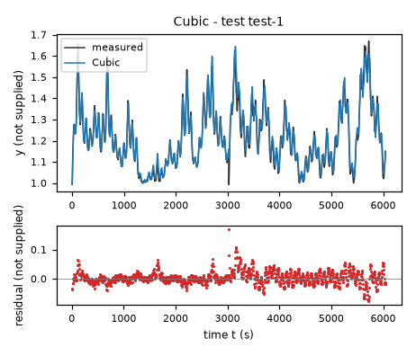
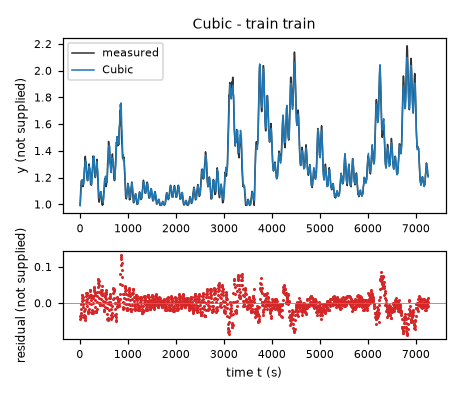
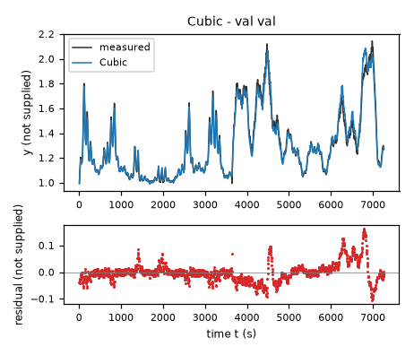
| Data | Trajectory | Scored samples | RMSE | NRMSE | R² | Failure |
|---|---|---|---|---|---|---|
| training data | train | 1451 of 1451 | 0.02684 | 0.1029 | 0.9894 | none |
| validation data | val | 1453 of 1453 | 0.03653 | 0.1391 | 0.9806 | none |
| test data | test-1 | 1209 of 1209 | 0.02323 | 0.1667 | 0.9722 | none |
RMSE of y; NRMSE = RMSE / σ and R² = 1 − SSE / Σ(y[k] − μ)², with μ and σ the mean and the population standard deviation of the measured output on the scored samples.
oy = 1 unknown state unit (fixed), ox = 60 unknown input x1 unit (fixed), oz = 18 unknown input x2 unit (fixed), sy = 0.4 unknown state unit (fixed), sx = 30 unknown input x1 unit (fixed), sz = 10 unknown input x2 unit (fixed), width = 1.5 (fitted), b0 = 0.09729 unknown state unit/s (fitted), b1 = -0.03368 unknown state unit/s (fitted), b2 = 0.02165 unknown state unit/s (fitted), b3 = -0.006456 unknown state unit/s (fitted), m0_0 = 0.353 (fitted), m0_1 = 0.2911 (fitted), m0_2 = -0.4363 (fitted), w0 = 0.2393 unknown state unit/s (fitted), m1_0 = 1.751 (fitted), m1_1 = 0.3762 (fitted), m1_2 = 0.7823 (fitted), w1 = 0.1539 unknown state unit/s (fitted), m2_0 = 1.076 (fitted), m2_1 = 0.3716 (fitted), m2_2 = 0.809 (fitted), w2 = -1.334 unknown state unit/s (fitted), m3_0 = 0.08501 (fitted), m3_1 = -1.078 (fitted), m3_2 = -0.5779 (fitted), w3 = 0.1024 unknown state unit/s (fitted), m4_0 = 0.1958 (fitted), m4_1 = -1.12 (fitted), m4_2 = 0.06687 (fitted), w4 = 0.1521 unknown state unit/s (fitted), m5_0 = 0.6126 (fitted), m5_1 = 0.6174 (fitted), m5_2 = -0.14 (fitted), w5 = -0.3794 unknown state unit/s (fitted), m6_0 = 1.187 (fitted), m6_1 = 0.6353 (fitted), m6_2 = 0.3747 (fitted), w6 = 1.085 unknown state unit/s (fitted), m7_0 = 0.1134 (fitted), m7_1 = -0.2036 (fitted), m7_2 = -0.819 (fitted), w7 = 0.703 unknown state unit/s (fitted), m8_0 = 0.463 (fitted), m8_1 = 0.225 (fitted), m8_2 = -0.06565 (fitted), w8 = 0.4643 unknown state unit/s (fitted), m9_0 = 2.246 (fitted), m9_1 = 0.6056 (fitted), m9_2 = 0.8462 (fitted), w9 = -0.423 unknown state unit/s (fitted), m10_0 = 0.1912 (fitted), m10_1 = -0.2764 (fitted), m10_2 = -0.3181 (fitted), w10 = -0.9958 unknown state unit/s (fitted), m11_0 = 0.101 (fitted), m11_1 = 0.3588 (fitted), m11_2 = -1.354 (fitted), w11 = -0.7259 unknown state unit/s (fitted), m12_0 = 0.6187 (fitted), m12_1 = 0.6875 (fitted), m12_2 = -0.6664 (fitted), w12 = 0.1886 unknown state unit/s (fitted), m13_0 = 0.3238 (fitted), m13_1 = -1.159 (fitted), m13_2 = 0.7511 (fitted), w13 = -0.1757 unknown state unit/s (fitted), m14_0 = 0.4252 (fitted), m14_1 = -0.1086 (fitted), m14_2 = 0.2521 (fitted), w14 = -0.0189 unknown state unit/s (fitted), m15_0 = 1.16 (fitted), m15_1 = 0.6681 (fitted), m15_2 = -0.3148 (fitted), w15 = -0.1828 unknown state unit/s (fitted), m16_0 = 2.026 (fitted), m16_1 = 0.8158 (fitted), m16_2 = 0.2534 (fitted), w16 = -0.4246 unknown state unit/s (fitted), m17_0 = -0.0007412 (fitted), m17_1 = -1.079 (fitted), m17_2 = -1.387 (fitted), w17 = -0.2415 unknown state unit/s (fitted), m18_0 = 0.002863 (fitted), m18_1 = -0.1864 (fitted), m18_2 = -1.528 (fitted), w18 = 0.2555 unknown state unit/s (fitted), m19_0 = 1.616 (fitted), m19_1 = 0.7641 (fitted), m19_2 = 0.7685 (fitted), w19 = 0.5912 unknown state unit/s (fitted), m20_0 = 0.7585 (fitted), m20_1 = 0.3842 (fitted), m20_2 = 0.3747 (fitted), w20 = -1.143 unknown state unit/s (fitted), m21_0 = 0.7248 (fitted), m21_1 = 0.04627 (fitted), m21_2 = 0.7067 (fitted), w21 = 1.315 unknown state unit/s (fitted), m22_0 = 0.2836 (fitted), m22_1 = 0.4474 (fitted), m22_2 = -0.8434 (fitted), w22 = 0.2826 unknown state unit/s (fitted), m23_0 = 2.632 (fitted), m23_1 = 0.775 (fitted), m23_2 = 0.6326 (fitted), w23 = 0.3037 unknown state unit/s (fitted)y: 0.02904 · validation error: 0.03592 · test error: 0.0242Equations as written in the model file
dy = b0*1 + b1*((y-oy)/sy) + b2*((x1-ox)/sx) + b3*((x2-oz)/sz) + w0*exp(-((((y-oy)/sy)-m0_0)**2 + (((x1-ox)/sx)-m0_1)**2 + (((x2-oz)/sz)-m0_2)**2)/(2*width**2)) + w1*exp(-((((y-oy)/sy)-m1_0)**2 + (((x1-ox)/sx)-m1_1)**2 + (((x2-oz)/sz)-m1_2)**2)/(2*width**2)) + w2*exp(-((((y-oy)/sy)-m2_0)**2 + (((x1-ox)/sx)-m2_1)**2 + (((x2-oz)/sz)-m2_2)**2)/(2*width**2)) + w3*exp(-((((y-oy)/sy)-m3_0)**2 + (((x1-ox)/sx)-m3_1)**2 + (((x2-oz)/sz)-m3_2)**2)/(2*width**2)) + w4*exp(-((((y-oy)/sy)-m4_0)**2 + (((x1-ox)/sx)-m4_1)**2 + (((x2-oz)/sz)-m4_2)**2)/(2*width**2)) + w5*exp(-((((y-oy)/sy)-m5_0)**2 + (((x1-ox)/sx)-m5_1)**2 + (((x2-oz)/sz)-m5_2)**2)/(2*width**2)) + w6*exp(-((((y-oy)/sy)-m6_0)**2 + (((x1-ox)/sx)-m6_1)**2 + (((x2-oz)/sz)-m6_2)**2)/(2*width**2)) + w7*exp(-((((y-oy)/sy)-m7_0)**2 + (((x1-ox)/sx)-m7_1)**2 + (((x2-oz)/sz)-m7_2)**2)/(2*width**2)) + w8*exp(-((((y-oy)/sy)-m8_0)**2 + (((x1-ox)/sx)-m8_1)**2 + (((x2-oz)/sz)-m8_2)**2)/(2*width**2)) + w9*exp(-((((y-oy)/sy)-m9_0)**2 + (((x1-ox)/sx)-m9_1)**2 + (((x2-oz)/sz)-m9_2)**2)/(2*width**2)) + w10*exp(-((((y-oy)/sy)-m10_0)**2 + (((x1-ox)/sx)-m10_1)**2 + (((x2-oz)/sz)-m10_2)**2)/(2*width**2)) + w11*exp(-((((y-oy)/sy)-m11_0)**2 + (((x1-ox)/sx)-m11_1)**2 + (((x2-oz)/sz)-m11_2)**2)/(2*width**2)) + w12*exp(-((((y-oy)/sy)-m12_0)**2 + (((x1-ox)/sx)-m12_1)**2 + (((x2-oz)/sz)-m12_2)**2)/(2*width**2)) + w13*exp(-((((y-oy)/sy)-m13_0)**2 + (((x1-ox)/sx)-m13_1)**2 + (((x2-oz)/sz)-m13_2)**2)/(2*width**2)) + w14*exp(-((((y-oy)/sy)-m14_0)**2 + (((x1-ox)/sx)-m14_1)**2 + (((x2-oz)/sz)-m14_2)**2)/(2*width**2)) + w15*exp(-((((y-oy)/sy)-m15_0)**2 + (((x1-ox)/sx)-m15_1)**2 + (((x2-oz)/sz)-m15_2)**2)/(2*width**2)) + w16*exp(-((((y-oy)/sy)-m16_0)**2 + (((x1-ox)/sx)-m16_1)**2 + (((x2-oz)/sz)-m16_2)**2)/(2*width**2)) + w17*exp(-((((y-oy)/sy)-m17_0)**2 + (((x1-ox)/sx)-m17_1)**2 + (((x2-oz)/sz)-m17_2)**2)/(2*width**2)) + w18*exp(-((((y-oy)/sy)-m18_0)**2 + (((x1-ox)/sx)-m18_1)**2 + (((x2-oz)/sz)-m18_2)**2)/(2*width**2)) + w19*exp(-((((y-oy)/sy)-m19_0)**2 + (((x1-ox)/sx)-m19_1)**2 + (((x2-oz)/sz)-m19_2)**2)/(2*width**2)) + w20*exp(-((((y-oy)/sy)-m20_0)**2 + (((x1-ox)/sx)-m20_1)**2 + (((x2-oz)/sz)-m20_2)**2)/(2*width**2)) + w21*exp(-((((y-oy)/sy)-m21_0)**2 + (((x1-ox)/sx)-m21_1)**2 + (((x2-oz)/sz)-m21_2)**2)/(2*width**2)) + w22*exp(-((((y-oy)/sy)-m22_0)**2 + (((x1-ox)/sx)-m22_1)**2 + (((x2-oz)/sz)-m22_2)**2)/(2*width**2)) + w23*exp(-((((y-oy)/sy)-m23_0)**2 + (((x1-ox)/sx)-m23_1)**2 + (((x2-oz)/sz)-m23_2)**2)/(2*width**2))
Equations with the values substituted
Every parameter is replaced by its value with 4 significant digits.
Parameters and estimation
| Name | Value | Unit | Type | Description |
|---|---|---|---|---|
oy | 1 | unknown state unit | fixed | State centering value; chosen near the lower observed range to condition the library. |
ox | 60 | unknown input x1 unit | fixed | Input centering value; convenient round value near the training mean. |
oz | 18 | unknown input x2 unit | fixed | Input centering value; convenient round value near the training mean. |
sy | 0.4 | unknown state unit | fixed | State scale; chosen to put the observed state variation near order one. |
sx | 30 | unknown input x1 unit | fixed | Input scale; chosen for order-one variation and smooth interpolation. |
sz | 10 | unknown input x2 unit | fixed | Input scale; chosen for order-one variation and smooth interpolation. |
width | 1.5 | - | fitted | Dimensionless Gaussian width selected by validation free-running RMSE from the tested width grid, conditional on the chosen center count and ridge strength. |
b0 | 0.097286 | unknown state unit/s | fitted | Affine baseline coefficient multiplying 1; jointly estimated with radial-basis weights by ridge regression. |
b1 | -0.0336779 | unknown state unit/s | fitted | Affine baseline coefficient multiplying ; jointly estimated with radial-basis weights by ridge regression. |
b2 | 0.0216509 | unknown state unit/s | fitted | Affine baseline coefficient multiplying ; jointly estimated with radial-basis weights by ridge regression. |
b3 | -0.00645557 | unknown state unit/s | fitted | Affine baseline coefficient multiplying ; jointly estimated with radial-basis weights by ridge regression. |
m0_0 | 0.353038 | - | fitted | Dimensionless center coordinate in normalized y, obtained by training-only K-means clustering before coefficient fitting. |
m0_1 | 0.291081 | - | fitted | Dimensionless center coordinate in normalized x1, obtained by training-only K-means clustering before coefficient fitting. |
m0_2 | -0.436294 | - | fitted | Dimensionless center coordinate in normalized x2, obtained by training-only K-means clustering before coefficient fitting. |
w0 | 0.239264 | unknown state unit/s | fitted | Weight of Gaussian radial basis ; jointly estimated by ridge regression after centers were estimated. |
m1_0 | 1.75059 | - | fitted | Dimensionless center coordinate in normalized y, obtained by training-only K-means clustering before coefficient fitting. |
m1_1 | 0.376217 | - | fitted | Dimensionless center coordinate in normalized x1, obtained by training-only K-means clustering before coefficient fitting. |
m1_2 | 0.782282 | - | fitted | Dimensionless center coordinate in normalized x2, obtained by training-only K-means clustering before coefficient fitting. |
w1 | 0.153877 | unknown state unit/s | fitted | Weight of Gaussian radial basis ; jointly estimated by ridge regression after centers were estimated. |
m2_0 | 1.07627 | - | fitted | Dimensionless center coordinate in normalized y, obtained by training-only K-means clustering before coefficient fitting. |
m2_1 | 0.371565 | - | fitted | Dimensionless center coordinate in normalized x1, obtained by training-only K-means clustering before coefficient fitting. |
m2_2 | 0.80902 | - | fitted | Dimensionless center coordinate in normalized x2, obtained by training-only K-means clustering before coefficient fitting. |
w2 | -1.33353 | unknown state unit/s | fitted | Weight of Gaussian radial basis ; jointly estimated by ridge regression after centers were estimated. |
m3_0 | 0.085008 | - | fitted | Dimensionless center coordinate in normalized y, obtained by training-only K-means clustering before coefficient fitting. |
m3_1 | -1.07754 | - | fitted | Dimensionless center coordinate in normalized x1, obtained by training-only K-means clustering before coefficient fitting. |
m3_2 | -0.57794 | - | fitted | Dimensionless center coordinate in normalized x2, obtained by training-only K-means clustering before coefficient fitting. |
w3 | 0.10241 | unknown state unit/s | fitted | Weight of Gaussian radial basis ; jointly estimated by ridge regression after centers were estimated. |
m4_0 | 0.195841 | - | fitted | Dimensionless center coordinate in normalized y, obtained by training-only K-means clustering before coefficient fitting. |
m4_1 | -1.1205 | - | fitted | Dimensionless center coordinate in normalized x1, obtained by training-only K-means clustering before coefficient fitting. |
m4_2 | 0.0668665 | - | fitted | Dimensionless center coordinate in normalized x2, obtained by training-only K-means clustering before coefficient fitting. |
w4 | 0.152107 | unknown state unit/s | fitted | Weight of Gaussian radial basis ; jointly estimated by ridge regression after centers were estimated. |
m5_0 | 0.612624 | - | fitted | Dimensionless center coordinate in normalized y, obtained by training-only K-means clustering before coefficient fitting. |
m5_1 | 0.617411 | - | fitted | Dimensionless center coordinate in normalized x1, obtained by training-only K-means clustering before coefficient fitting. |
m5_2 | -0.140004 | - | fitted | Dimensionless center coordinate in normalized x2, obtained by training-only K-means clustering before coefficient fitting. |
w5 | -0.379362 | unknown state unit/s | fitted | Weight of Gaussian radial basis ; jointly estimated by ridge regression after centers were estimated. |
m6_0 | 1.18706 | - | fitted | Dimensionless center coordinate in normalized y, obtained by training-only K-means clustering before coefficient fitting. |
m6_1 | 0.635348 | - | fitted | Dimensionless center coordinate in normalized x1, obtained by training-only K-means clustering before coefficient fitting. |
m6_2 | 0.374736 | - | fitted | Dimensionless center coordinate in normalized x2, obtained by training-only K-means clustering before coefficient fitting. |
w6 | 1.08477 | unknown state unit/s | fitted | Weight of Gaussian radial basis ; jointly estimated by ridge regression after centers were estimated. |
m7_0 | 0.11339 | - | fitted | Dimensionless center coordinate in normalized y, obtained by training-only K-means clustering before coefficient fitting. |
m7_1 | -0.20358 | - | fitted | Dimensionless center coordinate in normalized x1, obtained by training-only K-means clustering before coefficient fitting. |
m7_2 | -0.819025 | - | fitted | Dimensionless center coordinate in normalized x2, obtained by training-only K-means clustering before coefficient fitting. |
w7 | 0.702988 | unknown state unit/s | fitted | Weight of Gaussian radial basis ; jointly estimated by ridge regression after centers were estimated. |
m8_0 | 0.463035 | - | fitted | Dimensionless center coordinate in normalized y, obtained by training-only K-means clustering before coefficient fitting. |
m8_1 | 0.224989 | - | fitted | Dimensionless center coordinate in normalized x1, obtained by training-only K-means clustering before coefficient fitting. |
m8_2 | -0.0656466 | - | fitted | Dimensionless center coordinate in normalized x2, obtained by training-only K-means clustering before coefficient fitting. |
w8 | 0.464318 | unknown state unit/s | fitted | Weight of Gaussian radial basis ; jointly estimated by ridge regression after centers were estimated. |
m9_0 | 2.24588 | - | fitted | Dimensionless center coordinate in normalized y, obtained by training-only K-means clustering before coefficient fitting. |
m9_1 | 0.605621 | - | fitted | Dimensionless center coordinate in normalized x1, obtained by training-only K-means clustering before coefficient fitting. |
m9_2 | 0.846163 | - | fitted | Dimensionless center coordinate in normalized x2, obtained by training-only K-means clustering before coefficient fitting. |
w9 | -0.422951 | unknown state unit/s | fitted | Weight of Gaussian radial basis ; jointly estimated by ridge regression after centers were estimated. |
m10_0 | 0.191197 | - | fitted | Dimensionless center coordinate in normalized y, obtained by training-only K-means clustering before coefficient fitting. |
m10_1 | -0.276364 | - | fitted | Dimensionless center coordinate in normalized x1, obtained by training-only K-means clustering before coefficient fitting. |
m10_2 | -0.318085 | - | fitted | Dimensionless center coordinate in normalized x2, obtained by training-only K-means clustering before coefficient fitting. |
w10 | -0.995753 | unknown state unit/s | fitted | Weight of Gaussian radial basis ; jointly estimated by ridge regression after centers were estimated. |
m11_0 | 0.101042 | - | fitted | Dimensionless center coordinate in normalized y, obtained by training-only K-means clustering before coefficient fitting. |
m11_1 | 0.358809 | - | fitted | Dimensionless center coordinate in normalized x1, obtained by training-only K-means clustering before coefficient fitting. |
m11_2 | -1.35413 | - | fitted | Dimensionless center coordinate in normalized x2, obtained by training-only K-means clustering before coefficient fitting. |
w11 | -0.725942 | unknown state unit/s | fitted | Weight of Gaussian radial basis ; jointly estimated by ridge regression after centers were estimated. |
m12_0 | 0.618697 | - | fitted | Dimensionless center coordinate in normalized y, obtained by training-only K-means clustering before coefficient fitting. |
m12_1 | 0.687518 | - | fitted | Dimensionless center coordinate in normalized x1, obtained by training-only K-means clustering before coefficient fitting. |
m12_2 | -0.666353 | - | fitted | Dimensionless center coordinate in normalized x2, obtained by training-only K-means clustering before coefficient fitting. |
w12 | 0.188571 | unknown state unit/s | fitted | Weight of Gaussian radial basis ; jointly estimated by ridge regression after centers were estimated. |
m13_0 | 0.323811 | - | fitted | Dimensionless center coordinate in normalized y, obtained by training-only K-means clustering before coefficient fitting. |
m13_1 | -1.15884 | - | fitted | Dimensionless center coordinate in normalized x1, obtained by training-only K-means clustering before coefficient fitting. |
m13_2 | 0.751138 | - | fitted | Dimensionless center coordinate in normalized x2, obtained by training-only K-means clustering before coefficient fitting. |
w13 | -0.175691 | unknown state unit/s | fitted | Weight of Gaussian radial basis ; jointly estimated by ridge regression after centers were estimated. |
m14_0 | 0.425208 | - | fitted | Dimensionless center coordinate in normalized y, obtained by training-only K-means clustering before coefficient fitting. |
m14_1 | -0.108564 | - | fitted | Dimensionless center coordinate in normalized x1, obtained by training-only K-means clustering before coefficient fitting. |
m14_2 | 0.252123 | - | fitted | Dimensionless center coordinate in normalized x2, obtained by training-only K-means clustering before coefficient fitting. |
w14 | -0.0188962 | unknown state unit/s | fitted | Weight of Gaussian radial basis ; jointly estimated by ridge regression after centers were estimated. |
m15_0 | 1.16002 | - | fitted | Dimensionless center coordinate in normalized y, obtained by training-only K-means clustering before coefficient fitting. |
m15_1 | 0.668059 | - | fitted | Dimensionless center coordinate in normalized x1, obtained by training-only K-means clustering before coefficient fitting. |
m15_2 | -0.314753 | - | fitted | Dimensionless center coordinate in normalized x2, obtained by training-only K-means clustering before coefficient fitting. |
w15 | -0.18278 | unknown state unit/s | fitted | Weight of Gaussian radial basis ; jointly estimated by ridge regression after centers were estimated. |
m16_0 | 2.02644 | - | fitted | Dimensionless center coordinate in normalized y, obtained by training-only K-means clustering before coefficient fitting. |
m16_1 | 0.815751 | - | fitted | Dimensionless center coordinate in normalized x1, obtained by training-only K-means clustering before coefficient fitting. |
m16_2 | 0.253366 | - | fitted | Dimensionless center coordinate in normalized x2, obtained by training-only K-means clustering before coefficient fitting. |
w16 | -0.424621 | unknown state unit/s | fitted | Weight of Gaussian radial basis ; jointly estimated by ridge regression after centers were estimated. |
m17_0 | -0.000741191 | - | fitted | Dimensionless center coordinate in normalized y, obtained by training-only K-means clustering before coefficient fitting. |
m17_1 | -1.07946 | - | fitted | Dimensionless center coordinate in normalized x1, obtained by training-only K-means clustering before coefficient fitting. |
m17_2 | -1.38669 | - | fitted | Dimensionless center coordinate in normalized x2, obtained by training-only K-means clustering before coefficient fitting. |
w17 | -0.24151 | unknown state unit/s | fitted | Weight of Gaussian radial basis ; jointly estimated by ridge regression after centers were estimated. |
m18_0 | 0.00286303 | - | fitted | Dimensionless center coordinate in normalized y, obtained by training-only K-means clustering before coefficient fitting. |
m18_1 | -0.18639 | - | fitted | Dimensionless center coordinate in normalized x1, obtained by training-only K-means clustering before coefficient fitting. |
m18_2 | -1.52762 | - | fitted | Dimensionless center coordinate in normalized x2, obtained by training-only K-means clustering before coefficient fitting. |
w18 | 0.255458 | unknown state unit/s | fitted | Weight of Gaussian radial basis ; jointly estimated by ridge regression after centers were estimated. |
m19_0 | 1.61628 | - | fitted | Dimensionless center coordinate in normalized y, obtained by training-only K-means clustering before coefficient fitting. |
m19_1 | 0.764135 | - | fitted | Dimensionless center coordinate in normalized x1, obtained by training-only K-means clustering before coefficient fitting. |
m19_2 | 0.768517 | - | fitted | Dimensionless center coordinate in normalized x2, obtained by training-only K-means clustering before coefficient fitting. |
w19 | 0.591173 | unknown state unit/s | fitted | Weight of Gaussian radial basis ; jointly estimated by ridge regression after centers were estimated. |
m20_0 | 0.758487 | - | fitted | Dimensionless center coordinate in normalized y, obtained by training-only K-means clustering before coefficient fitting. |
m20_1 | 0.384196 | - | fitted | Dimensionless center coordinate in normalized x1, obtained by training-only K-means clustering before coefficient fitting. |
m20_2 | 0.374706 | - | fitted | Dimensionless center coordinate in normalized x2, obtained by training-only K-means clustering before coefficient fitting. |
w20 | -1.14309 | unknown state unit/s | fitted | Weight of Gaussian radial basis ; jointly estimated by ridge regression after centers were estimated. |
m21_0 | 0.724829 | - | fitted | Dimensionless center coordinate in normalized y, obtained by training-only K-means clustering before coefficient fitting. |
m21_1 | 0.0462653 | - | fitted | Dimensionless center coordinate in normalized x1, obtained by training-only K-means clustering before coefficient fitting. |
m21_2 | 0.70667 | - | fitted | Dimensionless center coordinate in normalized x2, obtained by training-only K-means clustering before coefficient fitting. |
w21 | 1.31544 | unknown state unit/s | fitted | Weight of Gaussian radial basis ; jointly estimated by ridge regression after centers were estimated. |
m22_0 | 0.283624 | - | fitted | Dimensionless center coordinate in normalized y, obtained by training-only K-means clustering before coefficient fitting. |
m22_1 | 0.447445 | - | fitted | Dimensionless center coordinate in normalized x1, obtained by training-only K-means clustering before coefficient fitting. |
m22_2 | -0.843439 | - | fitted | Dimensionless center coordinate in normalized x2, obtained by training-only K-means clustering before coefficient fitting. |
w22 | 0.282566 | unknown state unit/s | fitted | Weight of Gaussian radial basis ; jointly estimated by ridge regression after centers were estimated. |
m23_0 | 2.63183 | - | fitted | Dimensionless center coordinate in normalized y, obtained by training-only K-means clustering before coefficient fitting. |
m23_1 | 0.775029 | - | fitted | Dimensionless center coordinate in normalized x1, obtained by training-only K-means clustering before coefficient fitting. |
m23_2 | 0.632579 | - | fitted | Dimensionless center coordinate in normalized x2, obtained by training-only K-means clustering before coefficient fitting. |
w23 | 0.303681 | unknown state unit/s | fitted | Weight of Gaussian radial basis ; jointly estimated by ridge regression after centers were estimated. |
- Criterion minimized
The centers minimize K-means within-cluster squared Euclidean distances on normalized training variables. Conditional on centers and width, weights minimize squared residuals on logged
dyplus a ridge penalty:1e-5times the squared Gaussian weights plus1e-7times the squared affine weights. Residual and penalty units are squared unknown state units per second squared. Regularization limits large canceling coefficients; width is chosen by validation free-running state RMSE.- Data
All rows of
data/train.csvestimate centers and coefficients.data/val.csvselects library size, width, and regularization and checks free-running behavior; no validation rows enter center clustering or coefficient regression.- Method
First,
sklearn.cluster.KMeansestimates24centers with K-means++ initialization, , and on the fixed normalized variables. Coefficient starting values are not needed. Conditional on each trial width, all affine coefficients and Gaussian weights are estimated together by solving the ridge normal equations withnumpy.linalg.solve. Center counts12,24,40, and64, widths0.7,1,1.5, and2, and ridge strengths1e-5,0.001,0.1, and1were tested. These counts and normalized widths are dimensionless; strengths multiply squared coefficient penalties in the criterion stated above. The selected width is1.5and selected ridge strength is1e-5. The globally best RBF validation error used more centers, but the retained24-center model was almost identical in validation error and is smaller. All center estimates precede weight estimates because the fixed basis makes the latter convex and reproducible. No trajectory refinement of weights is included.- Script
rbf_screen.py
The agent's explanation
Gaussian radial-basis-function regression with an affine baseline, used as a continuous-time nonlinear state-space vector field. Reference: Broomhead and Lowe, Multivariable functional interpolation and adaptive networks, 1988 (cited from memory, not checked).
The affine terms provide global drift and linear restoring or forcing effects. Each Gaussian creates a smooth local correction around a training-derived center in normalized state-input space. Coefficients and centers have no known physical interpretation. Gaussian corrections vanish far from all centers, leaving the fitted affine baseline.
Polynomial, rational, and transformed-state models reached similar validation errors, while residuals retained nonlinear patterns. A smooth radial-basis interpolation library was tested to capture patterns not confined to a low-degree polynomial. Center locations come from unsupervised clustering, not physical reasoning. Width, number of centers, and ridge penalty were selected over explicitly reported grids. This is not a genetic symbolic-regression result and no hidden black-box predictor remains in the expression.
The units and physical system are unknown. Only one supplied training trajectory and one supplied validation trajectory are available. Validation was used repeatedly for structure selection, so its error is not an unbiased estimate of generalization. Inputs and state are correlated, and global behavior is not identified. No delayed or future input is present. Residuals suggest sampling alignment or omitted dynamics: cubic derivative residual correlation with x2 at the next sample minus its current value is approximately 0.8375 on training and 0.7193 on validation; this diagnostic is not proof of causation. These memoryless models cannot explicitly reproduce that dependence. This is the least compact candidate. It interpolates the sampled manifold but is weakly identified away from it; the affine extrapolation is not a guaranteed physical stability law. Extensive validation selection can favor this flexible family. Validation free-running RMSE is 0.0359194 in unknown state units, and training free-running RMSE is 0.0290418 in unknown state units, excluding first samples. Validation derivative RMSE is 0.00192984 in unknown state units per second.
Plots of simulated and measured y, and errors per trajectory
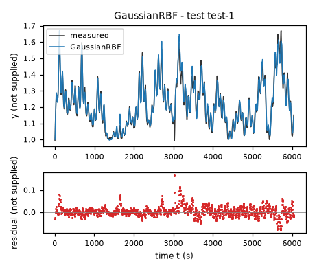
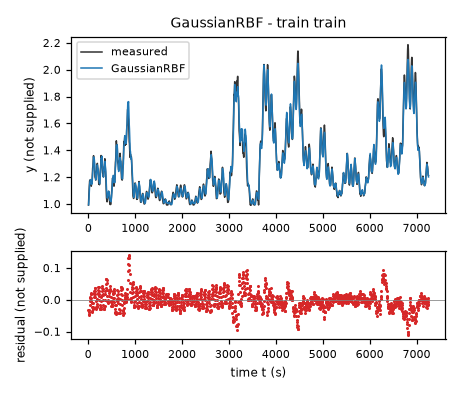
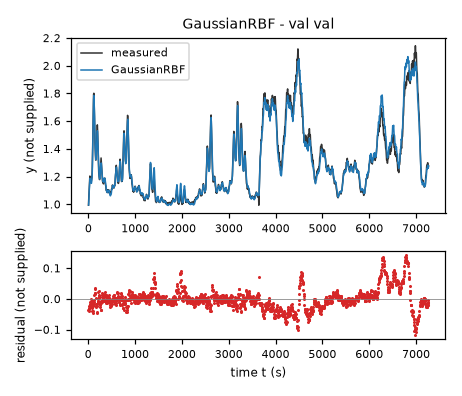
| Data | Trajectory | Scored samples | RMSE | NRMSE | R² | Failure |
|---|---|---|---|---|---|---|
| training data | train | 1451 of 1451 | 0.02904 | 0.1114 | 0.9876 | none |
| validation data | val | 1453 of 1453 | 0.03592 | 0.1368 | 0.9813 | none |
| test data | test-1 | 1209 of 1209 | 0.0242 | 0.1737 | 0.9698 | none |
RMSE of y; NRMSE = RMSE / σ and R² = 1 − SSE / Σ(y[k] − μ)², with μ and σ the mean and the population standard deviation of the measured output on the scored samples.
sx = 100 unknown input x1 unit (fixed), sz = 30 unknown input x2 unit (fixed), q = 0.8679 unknown state unit (fitted), eps = 1e-12 unknown state unit (fixed), c0 = -0.1525 unknown state unit/s (fitted), c1 = 0.1284 unknown state unit/s (fitted), c2 = 0.05941 unknown state unit/s (fitted), c3 = -0.07114 unknown state unit/s (fitted), c4 = 0.07016 unknown state unit/s (fitted), c5 = -0.001817 unknown state unit/s (fitted), c6 = -0.03075 unknown state unit/s (fitted), c7 = 0.03143 unknown state unit/s (fitted)y: 0.02491 · validation error: 0.03797 · test error: 0.02286Equations as written in the model file
dy = c0*(1) + c1*((x1/sx)) + c2*((x2/sz)) + c3*(log(Max(y-q,eps))) + c4*((x1/sx)*log(Max(y-q,eps))) + c5*((x2/sz)*log(Max(y-q,eps))) + c6*((x1/sx)*(x2/sz)) + c7*((x1/sx)**2)
Equations with the values substituted
Every parameter is replaced by its value with 4 significant digits.
Parameters and estimation
| Name | Value | Unit | Type | Description |
|---|---|---|---|---|
sx | 100 | unknown input x1 unit | fixed | Scale of x1; chosen as a convenient round value near the observed input range, not a fitted physical constant. |
sz | 30 | unknown input x2 unit | fixed | Scale of x2; chosen as a convenient round value near the observed training input range, not a physical constant. |
q | 0.867942 | unknown state unit | fitted | Logarithm shift, jointly fitted with all interaction coefficients in the final one-step RK4 criterion. |
eps | 1e-12 | unknown state unit | fixed | Positive numerical floor in the logarithm argument, chosen solely to keep trial and simulated values finite; inactive on fitted measured states. |
c0 | -0.152465 | unknown state unit/s | fitted | Coefficient of 1; jointly estimated by one-step RK4 nonlinear least squares. |
c1 | 0.128433 | unknown state unit/s | fitted | Coefficient of ; jointly estimated by one-step RK4 nonlinear least squares. |
c2 | 0.0594097 | unknown state unit/s | fitted | Coefficient of ; jointly estimated by one-step RK4 nonlinear least squares. |
c3 | -0.0711408 | unknown state unit/s | fitted | Coefficient of ; jointly estimated by one-step RK4 nonlinear least squares. |
c4 | 0.0701625 | unknown state unit/s | fitted | Coefficient of ; jointly estimated by one-step RK4 nonlinear least squares. |
c5 | -0.00181726 | unknown state unit/s | fitted | Coefficient of ; jointly estimated by one-step RK4 nonlinear least squares. |
c6 | -0.0307495 | unknown state unit/s | fitted | Coefficient of ; jointly estimated by one-step RK4 nonlinear least squares. |
c7 | 0.0314322 | unknown state unit/s | fitted | Coefficient of ; jointly estimated by one-step RK4 nonlinear least squares. |
- Criterion minimized
Unweighted sum of squared one-step state prediction errors on every consecutive training pair. Each RK4 step starts from the measured state and holds that row of inputs constant for s. This estimates the continuous-time model for the actual numerical integration convention rather than treating an interval derivative as exact instantaneous truth. Free-running evaluation is separate and never resets the state.
- Data
All consecutive pairs in
data/train.csvfor final estimation; all training rows for initial derivative ordinary least squares.data/val.csvonly for structure selection and diagnostics.- Method
Two-stage deterministic estimation. For each of two initial shifts, all coefficients are initialized by
numpy.linalg.lstsqagainst trainingdy. The resulting complete starting vectors, in coefficient order followed byq, are[-0.07880807316332075, 0.01926045174898322, 0.03047277373217694, -0.02040445483477376, 0.017669377538969046, -0.009256146786082907, -0.009012379212457823, 0.0641722948771082, 0.98];[-0.09365974005349469, 0.06084253898121465, 0.04017817171879621, -0.13469582685006587, 0.12686157968131026, 0.013034822829222338, -0.007176516793813849, 0.03574998705727306, 0.5]. Coefficients have unknown state units per second andqhas unknown state units. Then all coefficients andqare jointly fitted with trust-region reflective nonlinear least squares,scipy.optimize.least_squares, usingx_scale = "jac", at most350function evaluations, and function, step, and gradient tolerances1e-10. Coefficient bounds are in unknown state units per second; shift bounds are in unknown state units. Bounds prevent singularity in the measured state range and extreme coefficients. The lower training one-step sum of squares selects the second start. No random seed applies. Additional transformed-state and input libraries and multistep objectives were tested but are not included in this fit.- Script
helper2.py
The agent's explanation
Logarithmic transformed-state nonlinear regression with bilinear interactions, implemented as a continuous-time nonlinear state-space vector field.
provides strong curvature near the shifted lower state region and weaker curvature at higher state. Its coefficients combined with and produce input-dependent restoring sensitivity. The remaining terms provide constant, linear, quadratic, and interacting input forcing. The floor is a numerical safeguard, not a physical lower bound.
Square-root, logarithm, exponential, arctangent, and power state transforms were deterministic hypotheses motivated by residual curvature and failure of the affine baseline. Input interactions were included because quadratic regression showed them to matter. Among these families, the logarithm with an additional quadratic term in had the strongest validation free-running performance. It differs from the polynomial by using a shifted nonlinear state coordinate and from derivative fitting by using measured-state RK4 transition errors.
The units and physical system are unknown. Only one supplied training trajectory and one supplied validation trajectory are available. Validation was used repeatedly for structure selection, so its error is not an unbiased estimate of generalization. Inputs and state are correlated, and global behavior is not identified. No delayed or future input is present. Residuals suggest sampling alignment or omitted dynamics: cubic derivative residual correlation with x2 at the next sample minus its current value is approximately 0.8375 on training and 0.7193 on validation; this diagnostic is not proof of causation. These memoryless models cannot explicitly reproduce that dependence. Behavior below is determined by the imposed floor and has no empirical support. The logarithm is an empirical transform in the supplied numerical state scale, not a dimensionally established physical law. Validation free-running RMSE is 0.0379691 in unknown state units; training RMSE is 0.0249076 in unknown state units, excluding first samples.
Plots of simulated and measured y, and errors per trajectory
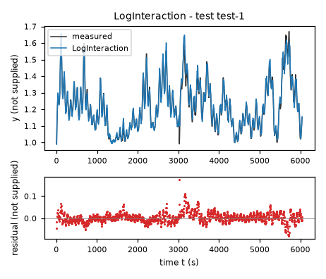
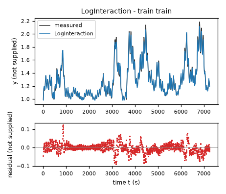
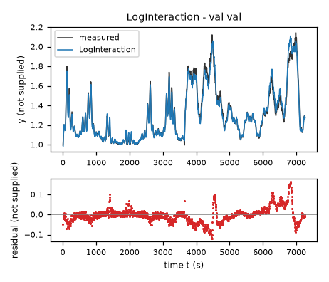
| Data | Trajectory | Scored samples | RMSE | NRMSE | R² | Failure |
|---|---|---|---|---|---|---|
| training data | train | 1451 of 1451 | 0.02491 | 0.09552 | 0.9909 | none |
| validation data | val | 1453 of 1453 | 0.03797 | 0.1446 | 0.9791 | none |
| test data | test-1 | 1209 of 1209 | 0.02286 | 0.1641 | 0.9731 | none |
RMSE of y; NRMSE = RMSE / σ and R² = 1 − SSE / Σ(y[k] − μ)², with μ and σ the mean and the population standard deviation of the measured output on the scored samples.
sx = 100 unknown input x1 unit (fixed), sz = 30 unknown input x2 unit (fixed), yc = 1 unknown state unit (fixed), d = 0.9465 inverse unknown state unit (fitted), a0 = -0.0009265 unknown state unit**1/s (fitted), a1 = -0.297 unknown state unit**0/s (fitted), a2 = -0.01756 unknown state unit**1/s (fitted), a3 = 0.02588 unknown state unit**1/s (fitted), a4 = -0.01096 unknown state unit**-1/s (fitted), a5 = 0.3078 unknown state unit**0/s (fitted), a6 = 0.04169 unknown state unit**0/s (fitted), a7 = 0.02623 unknown state unit**1/s (fitted), a8 = -0.01576 unknown state unit**1/s (fitted), a9 = 0.01172 unknown state unit**1/s (fitted)y: 0.02836 · validation error: 0.03836 · test error: 0.02684Equations as written in the model file
dy = (a0*(1) + a1*((y-yc)) + a2*((x1/sx)) + a3*((x2/sz)) + a4*((y-yc)**2) + a5*((y-yc)*(x1/sx)) + a6*((y-yc)*(x2/sz)) + a7*((x1/sx)**2) + a8*((x1/sx)*(x2/sz)) + a9*((x2/sz)**2))/(1+d*(y-yc))
Equations with the values substituted
Every parameter is replaced by its value with 4 significant digits.
Parameters and estimation
| Name | Value | Unit | Type | Description |
|---|---|---|---|---|
sx | 100 | unknown input x1 unit | fixed | Scale of x1; chosen as a convenient round value near the observed input range, not a fitted physical constant. |
sz | 30 | unknown input x2 unit | fixed | Scale of x2; chosen as a convenient round value near the observed training input range, not a physical constant. |
yc | 1 | unknown state unit | fixed | Reference state in ; chosen near the observed lower state range to condition the basis; it is not an inferred physical lower bound. |
d | 0.946515 | inverse unknown state unit | fitted | Coefficient of in the rational denominator; estimated by variable projection nonlinear least squares. |
a0 | -0.000926548 | unknown state unit**1/s | fitted | Numerator coefficient multiplying 1; estimated by conditional ordinary least squares at each trial denominator. |
a1 | -0.297018 | unknown state unit**0/s | fitted | Numerator coefficient multiplying ; estimated by conditional ordinary least squares at each trial denominator. |
a2 | -0.0175575 | unknown state unit**1/s | fitted | Numerator coefficient multiplying ; estimated by conditional ordinary least squares at each trial denominator. |
a3 | 0.0258811 | unknown state unit**1/s | fitted | Numerator coefficient multiplying ; estimated by conditional ordinary least squares at each trial denominator. |
a4 | -0.0109624 | unknown state unit**-1/s | fitted | Numerator coefficient multiplying ; estimated by conditional ordinary least squares at each trial denominator. |
a5 | 0.30782 | unknown state unit**0/s | fitted | Numerator coefficient multiplying ; estimated by conditional ordinary least squares at each trial denominator. |
a6 | 0.0416858 | unknown state unit**0/s | fitted | Numerator coefficient multiplying ; estimated by conditional ordinary least squares at each trial denominator. |
a7 | 0.0262343 | unknown state unit**1/s | fitted | Numerator coefficient multiplying ; estimated by conditional ordinary least squares at each trial denominator. |
a8 | -0.0157591 | unknown state unit**1/s | fitted | Numerator coefficient multiplying ; estimated by conditional ordinary least squares at each trial denominator. |
a9 | 0.0117159 | unknown state unit**1/s | fitted | Numerator coefficient multiplying ; estimated by conditional ordinary least squares at each trial denominator. |
- Criterion minimized
Unweighted sum of squared residuals on the logged derivative
dy, to estimate the instantaneous vector field while allowing state-dependent curvature in a denominator.- Data
All rows of
data/train.csvestimated the parameters.data/val.csvwas used only to compare derivative and free-running state errors, not as a fitting target.- Method
Variable projection: for each denominator coefficient
d, all numerator coefficients are fitted jointly withnumpy.linalg.lstsqusingrcond = None;scipy.optimize.least_squaresthen minimizes the projected derivative residual vector overd. Initial in inverse unknown state units reduces to the quadratic polynomial and is a neutral start. Bounds are in inverse unknown state units, chosen to avoid a pole inside the observed training state range and limit extreme curvature. The outer method uses at most150function evaluations and otherwise SciPy defaults. Numerator coefficients need no starting values because they are solved directly. No seed applies. State-only, input-only, combined, and quadratic-state denominators were compared, with numerator degrees from1to3; this simple state denominator was retained.- Script
rational_screen.py
The agent's explanation
Rational nonlinear state-space model, quadratic numerator and affine state-dependent denominator, estimated with variable projection (separable nonlinear least squares).
Each numerator monomial provides constant drift, input forcing, state curvature, or state-input interaction. Division by reduces the magnitude of all terms as state increases over the observed range. This can represent state-dependent effective response times, but no physical storage law is asserted.
The derivative-fitted cubic showed remaining nonlinear residuals and state-dependent input sensitivity. A rational rescaling of a quadratic vector field was hypothesized as a compact alternative to higher polynomial degree. Several denominator libraries were searched deterministically; this candidate preserves modest complexity and good held-out simulation performance.
The units and physical system are unknown. Only one supplied training trajectory and one supplied validation trajectory are available. Validation was used repeatedly for structure selection, so its error is not an unbiased estimate of generalization. Inputs and state are correlated, and global behavior is not identified. No delayed or future input is present. Residuals suggest sampling alignment or omitted dynamics: cubic derivative residual correlation with x2 at the next sample minus its current value is approximately 0.8375 on training and 0.7193 on validation; this diagnostic is not proof of causation. These memoryless models cannot explicitly reproduce that dependence. The denominator has a pole outside the observed state interval, so the model is not defensible near that pole or at arbitrary extrapolated states. Validation free-running RMSE is 0.0383590 in unknown state units and training RMSE is 0.0283616 in unknown state units, excluding first samples.
Plots of simulated and measured y, and errors per trajectory
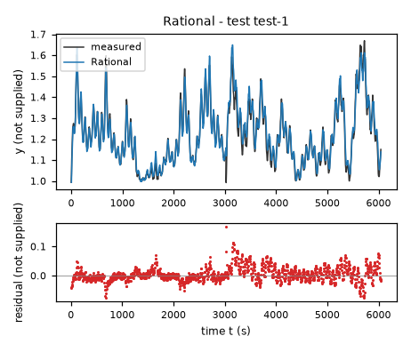
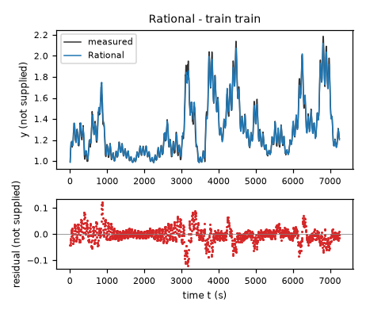
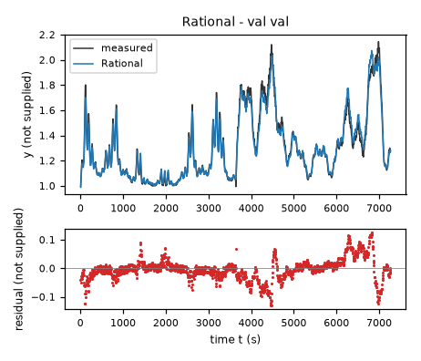
| Data | Trajectory | Scored samples | RMSE | NRMSE | R² | Failure |
|---|---|---|---|---|---|---|
| training data | train | 1451 of 1451 | 0.02836 | 0.1088 | 0.9882 | none |
| validation data | val | 1453 of 1453 | 0.03836 | 0.1461 | 0.9787 | none |
| test data | test-1 | 1209 of 1209 | 0.02684 | 0.1926 | 0.9629 | none |
RMSE of y; NRMSE = RMSE / σ and R² = 1 − SSE / Σ(y[k] − μ)², with μ and σ the mean and the population standard deviation of the measured output on the scored samples.
2 Course of the run
The system prompt, TASK.md and FORMAT.md that the agent received are shown on the page of the experiment.
0:00Harness: opening message to the agent
10:09Read TASK.md0.01
5,474 input and 19 output tokens; 0.011 USD for this turn.
TASK.md
output as sent to the agent (3,449 characters, 38 lines)
[TASK.md: 3422 characters] # Task: Identification task qtqm ## 1 System and intended use The task gives no description of the system. The task states no intended use of the model. ## 2 Data `data/train.csv` holds 1452 samples of training data: one trajectory of consecutive samples. `data/val.csv` holds 1454 samples of validation data: one trajectory of consecutive samples. Whether and how you use the validation data is your decision. Row k+1 of a trajectory is the sample that follows row k; different trajectories are separate experiments. The sampling period is T_s = 5 s. | Column | Role | Unit | Training range | Description | |---|---|---|---|---| | `y` | state, scored output | not supplied | not declared | not supplied | | `x1` | input | not supplied | not declared | not supplied | | `x2` | input | not supplied | not declared | not supplied | | `dy` | sampled time derivative of `y` | not supplied | not declared | not supplied | The task does not state the units. The task does not describe the columns. ## 3 What you deliver A candidate is a continuous-time model of one closed-form expression, `dy`: the time derivative of the state `y` as a function of `y`, `x1` and `x2`. The column `dy` is a possible fitting target for the derivative of `y`; it is not an argument of the expressions. `FORMAT.md` states how an expression is written and what it may contain. Write one file per candidate, `models/<label>.json`; `FORMAT.md` describes the file and gives an example. Write also `models/pool.json`, which lists the labels of your candidates in the order in which they are to be evaluated. You can recommend one candidate that you consider the best-performing. `models/pool.json` then names that candidate and gives your reason. Run `python check_submission.py` to check your files: it prints every error with its location, so that you can correct it. At most 10 candidates are evaluated, in the order of `models/pool.json`. Consider various identification approaches, for example physically motivated structures, symbolic-regression search or sparse regression; before fitting, list the approaches and the model families you will try. Build the pool from structurally different model families, not from variations of one form. Examine the residuals of your best candidates and try structures that can represent what they show. Include only candidates you would defend as a model of the system. ## 4 Evaluation The harness, the software that runs this task, evaluates every candidate on test data that you cannot access. For each test trajectory it starts from the first logged state and integrates the expressions with the classical fourth-order Runge–Kutta method, one step per sampling period, with the logged inputs held constant between samples; a simulated state is never replaced by a later measurement. The score is the root mean squared error (RMSE) between simulated and logged `y` over all test samples after the first of each trajectory. An evaluation fails when a value is not finite, when `y` leaves [-100, 100], or when it takes longer than 60 s. ## 5 Limits and completion One round: 60 turns, 3600 s of execution time, 10 USD; a turn is one response of yours. When the files pass the check, send the exact message DONE. If the harness's check of the files then fails, you receive its report and may correct the files once. If a limit ends the round earlier, the complete candidate files are evaluated.
20:11Read FORMAT.md0.02
6,270 input and 19 output tokens; 0.013 USD for this turn.
FORMAT.md
output as sent to the agent (8,159 characters, 128 lines)
[FORMAT.md: 8130 characters]
# Model file format
This file is the same for every task. `TASK.md` names the expression keys, the variables and the permitted functions of your task.
## Candidate file `models/<label>.json`
Write one JSON file per candidate. The label is the file name: a letter, then up to 31 letters, digits, `_` or `-`. The file has these fields and no others:
- `expressions`: one expression text per expression key named in `TASK.md`.
- `parameters`: one row per parameter. A parameter is a constant of the expressions that you name yourself, for example `a1`. Its row has
- `name`: the name used in the expressions: a letter, then letters, digits or `_`; it differs from every column, expression key, constant and function name;
- `value`: the numerical value;
- `unit`: the unit; `-` for a dimensionless quantity;
- `type`: `fitted` (estimated from data), `fixed` (chosen or known, not estimated) or `tied` (computed from other parameters by `equation`);
- `description`: what the parameter represents; for a fixed value, where the value comes from and why it was chosen; for a value taken over from another candidate or an earlier fit, from which one;
- `equation`: for a tied parameter only: its defining equation over other parameters, given constants and numbers.
- `estimation`: how the values of the fitted parameters of this candidate were obtained and why in this way; for every fitted parameter it must be clear how its value was found. Write the record for this candidate model, not for the run as a whole: its own criterion, data, method and starting values, with the reasons that apply to this candidate. The record has
- `criterion`: what was minimized, on which variable, and why this criterion;
- `data`: the files, trajectories or rows used, and the reason when some were left out;
- `method`: how the values were estimated: the estimation method by its established name and the software function, and why this method and not another; the starting values as numbers, or the statement that the method needs none, and why these starting values; whether all fitted parameters were estimated together in one step and, if not, which parameters were estimated in which step, with which criterion, and why; the seeds where they apply;
- `script`: the file in the working directory that reproduces the values.
- `discussion`: four texts, in this order:
- `family`: the model family by its established name, with a reference where you know one;
- `interpretation`: what each term represents in the system; describe a term without a known physical meaning by its mathematical effect;
- `origin`: how you arrived at the structure of this expression, as distinct from its parameter values, which `estimation` covers: say which of its terms, variables and operators came from physical reasoning, which from a search and which from a guess, what you tried before, and what made you change it;
- `limitations`: what the data do not determine and where the model is not expected to hold.
- `answers`: only when `TASK.md` asks questions about the candidates: one text per question identifier.
- `predecessor`: only in a later round of an interactive session, and optional: the label of the candidate of the previous pool that this candidate revises.
## Expressions
An expression is a text in Python syntax. It may contain:
- the variables that `TASK.md` names as the arguments of the expression;
- your parameters, each with a row in `parameters`;
- the constants `pi` and `E`, the given constants that `TASK.md` lists, and numbers;
- these operators and functions, unless `TASK.md` states another list: `+` `-` `*` `/` `**` `sin` `cos` `tan` `asin` `acos` `atan` `atan2` `sinh` `cosh` `tanh` `exp` `log` `sqrt` `Abs` `sign` `Min` `Max` `Piecewise`.
`**` is the power (not `^`), and `log` is the natural logarithm. `Piecewise` takes pairs `(value, condition)` and ends with a pair `(value, True)`, for example `Piecewise((a1*q, (q > 0) & (q < 1)), (0, True))`. A condition is a comparison `<`, `<=`, `>`, `>=`, `Eq(a, b)` or `Ne(a, b)`, each in parentheses, combined with `&`, `|` and `~`.
A number that fixes the form of the expression, such as 2 in `q**2`, may be written directly. A value obtained by estimation is a parameter with a row in `parameters`, never a number written into the expression. Every parameter row must be used in an expression or in a tie equation.
## Pool file `models/pool.json`
- `order`: the candidate labels in your order;
- `recommended`: the label of the candidate you recommend, or `null` when you recommend none;
- `reason`: why you recommend this candidate, or why you recommend none.
Every file `models/<label>.json` must be listed in `order`.
## Example
An invented task with one input `q` and one output `z`, whose expression key is `z`. The example shows the format only: its model is not a proposal, and its discussion texts say what your texts must contain.
`models/M01.json`:
```json
{
"expressions": {
"z": "a1*q + b1*q**2/n0"
},
"parameters": [
{
"name": "a1",
"value": 0.5,
"unit": "-",
"type": "fitted",
"description": "coefficient of `q`"
},
{
"name": "n0",
"value": 2.0,
"unit": "-",
"type": "fixed",
"description": "normalisation of the quadratic term; chosen as the largest value of `q` in the training data, so that `b1` has the scale of `a1`"
},
{
"name": "b1",
"value": 1.0,
"unit": "-",
"type": "tied",
"equation": "2*a1",
"description": "coefficient of `q**2/n0`, tied to `a1` by the assumption stated in the discussion"
}
],
"estimation": {
"criterion": "sum of squared differences between the expression `z` and the column `z`, because the expression gives `z` directly and no row is known to be more accurate than another",
"data": "data/train.csv, all rows",
"method": "The value of `a1` was estimated by ordinary least squares with numpy.linalg.lstsq. With `b1 = 2*a1` the expression is linear in the one fitted parameter `a1`, so the least-squares solution is obtained directly and an iterative method is not needed; for the same reason the method needs no starting values. `a1` is the only fitted parameter and was estimated in one step. The method uses no random numbers, so that no seed applies.",
"script": "fit_M01.py"
},
"discussion": {
"family": "State the model family by its established name.",
"interpretation": "State what each term represents.",
"origin": "State how you arrived at this expression.",
"limitations": "State what the data do not determine and where the model is not expected to hold."
}
}
```
`models/pool.json`:
```json
{
"order": [
"M01"
],
"recommended": "M01",
"reason": "State why you recommend this candidate, or why you recommend none."
}
```
## Checking
`python check_submission.py` checks every file against these rules and evaluates each expression on the training data. It names each error with its rule. Correct the errors and run it again.
## Writing
- Define every symbol at first use.
- Give every number with its unit and the data it was computed on.
- Name methods by their established names.
- Cite a reference for a model family or a method where one applies. Cite only references you are certain exist, and say when you cite from memory without having checked the source.
- Say what is estimated, what is assumed and what is unknown.
- Give a brief reason for every choice you made: a structure, a criterion, a method, a starting value, a fixed value, a term you removed.
- Write every expression inside a text between backticks, in the syntax of the expressions, for example `a1*q**2`; write it out, do not describe it in words. This holds also for a single parameter, column or expression name, such as `a1`, for a value given to one, such as `a1 = 0.5`, and for a range, such as `0 <= a1 <= 2`. A unit follows outside the backticks; a dimensionless value has no unit and no hyphen after it.
- Describe a term without a known physical meaning by its mathematical effect; do not invent a meaning.
30:14Listed the files0.04
8,322 input and 87 output tokens (of which 12 reasoning); 0.018 USD for this turn.
reasoning summary (written by the model provider's summarizer; the model's own reasoning is not available)
Planning data inspection
I need to take a moment to inspect the data and formulate a plan before diving into any fitting process. It's crucial to understand what I'm working with and ensure everything is in the right shape. I wonder if I'm interpreting the data correctly or if there might be some aspects I've overlooked. Taking this step is essential for a smoother fitting process later on. Alright, let’s get to it!
I will compare affine dynamics, sparse polynomial dynamics, and nonlinear relaxation models with input-dependent equilibria or rates. I will fit the supplied derivatives first, then compare free-running RK4 simulations on the separate validation trajectory. Residual patterns will guide any additional structures.
{}output as sent to the agent (189 characters, 9 lines)
[.: 8 entries] data/ models/ FORMAT.md 8130 bytes TASK.md 3424 bytes check_config.json 965 bytes check_submission.py 102476 bytes data/train.csv 105525 bytes data/val.csv 105660 bytes
40:21Wrote explore.py0.06
8,481 input and 300 output tokens; 0.020 USD for this turn.
explore.py
file content written (792 characters)
import numpy as np,pandas as pd
from sklearn.preprocessing import PolynomialFeatures
for file in ['train','val']:
d=pd.read_csv('data/'+file+'.csv');print(file,d.describe().to_string());print(d.head(12).to_string());print('corr',d.corr().to_string())
z=d.y.to_numpy();dy=d.dy.to_numpy();print('increment derivative',np.sqrt(np.mean(((z[1:]-z[:-1])/5-dy[:-1])**2)), np.corrcoef((z[1:]-z[:-1])/5,dy[:-1])[0,1])
a=pd.read_csv('data/train.csv');b=pd.read_csv('data/val.csv')
for deg in [1,2,3,4,5]:
p=PolynomialFeatures(deg);X=p.fit_transform(a[['y','x1','x2']]);V=p.transform(b[['y','x1','x2']]);c=np.linalg.lstsq(X,a.dy,rcond=None)[0];print('degree',deg,'train',np.sqrt(np.mean((X@c-a.dy)**2)),'val',np.sqrt(np.mean((V@c-b.dy)**2)))
if deg<=2: print(list(zip(p.get_feature_names_out(),c)))
output as sent to the agent (35 characters, 1 lines)
Wrote 792 characters to explore.py.
50:23Ran python explore.py0.08
8,801 input and 20 output tokens; 0.018 USD for this turn.
$ python explore.py
output as sent to the agent (3,773 characters, 64 lines)
[exit status 0]
train y x1 x2 dy
count 1452.000000 1452.000000 1452.000000 1452.000000
mean 1.298163 64.577523 17.903418 0.000036
std 0.260879 18.177046 6.833631 0.006076
min 0.992309 10.307583 0.097345 -0.020900
25% 1.093695 57.980696 12.932027 -0.003375
50% 1.229201 69.451447 18.331697 -0.000049
75% 1.427059 76.736809 23.742245 0.003296
max 2.186718 92.411713 30.796778 0.023952
y x1 x2 dy
0 0.992431 56.277222 0.103498 0.007056
1 1.027712 52.160172 18.899395 0.010865
2 1.082036 48.689106 21.223804 0.005884
3 1.111457 54.997639 23.015125 0.005713
4 1.140023 60.950226 24.108770 0.006128
5 1.170665 57.034481 24.341257 0.001563
6 1.178478 53.030518 23.665775 -0.001660
7 1.170176 58.783981 22.377659 -0.000195
8 1.169200 64.851952 20.676872 0.000781
9 1.173106 61.040573 18.942465 -0.003369
10 1.156260 56.419758 17.527559 -0.003906
11 1.136727 61.498772 16.658049 -0.000855
corr y x1 x2 dy
y 1.000000 0.576059 0.642001 -0.063003
x1 0.576059 1.000000 0.216787 0.207214
x2 0.642001 0.216787 1.000000 0.092273
dy -0.063003 0.207214 0.092273 1.000000
increment derivative 0.0002211321408499036 0.9993385928634431
val y x1 x2 dy
count 1454.000000 1454.000000 1454.000000 1454.000000
mean 1.306319 63.036614 18.115842 0.000049
std 0.262661 20.452928 5.683909 0.005129
min 0.994018 1.628053 0.083062 -0.019630
25% 1.099005 50.743231 14.566727 -0.002539
50% 1.241104 69.200447 19.234609 0.000000
75% 1.441433 78.820923 22.523403 0.002393
max 2.144479 94.448708 29.071159 0.023708
y x1 x2 dy
0 0.994140 58.444061 0.204358 0.007276
1 1.030519 65.435143 18.151621 0.009888
2 1.079961 70.790749 15.957956 0.005493
3 1.107428 74.028763 14.378026 0.006861
4 1.141732 74.976189 16.945688 0.008863
5 1.186046 73.793022 19.338436 0.003662
6 1.204358 70.946602 17.657644 -0.001563
7 1.196545 67.140427 15.926753 -0.000610
8 1.193493 63.207790 18.366966 0.001172
9 1.199353 59.986385 20.784765 -0.002759
10 1.185558 58.192310 19.118258 -0.003955
11 1.165782 58.312363 17.175755 -0.000757
corr y x1 x2 dy
y 1.000000 0.638022 0.502442 -0.055603
x1 0.638022 1.000000 0.160550 0.202043
x2 0.502442 0.160550 1.000000 0.084172
dy -0.055603 0.202043 0.084172 1.000000
increment derivative 0.0003356334527234 0.9978657014788552
degree 1 train 0.00557654746349 val 0.004790568717194731
[('1', np.float64(0.0012865893176020637)), ('y', np.float64(-0.0125031946062798)), ('x1', np.float64(0.00014792471969369246)), ('x2', np.float64(0.000303179477616493))]
degree 2 train 0.0022917046744012222 val 0.002058092176819557
[('1', np.float64(0.1797787774065949)), ('y', np.float64(-0.1829519928830448)), ('x1', np.float64(-0.0019074697334737186)), ('x2', np.float64(-0.00016701534683528018)), ('y^2', np.float64(0.007705872872560412)), ('y x1', np.float64(0.001553579086214867)), ('y x2', np.float64(0.0005056149160199518)), ('x1^2', np.float64(3.927357276028998e-06)), ('x1 x2', np.float64(2.048970803261718e-06)), ('x2^2', np.float64(9.556102400807426e-06))]
degree 3 train 0.002101664115637424 val 0.001881287598986828
degree 4 train 0.002031781209777771 val 0.001993243868381934
degree 5 train 0.0020400822419335885 val 0.0021716020711060485
60:42Started a helper agent (Explore interpretable nonlinear derivative model families on train/va…)0.10
10,583 input and 418 output tokens (of which 307 reasoning); 0.025 USD for this turn.
reasoning summary (written by the model provider's summarizer; the model's own reasoning is not available)
Analyzing nonlinear data mapping
I need to confirm the token budget. Was it 28k initially, then 26k? Alright, I should also look into nonlinear mapping for synthetic pH data with y ranging 1-2 and temp from 10-90, along with pressure from 0-30. I'm thinking about how the flow dynamics might influence the output. The inputs may follow a logistic model to understand the equilibrium dynamics effectively—there's a lot to unravel here! I'll keep going!
Exploring equilibrium dynamics
I think the equilibrium could be represented as y = 1 + (x2 / (100 - x1))^2. It seems to fit with y-1 related to the square root of the ratio. The derivative dy might equal a*x2 minus b*(100 - x1)*sqrt(y - 1), with estimated gains at a 0.001 and b 0.001. The coefficients indicate that the rate is proportional to (100 - x1). I'll look into derivative fitting to help with symbolic discovery and refine this model further!
{
"task": "Explore interpretable nonlinear derivative model families on train/val. Read task format. Do not write final candidate JSON. Focus on rational, square-root, exponential/log dynamics; report best structures coefficients derivative and free-run RK4 errors. You can write scripts under helper_*. Files accessible data/train.csv and val. No external research needed. Main agent explores polynomial/discrete trajectory fits. Need distinguish physical meaning unknown. Max ~10 min.",
"max_turns": 12
}output as sent to the agent (432 characters, 3 lines)
Helper helper-1 stopped because the turn limit of the helper-1 was reached (12 turns, 0.3542 USD). Its last text: I will compare rational saturation, square-root restoring terms, and exponential/logarithmic restoring terms using derivative least squares on training data, then evaluate free-run RK4 trajectories on both training and validation data. Physical meanings are unspecified, so I will interpret terms only mathematically.
0:42Harness: helper agent helper-1 started
task-qtqm
0:44Helper agent helper-1: read TASK.md, FORMAT.md0.12
5,016 input and 50 output tokens; 0.011 USD for this turn.
TASK.md
output as sent to the agent (3,449 characters, 38 lines)
[TASK.md: 3422 characters] # Task: Identification task qtqm ## 1 System and intended use The task gives no description of the system. The task states no intended use of the model. ## 2 Data `data/train.csv` holds 1452 samples of training data: one trajectory of consecutive samples. `data/val.csv` holds 1454 samples of validation data: one trajectory of consecutive samples. Whether and how you use the validation data is your decision. Row k+1 of a trajectory is the sample that follows row k; different trajectories are separate experiments. The sampling period is T_s = 5 s. | Column | Role | Unit | Training range | Description | |---|---|---|---|---| | `y` | state, scored output | not supplied | not declared | not supplied | | `x1` | input | not supplied | not declared | not supplied | | `x2` | input | not supplied | not declared | not supplied | | `dy` | sampled time derivative of `y` | not supplied | not declared | not supplied | The task does not state the units. The task does not describe the columns. ## 3 What you deliver A candidate is a continuous-time model of one closed-form expression, `dy`: the time derivative of the state `y` as a function of `y`, `x1` and `x2`. The column `dy` is a possible fitting target for the derivative of `y`; it is not an argument of the expressions. `FORMAT.md` states how an expression is written and what it may contain. Write one file per candidate, `models/<label>.json`; `FORMAT.md` describes the file and gives an example. Write also `models/pool.json`, which lists the labels of your candidates in the order in which they are to be evaluated. You can recommend one candidate that you consider the best-performing. `models/pool.json` then names that candidate and gives your reason. Run `python check_submission.py` to check your files: it prints every error with its location, so that you can correct it. At most 10 candidates are evaluated, in the order of `models/pool.json`. Consider various identification approaches, for example physically motivated structures, symbolic-regression search or sparse regression; before fitting, list the approaches and the model families you will try. Build the pool from structurally different model families, not from variations of one form. Examine the residuals of your best candidates and try structures that can represent what they show. Include only candidates you would defend as a model of the system. ## 4 Evaluation The harness, the software that runs this task, evaluates every candidate on test data that you cannot access. For each test trajectory it starts from the first logged state and integrates the expressions with the classical fourth-order Runge–Kutta method, one step per sampling period, with the logged inputs held constant between samples; a simulated state is never replaced by a later measurement. The score is the root mean squared error (RMSE) between simulated and logged `y` over all test samples after the first of each trajectory. An evaluation fails when a value is not finite, when `y` leaves [-100, 100], or when it takes longer than 60 s. ## 5 Limits and completion One round: 60 turns, 3600 s of execution time, 10 USD; a turn is one response of yours. When the files pass the check, send the exact message DONE. If the harness's check of the files then fails, you receive its report and may correct the files once. If a limit ends the round earlier, the complete candidate files are evaluated.
FORMAT.md
output as sent to the agent (8,159 characters, 128 lines)
[FORMAT.md: 8130 characters]
# Model file format
This file is the same for every task. `TASK.md` names the expression keys, the variables and the permitted functions of your task.
## Candidate file `models/<label>.json`
Write one JSON file per candidate. The label is the file name: a letter, then up to 31 letters, digits, `_` or `-`. The file has these fields and no others:
- `expressions`: one expression text per expression key named in `TASK.md`.
- `parameters`: one row per parameter. A parameter is a constant of the expressions that you name yourself, for example `a1`. Its row has
- `name`: the name used in the expressions: a letter, then letters, digits or `_`; it differs from every column, expression key, constant and function name;
- `value`: the numerical value;
- `unit`: the unit; `-` for a dimensionless quantity;
- `type`: `fitted` (estimated from data), `fixed` (chosen or known, not estimated) or `tied` (computed from other parameters by `equation`);
- `description`: what the parameter represents; for a fixed value, where the value comes from and why it was chosen; for a value taken over from another candidate or an earlier fit, from which one;
- `equation`: for a tied parameter only: its defining equation over other parameters, given constants and numbers.
- `estimation`: how the values of the fitted parameters of this candidate were obtained and why in this way; for every fitted parameter it must be clear how its value was found. Write the record for this candidate model, not for the run as a whole: its own criterion, data, method and starting values, with the reasons that apply to this candidate. The record has
- `criterion`: what was minimized, on which variable, and why this criterion;
- `data`: the files, trajectories or rows used, and the reason when some were left out;
- `method`: how the values were estimated: the estimation method by its established name and the software function, and why this method and not another; the starting values as numbers, or the statement that the method needs none, and why these starting values; whether all fitted parameters were estimated together in one step and, if not, which parameters were estimated in which step, with which criterion, and why; the seeds where they apply;
- `script`: the file in the working directory that reproduces the values.
- `discussion`: four texts, in this order:
- `family`: the model family by its established name, with a reference where you know one;
- `interpretation`: what each term represents in the system; describe a term without a known physical meaning by its mathematical effect;
- `origin`: how you arrived at the structure of this expression, as distinct from its parameter values, which `estimation` covers: say which of its terms, variables and operators came from physical reasoning, which from a search and which from a guess, what you tried before, and what made you change it;
- `limitations`: what the data do not determine and where the model is not expected to hold.
- `answers`: only when `TASK.md` asks questions about the candidates: one text per question identifier.
- `predecessor`: only in a later round of an interactive session, and optional: the label of the candidate of the previous pool that this candidate revises.
## Expressions
An expression is a text in Python syntax. It may contain:
- the variables that `TASK.md` names as the arguments of the expression;
- your parameters, each with a row in `parameters`;
- the constants `pi` and `E`, the given constants that `TASK.md` lists, and numbers;
- these operators and functions, unless `TASK.md` states another list: `+` `-` `*` `/` `**` `sin` `cos` `tan` `asin` `acos` `atan` `atan2` `sinh` `cosh` `tanh` `exp` `log` `sqrt` `Abs` `sign` `Min` `Max` `Piecewise`.
`**` is the power (not `^`), and `log` is the natural logarithm. `Piecewise` takes pairs `(value, condition)` and ends with a pair `(value, True)`, for example `Piecewise((a1*q, (q > 0) & (q < 1)), (0, True))`. A condition is a comparison `<`, `<=`, `>`, `>=`, `Eq(a, b)` or `Ne(a, b)`, each in parentheses, combined with `&`, `|` and `~`.
A number that fixes the form of the expression, such as 2 in `q**2`, may be written directly. A value obtained by estimation is a parameter with a row in `parameters`, never a number written into the expression. Every parameter row must be used in an expression or in a tie equation.
## Pool file `models/pool.json`
- `order`: the candidate labels in your order;
- `recommended`: the label of the candidate you recommend, or `null` when you recommend none;
- `reason`: why you recommend this candidate, or why you recommend none.
Every file `models/<label>.json` must be listed in `order`.
## Example
An invented task with one input `q` and one output `z`, whose expression key is `z`. The example shows the format only: its model is not a proposal, and its discussion texts say what your texts must contain.
`models/M01.json`:
```json
{
"expressions": {
"z": "a1*q + b1*q**2/n0"
},
"parameters": [
{
"name": "a1",
"value": 0.5,
"unit": "-",
"type": "fitted",
"description": "coefficient of `q`"
},
{
"name": "n0",
"value": 2.0,
"unit": "-",
"type": "fixed",
"description": "normalisation of the quadratic term; chosen as the largest value of `q` in the training data, so that `b1` has the scale of `a1`"
},
{
"name": "b1",
"value": 1.0,
"unit": "-",
"type": "tied",
"equation": "2*a1",
"description": "coefficient of `q**2/n0`, tied to `a1` by the assumption stated in the discussion"
}
],
"estimation": {
"criterion": "sum of squared differences between the expression `z` and the column `z`, because the expression gives `z` directly and no row is known to be more accurate than another",
"data": "data/train.csv, all rows",
"method": "The value of `a1` was estimated by ordinary least squares with numpy.linalg.lstsq. With `b1 = 2*a1` the expression is linear in the one fitted parameter `a1`, so the least-squares solution is obtained directly and an iterative method is not needed; for the same reason the method needs no starting values. `a1` is the only fitted parameter and was estimated in one step. The method uses no random numbers, so that no seed applies.",
"script": "fit_M01.py"
},
"discussion": {
"family": "State the model family by its established name.",
"interpretation": "State what each term represents.",
"origin": "State how you arrived at this expression.",
"limitations": "State what the data do not determine and where the model is not expected to hold."
}
}
```
`models/pool.json`:
```json
{
"order": [
"M01"
],
"recommended": "M01",
"reason": "State why you recommend this candidate, or why you recommend none."
}
```
## Checking
`python check_submission.py` checks every file against these rules and evaluates each expression on the training data. It names each error with its rule. Correct the errors and run it again.
## Writing
- Define every symbol at first use.
- Give every number with its unit and the data it was computed on.
- Name methods by their established names.
- Cite a reference for a model family or a method where one applies. Cite only references you are certain exist, and say when you cite from memory without having checked the source.
- Say what is estimated, what is assumed and what is unknown.
- Give a brief reason for every choice you made: a structure, a criterion, a method, a starting value, a fixed value, a term you removed.
- Write every expression inside a text between backticks, in the syntax of the expressions, for example `a1*q**2`; write it out, do not describe it in words. This holds also for a single parameter, column or expression name, such as `a1`, for a value given to one, such as `a1 = 0.5`, and for a range, such as `0 <= a1 <= 2`. A unit follows outside the backticks; a dimensionless value has no unit and no hyphen after it.
- Describe a term without a known physical meaning by its mathematical effect; do not invent a meaning.
0:49Helper agent helper-1: ran python -c "import pandas as pd,numpy as np, scipy; a=pd.read_csv('data/train.csv');b=pd.r…0.13
7,874 input and 160 output tokens (of which 11 reasoning); 0.017 USD for this turn.
I will compare rational saturation, square-root restoring terms, and exponential/logarithmic restoring terms using derivative least squares on training data, then evaluate free-run RK4 trajectories on both training and validation data. Physical meanings are unspecified, so I will interpret terms only mathematically.
$ python -c "import pandas as pd,numpy as np, scipy; a=pd.read_csv('data/train.csv');b=pd.read_csv('data/val.csv'); print(a.describe().to_string());print(b.describe().to_string());print(a.head(15).to_string()); print('corr',a.corr().to_string())"output as sent to the agent (2,038 characters, 40 lines)
[exit status 0]
y x1 x2 dy
count 1452.000000 1452.000000 1452.000000 1452.000000
mean 1.298163 64.577523 17.903418 0.000036
std 0.260879 18.177046 6.833631 0.006076
min 0.992309 10.307583 0.097345 -0.020900
25% 1.093695 57.980696 12.932027 -0.003375
50% 1.229201 69.451447 18.331697 -0.000049
75% 1.427059 76.736809 23.742245 0.003296
max 2.186718 92.411713 30.796778 0.023952
y x1 x2 dy
count 1454.000000 1454.000000 1454.000000 1454.000000
mean 1.306319 63.036614 18.115842 0.000049
std 0.262661 20.452928 5.683909 0.005129
min 0.994018 1.628053 0.083062 -0.019630
25% 1.099005 50.743231 14.566727 -0.002539
50% 1.241104 69.200447 19.234609 0.000000
75% 1.441433 78.820923 22.523403 0.002393
max 2.144479 94.448708 29.071159 0.023708
y x1 x2 dy
0 0.992431 56.277222 0.103498 0.007056
1 1.027712 52.160172 18.899395 0.010865
2 1.082036 48.689106 21.223804 0.005884
3 1.111457 54.997639 23.015125 0.005713
4 1.140023 60.950226 24.108770 0.006128
5 1.170665 57.034481 24.341257 0.001563
6 1.178478 53.030518 23.665775 -0.001660
7 1.170176 58.783981 22.377659 -0.000195
8 1.169200 64.851952 20.676872 0.000781
9 1.173106 61.040573 18.942465 -0.003369
10 1.156260 56.419758 17.527559 -0.003906
11 1.136727 61.498772 16.658049 -0.000855
12 1.132454 67.576591 16.641787 0.002686
13 1.145883 63.830742 17.456802 0.001709
14 1.154428 58.575748 19.051676 0.001245
corr y x1 x2 dy
y 1.000000 0.576059 0.642001 -0.063003
x1 0.576059 1.000000 0.216787 0.207214
x2 0.642001 0.216787 1.000000 0.092273
dy -0.063003 0.207214 0.092273 1.000000
1:19Helper agent helper-1: wrote helper_nonlinear.py0.17
9,015 input and 1,776 output tokens (of which 228 reasoning); 0.036 USD for this turn.
reasoning summary (written by the model provider's summarizer; the model's own reasoning is not available)
Exploring nonlinear models
I'm diving into the challenge of transforming y near a baseline steep nonlinear approach. I need to create a varied projection of nonlinear families involving linear combinations of x1 and x2, as well as their interactions. Looking at pure functions of y, they might take an exponential form, possibly leading me to model physical processes, like thermal enzyme behavior. I plan to explore derivatives and interactions effectively, leveraging tools to benchmark my fits. It's a complex balance, but I’m eager to see where it leads.
helper_nonlinear.py
file content written (3,916 characters)
import numpy as np,pandas as pd,json
from scipy.optimize import least_squares, minimize_scalar
T=pd.read_csv('data/train.csv'); V=pd.read_csv('data/val.csv')
# All input/output columns have unspecified units; time unit seconds.
y,x1,x2,dy=(T[c].to_numpy() for c in ['y','x1','x2','dy'])
results=[]
def design(kind,q,y,x,z):
if kind=='exp': g=np.exp(np.clip(q[0]*(y-1),-100,100)); return np.array([np.ones_like(y),x,z,g]).T
if kind=='exp_inter': g=np.exp(np.clip(q[0]*(y-1),-100,100)); return np.array([np.ones_like(y),x,z,x*z,g]).T
if kind=='exp_y': g=np.exp(np.clip(q[0]*(y-1),-100,100)); return np.array([np.ones_like(y),x,z,y,g]).T
if kind=='log': g=np.log(y-q[0]); return np.array([np.ones_like(y),x,z,g]).T
if kind=='sqrt': g=np.sqrt(y-q[0]);return np.array([np.ones_like(y),x,z,g]).T
if kind=='power':g=(y-q[0])**q[1]; return np.array([np.ones_like(y),x,z,g]).T
if kind=='rational':g=1/(y-q[0]);return np.array([np.ones_like(y),x,z,g]).T
if kind=='rational_inter':g=1/(y-q[0]);return np.array([np.ones_like(y),x,z,x*z,g]).T
if kind=='rational_y':g=1/(y-q[0]);return np.array([np.ones_like(y),x,z,y,g]).T
if kind=='rational_input':den=y-q[0];return np.array([np.ones_like(y),x/den,z/den,1/den]).T
if kind=='rational_input2':den=y-q[0];return np.array([np.ones_like(y),x/den,z/den,y,1/den]).T
if kind=='rational_common':den=1+q[0]*(y-1)+q[1]*(y-1)**2;return np.array([np.ones_like(y),x,z,y,y*y]).T/den[:,None]
if kind=='exp_common':g=np.exp(np.clip(q[0]*(y-1),-100,100));return np.array([np.ones_like(y),x,z,y,y*y]).T/g[:,None]
if kind=='input_log':return np.array([np.ones_like(y),np.log(x+q[0]),np.log(z+q[1]),y,y*y]).T
if kind=='input_sqrt':return np.array([np.ones_like(y),np.sqrt(x+q[0]),np.sqrt(z+q[1]),y,y*y]).T
if kind=='input_exp':return np.array([np.ones_like(y),np.exp(q[0]*x/100),np.exp(q[1]*z/30),y,y*y]).T
if kind=='input_rat':return np.array([np.ones_like(y),x/(x+q[0]),z/(z+q[1]),y,y*y]).T
raise Exception(kind)
def simulate(kind,q,c,df):
a=df[['y','x1','x2']].to_numpy(); yp=np.empty(len(a));yp[0]=a[0,0]
def f(v,x,z):return float(design(kind,q,np.array([v]),np.array([x]),np.array([z]))@c)
with np.errstate(all='ignore'):
for i in range(len(a)-1):
u,w=a[i,1:];v=yp[i]; k1=f(v,u,w);k2=f(v+2.5*k1,u,w);k3=f(v+2.5*k2,u,w);k4=f(v+5*k3,u,w);yp[i+1]=v+5*(k1+2*k2+2*k3+k4)/6
if not np.isfinite(yp[i+1]) or abs(yp[i+1])>100:return np.inf
return float(np.sqrt(np.mean((yp[1:]-a[1:,0])**2)))
def fit(kind,initial,bounds):
def res(q):
A=design(kind,q,y,x1,x2);c=np.linalg.lstsq(A,dy,rcond=None)[0];return A@c-dy
best=None
for start in initial:
opt=least_squares(res,start,bounds=bounds,max_nfev=400,ftol=1e-11,xtol=1e-11,gtol=1e-11)
if best is None or np.linalg.norm(opt.fun)<np.linalg.norm(best.fun):best=opt
q=best.x;A=design(kind,q,y,x1,x2);c=np.linalg.lstsq(A,dy,rcond=None)[0]
Av=design(kind,q,*[V[t].to_numpy() for t in ['y','x1','x2']])
r={'kind':kind,'q':q.tolist(),'c':c.tolist(),'deriv_train':float(np.sqrt(np.mean((A@c-dy)**2))),'deriv_val':float(np.sqrt(np.mean((Av@c-V.dy.to_numpy())**2))),'rk_train':simulate(kind,q,c,T),'rk_val':simulate(kind,q,c,V)}
results.append(r);print(json.dumps(r),flush=True)
if __name__=='__main__':
for kind in ['exp','exp_inter','exp_y','exp_common']:fit(kind,[[-5],[-1],[1],[4],[10]],([-20],[20]))
for kind in ['log','sqrt','rational','rational_inter','rational_y','rational_input','rational_input2']:fit(kind,[[-4],[0],[0.8],[0.98]],([-100],[0.99]))
fit('power',[[0,2],[0.9,0.5],[0.98,0.1],[0.8,-1]],([-20,-5],[0.99,8]))
fit('rational_common',[[0,0],[1,1],[-1,1]],([-1.5,0],[20,20]))
for kind in ['input_log','input_sqrt','input_rat']:fit(kind,[[1,1],[10,10],[100,100]],([0.001,0.001],[10000,10000]))
fit('input_exp',[[-1,-1],[1,1],[4,4]],([-20,-20],[20,20]))
json.dump(results,open('helper_nonlinear_results.json','w'),indent=2)
output as sent to the agent (45 characters, 1 lines)
Wrote 3916 characters to helper_nonlinear.py.
1:21Helper agent helper-1: ran python helper_nonlinear.py > helper_nonlinear_log.txt (exit status 1)0.19
10,815 input and 30 output tokens; 0.022 USD for this turn.
$ python helper_nonlinear.py > helper_nonlinear_log.txt
output as sent to the agent (1,625 characters, 16 lines)
[exit status 1]
[stderr]
Traceback (most recent call last):
File "C:\Users\user1\AppData\Local\Temp\aspire-runs-blind\97379cc280f49917\workspace\helper_nonlinear.py", line 46, in <module>
for kind in ['exp','exp_inter','exp_y','exp_common']:fit(kind,[[-5],[-1],[1],[4],[10]],([-20],[20]))
^^^^^^^^^^^^^^^^^^^^^^^^^^^^^^^^^^^^^^^^^^^^^^^
File "C:\Users\user1\AppData\Local\Temp\aspire-runs-blind\97379cc280f49917\workspace\helper_nonlinear.py", line 43, in fit
r={'kind':kind,'q':q.tolist(),'c':c.tolist(),'deriv_train':float(np.sqrt(np.mean((A@c-dy)**2))),'deriv_val':float(np.sqrt(np.mean((Av@c-V.dy.to_numpy())**2))),'rk_train':simulate(kind,q,c,T),'rk_val':simulate(kind,q,c,V)}
^^^^^^^^^^^^^^^^^^^^
File "C:\Users\user1\AppData\Local\Temp\aspire-runs-blind\97379cc280f49917\workspace\helper_nonlinear.py", line 31, in simulate
u,w=a[i,1:];v=yp[i]; k1=f(v,u,w);k2=f(v+2.5*k1,u,w);k3=f(v+2.5*k2,u,w);k4=f(v+5*k3,u,w);yp[i+1]=v+5*(k1+2*k2+2*k3+k4)/6
^^^^^^^^
File "C:\Users\user1\AppData\Local\Temp\aspire-runs-blind\97379cc280f49917\workspace\helper_nonlinear.py", line 28, in f
def f(v,x,z):return float(design(kind,q,np.array([v]),np.array([x]),np.array([z]))@c)
^^^^^^^^^^^^^^^^^^^^^^^^^^^^^^^^^^^^^^^^^^^^^^^^^^^^^^^^^^^^^^^^^
TypeError: only 0-dimensional arrays can be converted to Python scalars
1:26Helper agent helper-1: ran python -c "p='helper_nonlinear.py';s=open(p).read().replace('float(design(kind,q,np.array…0.21
11,340 input and 109 output tokens; 0.024 USD for this turn.
$ python -c "p='helper_nonlinear.py';s=open(p).read().replace('float(design(kind,q,np.array([v]),np.array([x]),np.array([z]))@c)','float((design(kind,q,np.array([v]),np.array([x]),np.array([z]))@c)[0])');open(p,'w').write(s)" && python helper_nonlinear.py > helper_nonlinear_log.txtoutput as sent to the agent (15 characters, 1 lines)
[exit status 0]
1:50Helper agent helper-1: read helper_nonlinear_results.json0.24
11,466 input and 23 output tokens; 0.023 USD for this turn.
helper_nonlinear_results.json
output as sent to the agent (6,813 characters, 292 lines)
[helper_nonlinear_results.json: 6764 characters]
[
{
"kind": "exp",
"q": [
-5.38653001595972
],
"c": [
-0.04684713680647271,
0.00032793771515732934,
0.0008400600586134543,
0.029080911168504545
],
"deriv_train": 0.004864421433766957,
"deriv_val": 0.004375833473592186,
"rk_train": 0.12028853552663384,
"rk_val": 0.12885489363943883
},
{
"kind": "exp_inter",
"q": [
-3.659746181133722
],
"c": [
-0.03529683388557877,
9.588648415560655e-05,
-8.894682373111514e-06,
1.326541266537041e-05,
0.029409935184121504
],
"deriv_train": 0.00467563169558908,
"deriv_val": 0.004180688867320289,
"rk_train": 0.10057522754020312,
"rk_val": 0.11848851976836731
},
{
"kind": "exp_y",
"q": [
-9.19707449171395
],
"c": [
-0.029086082163670517,
0.00033990492350897397,
0.000902443109582528,
-0.011471894284606685,
0.02346174709143625
],
"deriv_train": 0.004768457880222779,
"deriv_val": 0.004359873822513183,
"rk_train": 0.1041267189918617,
"rk_val": 0.10743553409493922
},
{
"kind": "exp_common",
"q": [
-2.905821011381965
],
"c": [
0.0077140884512142665,
0.00012065238663659764,
0.0001497579977762433,
-0.02143874962480077,
0.005380803506162113
],
"deriv_train": 0.004066009172954108,
"deriv_val": 0.0037708141714740064,
"rk_train": Infinity,
"rk_val": 0.14444012247665775
},
{
"kind": "log",
"q": [
0.9787166663382673
],
"c": [
-0.051740987882749286,
0.0003302530668364364,
0.0009066354585582973,
-0.00929453304841971
],
"deriv_train": 0.004788692274135332,
"deriv_val": 0.00443136853313671,
"rk_train": Infinity,
"rk_val": Infinity
},
{
"kind": "sqrt",
"q": [
0.9899999999999999
],
"c": [
-0.012527708076091056,
0.0002333977354859079,
0.0005752141647624514,
-0.02542794834709398
],
"deriv_train": 0.005217845588010971,
"deriv_val": 0.004668843505134926,
"rk_train": Infinity,
"rk_val": Infinity
},
{
"kind": "rational",
"q": [
0.8455548613214258
],
"c": [
-0.05629193651153391,
0.00034198467697144866,
0.0009121452150726873,
0.006053664798402187
],
"deriv_train": 0.004770701472559705,
"deriv_val": 0.00435948216440396,
"rk_train": 0.10565010942625291,
"rk_val": 0.11724496911893742
},
{
"kind": "rational_inter",
"q": [
0.7488713886851049
],
"c": [
-0.046954089243132394,
0.00013869474409473374,
0.00015649314434528682,
1.1271869052242883e-05,
0.009954890345758015
],
"deriv_train": 0.004648936858256513,
"deriv_val": 0.004199816329314047,
"rk_train": 0.09726938208458441,
"rk_val": 0.11208461186059862
},
{
"kind": "rational_y",
"q": [
0.8790556266170599
],
"c": [
-0.047011119324150086,
0.00034110423636229113,
0.0009208228151459749,
-0.004435203354600024,
0.004207050349449579
],
"deriv_train": 0.004759174753984037,
"deriv_val": 0.004369735990539128,
"rk_train": 0.10285318321653443,
"rk_val": 0.11369716364305664
},
{
"kind": "rational_input",
"q": [
-99.99999999916828
],
"c": [
-1.2684691973153817,
0.014941554434348747,
0.03069988387078415,
126.98262045357102
],
"deriv_train": 0.005578220065459371,
"deriv_val": 0.004791511558079911,
"rk_train": 0.18488353228376458,
"rk_val": 0.17046339909825278
},
{
"kind": "rational_input2",
"q": [
-99.99999999999932
],
"c": [
-347.1637246796423,
0.02454306889359259,
0.05897962871289408,
3.3531988980120957,
34723.23141508941
],
"deriv_train": 0.005242551369059403,
"deriv_val": 0.004603106441946602,
"rk_train": 0.1392857050859832,
"rk_val": 0.154955236264179
},
{
"kind": "power",
"q": [
0.9305999586671734,
-0.4269378010425829
],
"c": [
-0.06800247570750254,
0.00034110813000413085,
0.0009236180013294168,
0.01646151933530611
],
"deriv_train": 0.004759579075000379,
"deriv_val": 0.0043733821191934905,
"rk_train": 0.10285475630942528,
"rk_val": 0.11587805114153911
},
{
"kind": "rational_common",
"q": [
-1.4999999999999998,
0.6048957531668172
],
"c": [
0.018634440886075656,
0.00018230171376119671,
0.00026724920888790643,
-0.04160846488052996,
0.010724929625208846
],
"deriv_train": 0.0043304866707364565,
"deriv_val": 0.004128604227486265,
"rk_train": 0.12519809808647064,
"rk_val": 0.12592708390304339
},
{
"kind": "input_log",
"q": [
9999.999999999889,
9999.999984460914
],
"c": [
-76.06690756828827,
2.4373370282056195,
5.828851242778972,
-0.11668255412234091,
0.033023960792386675
],
"deriv_train": 0.005242447699153186,
"deriv_val": 0.004603769932747511,
"rk_train": 0.1392323459394786,
"rk_val": 0.1548677719998722
},
{
"kind": "input_sqrt",
"q": [
9999.999999999605,
9999.99999948305
],
"c": [
-16.457621885639075,
0.04867171427965532,
0.11658031896321916,
-0.11679319382690212,
0.03305445103112211
],
"deriv_train": 0.005240923711226967,
"deriv_val": 0.004602724688469796,
"rk_train": 0.13915893663217394,
"rk_val": 0.15480349280552538
},
{
"kind": "input_rat",
"q": [
9999.999999991678,
9999.999992188546
],
"c": [
0.0673370650890812,
2.4448422830749483,
5.828510697641948,
-0.11646120303283625,
0.03296294715738801
],
"deriv_train": 0.005245489146731112,
"deriv_val": 0.00460585619460748,
"rk_train": 0.13937907094256952,
"rk_val": 0.15499628952478053
},
{
"kind": "input_exp",
"q": [
7.818705787236504,
1.3066140300138864
],
"c": [
0.0766230919785481,
2.7542709416246127e-05,
0.008409447970842154,
-0.12224663936433401,
0.03134132533823326
],
"deriv_train": 0.0031838313683298634,
"deriv_val": 0.0031824095670168985,
"rk_train": 0.05772708402878895,
"rk_val": 0.08227655044441845
}
]2:09Helper agent helper-1: wrote helper_advanced.py0.28
14,113 input and 1,108 output tokens (of which 213 reasoning); 0.039 USD for this turn.
reasoning summary (written by the model provider's summarizer; the model's own reasoning is not available)
Exploring mathematical relations
I have about five minutes left. I need to ensure my budget is ample, around 22k tokens. It seems I might be looking into relationships involving exponential functions and derivatives, particularly focusing on functions like exp(x) and reciprocal/log forms. I should visualize derivative regression coefficients based on latent fits and explore nonlinear inputs. Rational boundaries, saturation points, and possibly sigmoid functions could also be relevant here. It’s a complex task, but I'm on it!
helper_advanced.py
file content written (1,996 characters)
import helper_nonlinear as h
import numpy as np,json
from scipy.optimize import least_squares
orig=h.design
# q input exponential rates on unscaled variables then offset or exponent
def design(kind,q,y,x,z):
if kind.startswith('adv_'):
k=kind[4:];u=np.exp(np.clip(q[0]*x/100,-100,100));v=np.exp(np.clip(q[1]*z/30,-100,100))
if k=='exp':w=np.exp(np.clip(q[2]*(y-1),-100,100))
elif k=='sqrt':w=np.sqrt(np.maximum(y-q[2],1e-12))
elif k=='log':w=np.log(np.maximum(y-q[2],1e-12))
elif k=='recip':w=1/(y-q[2])
elif k=='power':w=np.maximum(y-q[2],1e-12)**q[3]
elif k=='exp_y':w=np.exp(np.clip(q[2]*(y-1),-100,100));return np.array([np.ones_like(y),u,v,y,w]).T
elif k=='cross':w=np.exp(np.clip(q[2]*(y-1),-100,100));return np.array([np.ones_like(y),u,v,u*v,w]).T
elif k=='multiply':w=np.exp(np.clip(q[2]*(y-1),-100,100));return np.array([np.ones_like(y),u,v,u*w,v*w,w]).T
else:raise Exception(k)
return np.array([np.ones_like(y),u,v,w]).T
if kind.startswith('cvx_'):
k=kind[4:]
if k=='rat':u=1/(q[0]-x);v=1/(q[1]-z)
elif k=='log':u=-np.log(q[0]-x);v=-np.log(q[1]-z)
elif k=='sqrt':u=-np.sqrt(q[0]-x);v=-np.sqrt(q[1]-z)
w=1/(y-q[2]);return np.array([np.ones_like(y),u,v,w]).T
if kind=='exp_polystate':
u=np.exp(np.clip(q[0]*x/100,-100,100));v=np.exp(np.clip(q[1]*z/30,-100,100));return np.array([np.ones_like(y),u,v,y,y*y,y**3]).T
return orig(kind,q,y,x,z)
h.design=design
if __name__=='__main__':
for k in ['exp','exp_y','cross','multiply']:h.fit('adv_'+k,[[8,1,-5],[5,2,-1],[8,1,2]],([0.01,0.01,-20],[20,20,20]))
for k in ['sqrt','log','recip']:h.fit('adv_'+k,[[8,1,0.8],[5,2,0.5],[8,1,0.98]],([0.01,0.01,-20],[20,20,0.99]))
h.fit('adv_power',[[8,1,0.8,0.5],[8,1,0.8,-1]],([0.01,0.01,-20,-5],[20,20,0.99,8]))
for k in ['rat','log','sqrt']:h.fit('cvx_'+k,[[110,40,0.8],[150,60,0.5],[100,35,0.98]],([95,31,0],[10000,10000,0.99]))
h.fit('exp_polystate',[[8,1],[4,2]],([0.01,0.01],[20,20]))
json.dump(h.results,open('helper_advanced_results.json','w'),indent=2)
output as sent to the agent (44 characters, 1 lines)
Wrote 1996 characters to helper_advanced.py.
2:12Helper agent helper-1: ran python helper_advanced.py > helper_advanced_log.txt0.31
15,244 input and 28 output tokens; 0.031 USD for this turn.
$ python helper_advanced.py > helper_advanced_log.txt
output as sent to the agent (15 characters, 1 lines)
[exit status 0]
2:48Helper agent helper-1: read helper_advanced_results.json0.34
15,289 input and 22 output tokens; 0.031 USD for this turn.
helper_advanced_results.json
output as sent to the agent (5,337 characters, 225 lines)
[helper_advanced_results.json: 5289 characters]
[
{
"kind": "adv_exp",
"q": [
6.451897167371283,
0.45796991949018545,
-3.215120593347954
],
"c": [
-0.09025920952707102,
0.00010107811667789694,
0.0472406383228705,
0.03545108176379575
],
"deriv_train": 0.0029312654920713517,
"deriv_val": 0.0029479935671085466,
"rk_train": 0.04327290931540451,
"rk_val": 0.061119006126368745
},
{
"kind": "adv_exp_y",
"q": [
6.068198612529805,
0.010000000000000002,
-9.404804625660743
],
"c": [
-3.1252983856588017,
0.0001495720362649361,
3.117191505702302,
-0.021086571709874026,
0.022109610448331547
],
"deriv_train": 0.0026454579184402387,
"deriv_val": 0.0027936506423568794,
"rk_train": 0.03613592508241793,
"rk_val": 0.0501013804527609
},
{
"kind": "adv_cross",
"q": [
6.328416042044047,
0.22815513585364108,
-1.8814223382439415
],
"c": [
-0.09764775643071825,
-0.0005306469381908112,
0.053804027332491774,
0.0005572045890618723,
0.040314266511818006
],
"deriv_train": 0.0023750554148081336,
"deriv_val": 0.0022242980214860998,
"rk_train": 0.03145884438294652,
"rk_val": 0.05411214947681292
},
{
"kind": "adv_multiply",
"q": [
1.8486771506079382,
0.6931270888228319,
-1.3119624983961324
],
"c": [
-0.19275822765084535,
0.028303772802734807,
0.0320245160518187,
-0.026329906624313643,
-0.004882260189887787,
0.1577777153117107
],
"deriv_train": 0.0022535886258725326,
"deriv_val": 0.0019750713334259606,
"rk_train": 0.028595800975931458,
"rk_val": 0.04285374597347049
},
{
"kind": "adv_sqrt",
"q": [
7.730070867696847,
0.7317408499422914,
0.9899999999999999
],
"c": [
-0.024464211196240628,
3.077813693892687e-05,
0.022786124395358244,
-0.03895393860518351
],
"deriv_train": 0.0029633041838072168,
"deriv_val": 0.0030776447825709703,
"rk_train": 0.05162077257353161,
"rk_val": 0.06887421567745579
},
{
"kind": "adv_log",
"q": [
5.927246973985401,
0.010000000000000002,
0.9596006525741411
],
"c": [
-3.2799074901683714,
0.00017201717653150816,
3.2300803973923564,
-0.013403609266500315
],
"deriv_train": 0.0026008770385142804,
"deriv_val": 0.0027280923189738674,
"rk_train": 0.03384944990776761,
"rk_val": 0.0518649054981256
},
{
"kind": "adv_recip",
"q": [
5.8776587174042,
0.010000000000000002,
0.7427698577124573
],
"c": [
-3.1511022519407117,
0.00017734095281406875,
3.093344671536611,
0.012741717713588743
],
"deriv_train": 0.002747025012585367,
"deriv_val": 0.0028089258342708966,
"rk_train": 0.037630100542968274,
"rk_val": 0.05138340490265803
},
{
"kind": "adv_power",
"q": [
6.057095620053088,
0.010000000000000002,
0.9766314044013836,
0.12504762662249372
],
"c": [
-3.1485757269812806,
0.0001523448318383816,
3.214810811143493,
-0.11631734569596955
],
"deriv_train": 0.002590913323859265,
"deriv_val": 0.0027244639886810492,
"rk_train": 0.03483185820960134,
"rk_val": 0.05344833871408936
},
{
"kind": "cvx_rat",
"q": [
106.5761195821868,
9999.999999999998,
0.7578968285090358
],
"c": [
-10.563067719305085,
0.7630764651704416,
104958.1079304741,
0.0120361920712444
],
"deriv_train": 0.0028062799774407634,
"deriv_val": 0.0029341469858315036,
"rk_train": 0.03879299431861204,
"rk_val": 0.059278918214494956
},
{
"kind": "cvx_log",
"q": [
95.00000000000001,
9999.999999999998,
0.7881733522044403
],
"c": [
102.1996995030771,
0.014111960832611459,
11.096280331739695,
0.010905931609417774
],
"deriv_train": 0.003046405204158952,
"deriv_val": 0.0032520838377754126,
"rk_train": 0.04321827618931511,
"rk_val": 0.06732243616676303
},
{
"kind": "cvx_sqrt",
"q": [
95.00000000000001,
9999.999999999998,
0.823681158948697
],
"c": [
21.88921437878651,
0.005113154335277731,
0.2190553285139163,
0.008683150810922007
],
"deriv_train": 0.003886393838918951,
"deriv_val": 0.0038035236124511046,
"rk_train": 0.06969202098611106,
"rk_val": 0.08381944947795239
},
{
"kind": "exp_polystate",
"q": [
6.6402018073378315,
0.49596808326669056
],
"c": [
0.255434310175827,
8.45503007219639e-05,
0.041462651765401745,
-0.5682242305835161,
0.3286976108522057,
-0.06472675562657086
],
"deriv_train": 0.0029149566939308735,
"deriv_val": 0.002928968344342105,
"rk_train": 0.04151765137764873,
"rk_val": 0.054301193696705725
}
]2:52Helper agent helper-1: ran python -c "import numba;print(numba.__version__)" (exit status 1)0.37
17,397 input and 85 output tokens (of which 51 reasoning); 0.036 USD for this turn.
reasoning summary (written by the model provider's summarizer; the model's own reasoning is not available)
Refining polynomial updates
I need to improve the main polynomial significantly, aiming for around .01 accuracy. My main agent only receives the final output at the end, but I'm wondering if I can send them updates via commentary that hasn't been delivered yet, including all shared files. I need to refine the trajectory, maybe using multiplication and a simpler rational approach. I wonder if using a scalar compiled with Numba would be beneficial; I should check if it's installed.
$ python -c "import numba;print(numba.__version__)"
output as sent to the agent (146 characters, 5 lines)
[exit status 1] [stderr] Traceback (most recent call last): File "<string>", line 1, in <module> ModuleNotFoundError: No module named 'numba'
3:14Helper agent helper-1: wrote helper_interaction.py0.42
17,538 input and 1,224 output tokens (of which 457 reasoning); 0.047 USD for this turn.
helper_interaction.py
file content written (1,722 characters)
import helper_nonlinear as h
import numpy as np,json
orig=h.design
def design(kind,q,y,x,z):
if kind.startswith('int_'):
k=kind[4:]
if k=='exp':w=np.exp(np.clip(q[0]*(y-1),-100,100))
elif k=='log':w=np.log(np.maximum(y-q[0],1e-12))
elif k=='sqrt':w=np.sqrt(np.maximum(y-q[0],1e-12))
elif k=='recip':w=1/(y-q[0])
elif k=='power':w=np.maximum(y-q[0],1e-12)**q[1]
return np.array([np.ones_like(y),x,z,w,x*w,z*w,x*z]).T
if kind=='int_expinput':
w=np.exp(np.clip(q[2]*(y-1),-100,100));u=np.exp(np.clip(q[0]*x/100,-100,100));v=np.exp(np.clip(q[1]*z/30,-100,100));return np.array([np.ones_like(y),u,v,w,u*w,v*w,u*v]).T
if kind=='int_recipinput':
w=1/(y-q[2]);u=np.exp(np.clip(q[0]*x/100,-100,100));v=np.exp(np.clip(q[1]*z/30,-100,100));return np.array([np.ones_like(y),u,v,w,u*w,v*w,u*v]).T
if kind=='int_sqrtinput':
w=np.sqrt(np.maximum(y-q[2],1e-12));u=np.exp(np.clip(q[0]*x/100,-100,100));v=np.exp(np.clip(q[1]*z/30,-100,100));return np.array([np.ones_like(y),u,v,w,u*w,v*w,u*v]).T
if kind=='int_loginput':
w=np.log(np.maximum(y-q[2],1e-12));u=np.exp(np.clip(q[0]*x/100,-100,100));v=np.exp(np.clip(q[1]*z/30,-100,100));return np.array([np.ones_like(y),u,v,w,u*w,v*w,u*v]).T
return orig(kind,q,y,x,z)
h.design=design
if __name__=='__main__':
h.fit('int_exp',[[-5],[-1],[1]],([-20],[20]))
for k in ['sqrt','log','recip']:h.fit('int_'+k,[[0.8],[0],[0.98]],([-20],[0.99]))
h.fit('int_power',[[0.9,0.5],[0.5,-1],[0.8,2]],([-20,-5],[0.99,8]))
h.fit('int_expinput',[[2,1,-2],[7,1,-5]],([0.01,0.01,-20],[20,20,20]))
for k in ['recip','sqrt','log']:h.fit('int_'+k+'input',[[3,1,0.8],[7,1,0.98]],([0.01,0.01,-20],[20,20,0.99]))
json.dump(h.results,open('helper_interaction_results.json','w'),indent=2)
output as sent to the agent (47 characters, 1 lines)
Wrote 1722 characters to helper_interaction.py.
3:17Helper agent helper-1: ran python helper_interaction.py > helper_interaction_log.txt0.46
18,785 input and 28 output tokens; 0.038 USD for this turn.
$ python helper_interaction.py > helper_interaction_log.txt
output as sent to the agent (94 characters, 1 lines)
Not executed: the turn limit of the helper-1 was reached before this tool request was started.
3:17Harness: helper agent helper-1 ended
task-qtqm
73:18Listed the files0.48
11,099 input and 14 output tokens; 0.022 USD for this turn.
{}output as sent to the agent (465 characters, 17 lines)
[.: 16 entries] data/ models/ FORMAT.md 8130 bytes TASK.md 3424 bytes check_config.json 965 bytes check_submission.py 102476 bytes explore.py 792 bytes helper_advanced.py 1996 bytes helper_advanced_log.txt 3972 bytes helper_advanced_results.json 5289 bytes helper_interaction.py 1722 bytes helper_nonlinear.py 3973 bytes helper_nonlinear_log.txt 5078 bytes helper_nonlinear_results.json 6764 bytes data/train.csv 105525 bytes data/val.csv 105660 bytes
83:22Read helper_nonlinear_log.txt, helper_advanced_log.txt, helper_interaction.py0.50
11,270 input and 74 output tokens; 0.023 USD for this turn.
helper_nonlinear_log.txt
output as sent to the agent (5,122 characters, 19 lines)
[helper_nonlinear_log.txt: 5078 characters]
{"kind": "exp", "q": [-5.38653001595972], "c": [-0.04684713680647271, 0.00032793771515732934, 0.0008400600586134543, 0.029080911168504545], "deriv_train": 0.004864421433766957, "deriv_val": 0.004375833473592186, "rk_train": 0.12028853552663384, "rk_val": 0.12885489363943883}
{"kind": "exp_inter", "q": [-3.659746181133722], "c": [-0.03529683388557877, 9.588648415560655e-05, -8.894682373111514e-06, 1.326541266537041e-05, 0.029409935184121504], "deriv_train": 0.00467563169558908, "deriv_val": 0.004180688867320289, "rk_train": 0.10057522754020312, "rk_val": 0.11848851976836731}
{"kind": "exp_y", "q": [-9.19707449171395], "c": [-0.029086082163670517, 0.00033990492350897397, 0.000902443109582528, -0.011471894284606685, 0.02346174709143625], "deriv_train": 0.004768457880222779, "deriv_val": 0.004359873822513183, "rk_train": 0.1041267189918617, "rk_val": 0.10743553409493922}
{"kind": "exp_common", "q": [-2.905821011381965], "c": [0.0077140884512142665, 0.00012065238663659764, 0.0001497579977762433, -0.02143874962480077, 0.005380803506162113], "deriv_train": 0.004066009172954108, "deriv_val": 0.0037708141714740064, "rk_train": Infinity, "rk_val": 0.14444012247665775}
{"kind": "log", "q": [0.9787166663382673], "c": [-0.051740987882749286, 0.0003302530668364364, 0.0009066354585582973, -0.00929453304841971], "deriv_train": 0.004788692274135332, "deriv_val": 0.00443136853313671, "rk_train": Infinity, "rk_val": Infinity}
{"kind": "sqrt", "q": [0.9899999999999999], "c": [-0.012527708076091056, 0.0002333977354859079, 0.0005752141647624514, -0.02542794834709398], "deriv_train": 0.005217845588010971, "deriv_val": 0.004668843505134926, "rk_train": Infinity, "rk_val": Infinity}
{"kind": "rational", "q": [0.8455548613214258], "c": [-0.05629193651153391, 0.00034198467697144866, 0.0009121452150726873, 0.006053664798402187], "deriv_train": 0.004770701472559705, "deriv_val": 0.00435948216440396, "rk_train": 0.10565010942625291, "rk_val": 0.11724496911893742}
{"kind": "rational_inter", "q": [0.7488713886851049], "c": [-0.046954089243132394, 0.00013869474409473374, 0.00015649314434528682, 1.1271869052242883e-05, 0.009954890345758015], "deriv_train": 0.004648936858256513, "deriv_val": 0.004199816329314047, "rk_train": 0.09726938208458441, "rk_val": 0.11208461186059862}
{"kind": "rational_y", "q": [0.8790556266170599], "c": [-0.047011119324150086, 0.00034110423636229113, 0.0009208228151459749, -0.004435203354600024, 0.004207050349449579], "deriv_train": 0.004759174753984037, "deriv_val": 0.004369735990539128, "rk_train": 0.10285318321653443, "rk_val": 0.11369716364305664}
{"kind": "rational_input", "q": [-99.99999999916828], "c": [-1.2684691973153817, 0.014941554434348747, 0.03069988387078415, 126.98262045357102], "deriv_train": 0.005578220065459371, "deriv_val": 0.004791511558079911, "rk_train": 0.18488353228376458, "rk_val": 0.17046339909825278}
{"kind": "rational_input2", "q": [-99.99999999999932], "c": [-347.1637246796423, 0.02454306889359259, 0.05897962871289408, 3.3531988980120957, 34723.23141508941], "deriv_train": 0.005242551369059403, "deriv_val": 0.004603106441946602, "rk_train": 0.1392857050859832, "rk_val": 0.154955236264179}
{"kind": "power", "q": [0.9305999586671734, -0.4269378010425829], "c": [-0.06800247570750254, 0.00034110813000413085, 0.0009236180013294168, 0.01646151933530611], "deriv_train": 0.004759579075000379, "deriv_val": 0.0043733821191934905, "rk_train": 0.10285475630942528, "rk_val": 0.11587805114153911}
{"kind": "rational_common", "q": [-1.4999999999999998, 0.6048957531668172], "c": [0.018634440886075656, 0.00018230171376119671, 0.00026724920888790643, -0.04160846488052996, 0.010724929625208846], "deriv_train": 0.0043304866707364565, "deriv_val": 0.004128604227486265, "rk_train": 0.12519809808647064, "rk_val": 0.12592708390304339}
{"kind": "input_log", "q": [9999.999999999889, 9999.999984460914], "c": [-76.06690756828827, 2.4373370282056195, 5.828851242778972, -0.11668255412234091, 0.033023960792386675], "deriv_train": 0.005242447699153186, "deriv_val": 0.004603769932747511, "rk_train": 0.1392323459394786, "rk_val": 0.1548677719998722}
{"kind": "input_sqrt", "q": [9999.999999999605, 9999.99999948305], "c": [-16.457621885639075, 0.04867171427965532, 0.11658031896321916, -0.11679319382690212, 0.03305445103112211], "deriv_train": 0.005240923711226967, "deriv_val": 0.004602724688469796, "rk_train": 0.13915893663217394, "rk_val": 0.15480349280552538}
{"kind": "input_rat", "q": [9999.999999991678, 9999.999992188546], "c": [0.0673370650890812, 2.4448422830749483, 5.828510697641948, -0.11646120303283625, 0.03296294715738801], "deriv_train": 0.005245489146731112, "deriv_val": 0.00460585619460748, "rk_train": 0.13937907094256952, "rk_val": 0.15499628952478053}
{"kind": "input_exp", "q": [7.818705787236504, 1.3066140300138864], "c": [0.0766230919785481, 2.7542709416246127e-05, 0.008409447970842154, -0.12224663936433401, 0.03134132533823326], "deriv_train": 0.0031838313683298634, "deriv_val": 0.0031824095670168985, "rk_train": 0.05772708402878895, "rk_val": 0.08227655044441845}
helper_advanced_log.txt
output as sent to the agent (4,015 characters, 14 lines)
[helper_advanced_log.txt: 3972 characters]
{"kind": "adv_exp", "q": [6.451897167371283, 0.45796991949018545, -3.215120593347954], "c": [-0.09025920952707102, 0.00010107811667789694, 0.0472406383228705, 0.03545108176379575], "deriv_train": 0.0029312654920713517, "deriv_val": 0.0029479935671085466, "rk_train": 0.04327290931540451, "rk_val": 0.061119006126368745}
{"kind": "adv_exp_y", "q": [6.068198612529805, 0.010000000000000002, -9.404804625660743], "c": [-3.1252983856588017, 0.0001495720362649361, 3.117191505702302, -0.021086571709874026, 0.022109610448331547], "deriv_train": 0.0026454579184402387, "deriv_val": 0.0027936506423568794, "rk_train": 0.03613592508241793, "rk_val": 0.0501013804527609}
{"kind": "adv_cross", "q": [6.328416042044047, 0.22815513585364108, -1.8814223382439415], "c": [-0.09764775643071825, -0.0005306469381908112, 0.053804027332491774, 0.0005572045890618723, 0.040314266511818006], "deriv_train": 0.0023750554148081336, "deriv_val": 0.0022242980214860998, "rk_train": 0.03145884438294652, "rk_val": 0.05411214947681292}
{"kind": "adv_multiply", "q": [1.8486771506079382, 0.6931270888228319, -1.3119624983961324], "c": [-0.19275822765084535, 0.028303772802734807, 0.0320245160518187, -0.026329906624313643, -0.004882260189887787, 0.1577777153117107], "deriv_train": 0.0022535886258725326, "deriv_val": 0.0019750713334259606, "rk_train": 0.028595800975931458, "rk_val": 0.04285374597347049}
{"kind": "adv_sqrt", "q": [7.730070867696847, 0.7317408499422914, 0.9899999999999999], "c": [-0.024464211196240628, 3.077813693892687e-05, 0.022786124395358244, -0.03895393860518351], "deriv_train": 0.0029633041838072168, "deriv_val": 0.0030776447825709703, "rk_train": 0.05162077257353161, "rk_val": 0.06887421567745579}
{"kind": "adv_log", "q": [5.927246973985401, 0.010000000000000002, 0.9596006525741411], "c": [-3.2799074901683714, 0.00017201717653150816, 3.2300803973923564, -0.013403609266500315], "deriv_train": 0.0026008770385142804, "deriv_val": 0.0027280923189738674, "rk_train": 0.03384944990776761, "rk_val": 0.0518649054981256}
{"kind": "adv_recip", "q": [5.8776587174042, 0.010000000000000002, 0.7427698577124573], "c": [-3.1511022519407117, 0.00017734095281406875, 3.093344671536611, 0.012741717713588743], "deriv_train": 0.002747025012585367, "deriv_val": 0.0028089258342708966, "rk_train": 0.037630100542968274, "rk_val": 0.05138340490265803}
{"kind": "adv_power", "q": [6.057095620053088, 0.010000000000000002, 0.9766314044013836, 0.12504762662249372], "c": [-3.1485757269812806, 0.0001523448318383816, 3.214810811143493, -0.11631734569596955], "deriv_train": 0.002590913323859265, "deriv_val": 0.0027244639886810492, "rk_train": 0.03483185820960134, "rk_val": 0.05344833871408936}
{"kind": "cvx_rat", "q": [106.5761195821868, 9999.999999999998, 0.7578968285090358], "c": [-10.563067719305085, 0.7630764651704416, 104958.1079304741, 0.0120361920712444], "deriv_train": 0.0028062799774407634, "deriv_val": 0.0029341469858315036, "rk_train": 0.03879299431861204, "rk_val": 0.059278918214494956}
{"kind": "cvx_log", "q": [95.00000000000001, 9999.999999999998, 0.7881733522044403], "c": [102.1996995030771, 0.014111960832611459, 11.096280331739695, 0.010905931609417774], "deriv_train": 0.003046405204158952, "deriv_val": 0.0032520838377754126, "rk_train": 0.04321827618931511, "rk_val": 0.06732243616676303}
{"kind": "cvx_sqrt", "q": [95.00000000000001, 9999.999999999998, 0.823681158948697], "c": [21.88921437878651, 0.005113154335277731, 0.2190553285139163, 0.008683150810922007], "deriv_train": 0.003886393838918951, "deriv_val": 0.0038035236124511046, "rk_train": 0.06969202098611106, "rk_val": 0.08381944947795239}
{"kind": "exp_polystate", "q": [6.6402018073378315, 0.49596808326669056], "c": [0.255434310175827, 8.45503007219639e-05, 0.041462651765401745, -0.5682242305835161, 0.3286976108522057, -0.06472675562657086], "deriv_train": 0.0029149566939308735, "deriv_val": 0.002928968344342105, "rk_train": 0.04151765137764873, "rk_val": 0.054301193696705725}
helper_interaction.py
output as sent to the agent (1,763 characters, 31 lines)
[helper_interaction.py: 1722 characters]
import helper_nonlinear as h
import numpy as np,json
orig=h.design
def design(kind,q,y,x,z):
if kind.startswith('int_'):
k=kind[4:]
if k=='exp':w=np.exp(np.clip(q[0]*(y-1),-100,100))
elif k=='log':w=np.log(np.maximum(y-q[0],1e-12))
elif k=='sqrt':w=np.sqrt(np.maximum(y-q[0],1e-12))
elif k=='recip':w=1/(y-q[0])
elif k=='power':w=np.maximum(y-q[0],1e-12)**q[1]
return np.array([np.ones_like(y),x,z,w,x*w,z*w,x*z]).T
if kind=='int_expinput':
w=np.exp(np.clip(q[2]*(y-1),-100,100));u=np.exp(np.clip(q[0]*x/100,-100,100));v=np.exp(np.clip(q[1]*z/30,-100,100));return np.array([np.ones_like(y),u,v,w,u*w,v*w,u*v]).T
if kind=='int_recipinput':
w=1/(y-q[2]);u=np.exp(np.clip(q[0]*x/100,-100,100));v=np.exp(np.clip(q[1]*z/30,-100,100));return np.array([np.ones_like(y),u,v,w,u*w,v*w,u*v]).T
if kind=='int_sqrtinput':
w=np.sqrt(np.maximum(y-q[2],1e-12));u=np.exp(np.clip(q[0]*x/100,-100,100));v=np.exp(np.clip(q[1]*z/30,-100,100));return np.array([np.ones_like(y),u,v,w,u*w,v*w,u*v]).T
if kind=='int_loginput':
w=np.log(np.maximum(y-q[2],1e-12));u=np.exp(np.clip(q[0]*x/100,-100,100));v=np.exp(np.clip(q[1]*z/30,-100,100));return np.array([np.ones_like(y),u,v,w,u*w,v*w,u*v]).T
return orig(kind,q,y,x,z)
h.design=design
if __name__=='__main__':
h.fit('int_exp',[[-5],[-1],[1]],([-20],[20]))
for k in ['sqrt','log','recip']:h.fit('int_'+k,[[0.8],[0],[0.98]],([-20],[0.99]))
h.fit('int_power',[[0.9,0.5],[0.5,-1],[0.8,2]],([-20,-5],[0.99,8]))
h.fit('int_expinput',[[2,1,-2],[7,1,-5]],([0.01,0.01,-20],[20,20,20]))
for k in ['recip','sqrt','log']:h.fit('int_'+k+'input',[[3,1,0.8],[7,1,0.98]],([0.01,0.01,-20],[20,20,0.99]))
json.dump(h.results,open('helper_interaction_results.json','w'),indent=2)
93:45Wrote fit_screen.py0.55
16,085 input and 1,065 output tokens (of which 458 reasoning); 0.043 USD for this turn.
fit_screen.py
file content written (1,574 characters)
import numpy as np,pandas as pd,json
from scipy.optimize import least_squares
from sklearn.preprocessing import PolynomialFeatures
A=pd.read_csv('data/train.csv');B=pd.read_csv('data/val.csv');
def sim_poly(c,p,d):
powers=p.powers_;y=np.empty(len(d));y[0]=d.y.iloc[0]
x=d.x1.to_numpy()/100;z=d.x2.to_numpy()/30
# coefficient for each y power, input computed outside loop
C=np.array([sum(c[j]*x**pw[1]*z**pw[2] for j,pw in enumerate(powers) if pw[0]==i) for i in range(p.degree+1)])
for k in range(len(y)-1):
cc=C[:,k]
def f(s):return np.polynomial.polynomial.polyval(s,cc)
s=y[k];a=f(s);b=f(s+2.5*a);e=f(s+2.5*b);h=f(s+5*e);y[k+1]=s+5/6*(a+2*b+2*e+h)
if not np.isfinite(y[k+1]) or abs(y[k+1])>100:return np.full(len(y),1e3)
return y
results=[]
for deg in [1,2,3,4]:
p=PolynomialFeatures(deg);X=p.fit_transform(np.c_[A.y,A.x1/100,A.x2/30]);V=p.transform(np.c_[B.y,B.x1/100,B.x2/30]);c=np.linalg.lstsq(X,A.dy,rcond=None)[0]
for fit in ['deriv','flow']:
if fit=='flow':
# fit all state samples single uninterrupted trajectory
res=least_squares(lambda c:sim_poly(c,p,A)-A.y,c,x_scale='jac',max_nfev=100,ftol=1e-9);c=res.x
pred=sim_poly(c,p,A);v=sim_poly(c,p,B)
out=dict(degree=deg,fit=fit,c=c.tolist(),powers=p.powers_.tolist(),train_d=float(np.sqrt(np.mean((X@c-A.dy)**2))),val_d=float(np.sqrt(np.mean((V@c-B.dy)**2))),train_y=float(np.sqrt(np.mean((pred[1:]-A.y.to_numpy()[1:])**2))),val_y=float(np.sqrt(np.mean((v[1:]-B.y.to_numpy()[1:])**2))))
print(out,flush=True);results.append(out)
json.dump(results,open('poly_results.json','w'),indent=2)
output as sent to the agent (39 characters, 1 lines)
Wrote 1574 characters to fit_screen.py.
103:47Ran python fit_screen.py > poly_log.txt, python helper_interaction.py > helper_interaction_log.txt (exit status 1)0.58
17,172 input and 65 output tokens; 0.035 USD for this turn.
$ python fit_screen.py > poly_log.txt
output as sent to the agent (15 characters, 1 lines)
[exit status 0]
$ python helper_interaction.py > helper_interaction_log.txt
output as sent to the agent (2,393 characters, 32 lines)
[exit status 1]
[stderr]
Traceback (most recent call last):
File "C:\Users\user1\AppData\Local\Temp\aspire-runs-blind\97379cc280f49917\workspace\helper_interaction.py", line 27, in <module>
h.fit('int_expinput',[[2,1,-2],[7,1,-5]],([0.01,0.01,-20],[20,20,20]))
File "C:\Users\user1\AppData\Local\Temp\aspire-runs-blind\97379cc280f49917\workspace\helper_nonlinear.py", line 39, in fit
opt=least_squares(res,start,bounds=bounds,max_nfev=400,ftol=1e-11,xtol=1e-11,gtol=1e-11)
^^^^^^^^^^^^^^^^^^^^^^^^^^^^^^^^^^^^^^^^^^^^^^^^^^^^^^^^^^^^^^^^^^^^^^^^^^^^^^^^^^^^
File "C:\Users\user1\AppData\Local\aspire\agent-env\Lib\site-packages\scipy\_lib\_util.py", line 662, in inner
return func(*args, **kwargs)
^^^^^^^^^^^^^^^^^^^^^
File "C:\Users\user1\AppData\Local\aspire\agent-env\Lib\site-packages\scipy\optimize\_lsq\least_squares.py", line 926, in least_squares
vector_fun = VectorFunction(
^^^^^^^^^^^^^^^
File "C:\Users\user1\AppData\Local\aspire\agent-env\Lib\site-packages\scipy\optimize\_differentiable_functions.py", line 614, in __init__
self._update_fun()
File "C:\Users\user1\AppData\Local\aspire\agent-env\Lib\site-packages\scipy\optimize\_differentiable_functions.py", line 707, in _update_fun
self.f = self.fun_wrapped(xp_copy(self.x))
^^^^^^^^^^^^^^^^^^^^^^^^^^^^^^^^^
File "C:\Users\user1\AppData\Local\aspire\agent-env\Lib\site-packages\scipy\optimize\_differentiable_functions.py", line 424, in __call__
return np.atleast_1d(self.fun(x))
^^^^^^^^^^^
File "C:\Users\user1\AppData\Local\aspire\agent-env\Lib\site-packages\scipy\optimize\_lsq\least_squares.py", line 263, in __call__
return self.f(x, *self.args, **self.kwargs)
^^^^^^^^^^^^^^^^^^^^^^^^^^^^^^^^^^^^
File "C:\Users\user1\AppData\Local\Temp\aspire-runs-blind\97379cc280f49917\workspace\helper_nonlinear.py", line 36, in res
A=design(kind,q,y,x1,x2);c=np.linalg.lstsq(A,dy,rcond=None)[0];return A@c-dy
^^^^^^^^^^^^^^^^^^^^^^
File "C:\Users\user1\AppData\Local\Temp\aspire-runs-blind\97379cc280f49917\workspace\helper_interaction.py", line 12, in design
return np.array([np.ones_like(y),x,z,w,x*w,z*w,x*z]).T
^
UnboundLocalError: cannot access local variable 'w' where it is not associated with a value
115:13Read poly_log.txt, helper_interaction_log.txt, helper_nonlinear.py0.62
18,041 input and 72 output tokens; 0.037 USD for this turn.
poly_log.txt
output as sent to the agent (5,894 characters, 10 lines)
[poly_log.txt: 5862 characters]
{'degree': 1, 'fit': 'deriv', 'c': [0.0012865893176018928, -0.012503194606279692, 0.014792471969369423, 0.009095384328494556], 'powers': [[0, 0, 0], [1, 0, 0], [0, 1, 0], [0, 0, 1]], 'train_d': 0.00557654746349, 'val_d': 0.0047905687171947335, 'train_y': 0.18526086185066393, 'val_y': 0.1706473544846678}
{'degree': 1, 'fit': 'flow', 'c': [0.023666137219201192, -0.05824371042511898, 0.04184776965392841, 0.041852062759518985], 'powers': [[0, 0, 0], [1, 0, 0], [0, 1, 0], [0, 0, 1]], 'train_d': 0.009342715625190956, 'val_d': 0.009827144878931124, 'train_y': 0.14382843244490773, 'val_y': 0.15698705477214364}
{'degree': 2, 'fit': 'deriv', 'c': [0.17977877740587905, -0.18295199288289465, -0.19074697334691726, -0.005010460405063852, 0.007705872872535435, 0.15535790862154364, 0.015168447480557574, 0.03927357275948641, 0.006146912409776554, 0.008600492160727374], 'powers': [[0, 0, 0], [1, 0, 0], [0, 1, 0], [0, 0, 1], [2, 0, 0], [1, 1, 0], [1, 0, 1], [0, 2, 0], [0, 1, 1], [0, 0, 2]], 'train_d': 0.0022917046744012235, 'val_d': 0.002058092176873932, 'train_y': 0.03090196455327493, 'val_y': 0.042258961225314015}
{'degree': 2, 'fit': 'flow', 'c': [0.19903567350826018, -0.20188797569095943, -0.21967390272840764, -0.0003860974989440784, 0.010453164824289781, 0.16710858926547498, 0.012563082028347524, 0.05372559892874334, 0.011045115441436866, 0.008303994446198556], 'powers': [[0, 0, 0], [1, 0, 0], [0, 1, 0], [0, 0, 1], [2, 0, 0], [1, 1, 0], [1, 0, 1], [0, 2, 0], [0, 1, 1], [0, 0, 2]], 'train_d': 0.002445170148548247, 'val_d': 0.0022919600722197146, 'train_y': 0.027215206125193993, 'val_y': 0.04238129954788133}
{'degree': 3, 'fit': 'deriv', 'c': [0.3076694100140326, -0.4428244485328082, -0.14502578284965528, -0.07763383433848646, 0.1540693746354143, 0.2114982126271975, 0.08426613103360503, -0.12272220912990703, 0.05824811569261958, 0.0478575096932127, -0.023796565186422935, -0.03326284729091096, -0.006956322256086115, 0.03790851629111777, -0.07016132305451839, -0.0007264987485968522, 0.06803826203296386, 0.03196190547814751, -0.009029703098719945, -0.02500078352833174], 'powers': [[0, 0, 0], [1, 0, 0], [0, 1, 0], [0, 0, 1], [2, 0, 0], [1, 1, 0], [1, 0, 1], [0, 2, 0], [0, 1, 1], [0, 0, 2], [3, 0, 0], [2, 1, 0], [2, 0, 1], [1, 2, 0], [1, 1, 1], [1, 0, 2], [0, 3, 0], [0, 2, 1], [0, 1, 2], [0, 0, 3]], 'train_d': 0.0021016641156374216, 'val_d': 0.0018812875969536809, 'train_y': 0.026836313386756683, 'val_y': 0.03652530043287041}
{'degree': 3, 'fit': 'flow', 'c': [0.4513542021952331, -0.5679242549204249, -0.4055308614422762, -0.15620119351395664, 0.14238125787155853, 0.4294570779807288, 0.15326571292477606, -0.030106838921041303, 0.25485486653485295, 0.015419531950895324, -0.041694435983681076, 0.07801758560329372, 0.018390003741305512, -0.1819640712971113, -0.34077018780465096, 0.050439413412330186, 0.1337380020234079, 0.11916326615906364, -0.008482808870136038, -0.04325658854994963], 'powers': [[0, 0, 0], [1, 0, 0], [0, 1, 0], [0, 0, 1], [2, 0, 0], [1, 1, 0], [1, 0, 1], [0, 2, 0], [0, 1, 1], [0, 0, 2], [3, 0, 0], [2, 1, 0], [2, 0, 1], [1, 2, 0], [1, 1, 1], [1, 0, 2], [0, 3, 0], [0, 2, 1], [0, 1, 2], [0, 0, 3]], 'train_d': 0.0024000180733446622, 'val_d': 0.0024347666718612247, 'train_y': 0.021417111583030463, 'val_y': 0.0393448069336915}
{'degree': 4, 'fit': 'deriv', 'c': [1.0644399759937029, -1.767633469194462, -1.4751948936921468, -0.6166141113368477, 1.0680869090511493, 1.4736541908690786, 0.6456123306922341, 1.456148014813818, 0.7887820338397139, 0.44242219172635505, -0.4210383491233751, -0.14753402081015266, 0.0627843027087418, -1.1501086884123561, -0.7451406518656187, -0.6118073797999339, -0.825106668670499, -0.21383831680484922, -0.4068295980888457, 0.08032513042934397, 0.04843041495300472, 0.17656284586118365, -0.06662635691808305, -0.3160689167668571, -0.23078066007536172, 0.31867019541408403, 0.7527089967298832, 0.5384079983953707, 0.35034928730729087, -0.30175835887611213, 0.07743240653355521, -0.13818373610447665, -0.037629913951757965, 0.07641022992777202, 0.11156293452684429], 'powers': [[0, 0, 0], [1, 0, 0], [0, 1, 0], [0, 0, 1], [2, 0, 0], [1, 1, 0], [1, 0, 1], [0, 2, 0], [0, 1, 1], [0, 0, 2], [3, 0, 0], [2, 1, 0], [2, 0, 1], [1, 2, 0], [1, 1, 1], [1, 0, 2], [0, 3, 0], [0, 2, 1], [0, 1, 2], [0, 0, 3], [4, 0, 0], [3, 1, 0], [3, 0, 1], [2, 2, 0], [2, 1, 1], [2, 0, 2], [1, 3, 0], [1, 2, 1], [1, 1, 2], [1, 0, 3], [0, 4, 0], [0, 3, 1], [0, 2, 2], [0, 1, 3], [0, 0, 4]], 'train_d': 0.0020317812095890907, 'val_d': 0.001993245199956454, 'train_y': 0.026370111274928117, 'val_y': 0.04041150366769906}
{'degree': 4, 'fit': 'flow', 'c': [0.9415839827087221, -1.0173879953862672, -1.8740997560585375, -0.8326299892859935, 0.2732414761740111, 1.0524271190605403, 0.8254770911546067, 2.4869496448352093, 1.0764621571586843, 0.5336053820268442, -0.21163498367797431, 0.5678816386328502, 0.13521433247905582, -1.385861772795264, -1.1988865845847616, -0.6332919551657277, -1.7592093835535827, -0.13883164502484327, -0.4695681797008576, 0.017369601945939686, 0.03525576204097716, 0.035513598775394936, -0.13995970796490956, -0.45050753000796806, 0.2920039863682791, 0.2553651588544857, 1.0008063273827763, -0.29258069980836776, 0.1494195616938447, -0.13192264575235055, 0.29492250661614366, 0.39716330889525114, 0.1386103155055749, 0.1546229057475334, 0.022357807223504892], 'powers': [[0, 0, 0], [1, 0, 0], [0, 1, 0], [0, 0, 1], [2, 0, 0], [1, 1, 0], [1, 0, 1], [0, 2, 0], [0, 1, 1], [0, 0, 2], [3, 0, 0], [2, 1, 0], [2, 0, 1], [1, 2, 0], [1, 1, 1], [1, 0, 2], [0, 3, 0], [0, 2, 1], [0, 1, 2], [0, 0, 3], [4, 0, 0], [3, 1, 0], [3, 0, 1], [2, 2, 0], [2, 1, 1], [2, 0, 2], [1, 3, 0], [1, 2, 1], [1, 1, 2], [1, 0, 3], [0, 4, 0], [0, 3, 1], [0, 2, 2], [0, 1, 3], [0, 0, 4]], 'train_d': 0.002358440514692387, 'val_d': 0.0026603738829586174, 'train_y': 0.02073075747539655, 'val_y': 998.6935002653922}
helper_interaction_log.txt
output as sent to the agent (1,823 characters, 7 lines)
[helper_interaction_log.txt: 1777 characters]
{"kind": "int_exp", "q": [-0.8722337669901399], "c": [-0.3122531950480483, 0.0031845701525750796, 0.002074525103888169, 0.3033238173038061, -0.00308606133247491, -0.0008964318104478661, -5.1485679729724315e-06], "deriv_train": 0.002401744423070407, "deriv_val": 0.002160478434554697, "rk_train": 0.03275833700792691, "rk_val": 0.04427255755516511}
{"kind": "int_sqrt", "q": [0.9889664372571015], "c": [0.008421760141828044, -5.614144786453432e-05, 0.002277234541749546, -0.1992842623502136, 0.002098184868473554, 5.680462205798068e-05, -1.657969307194677e-05], "deriv_train": 0.002210163861127515, "deriv_val": 0.002242714824436635, "rk_train": 0.029520632786925335, "rk_val": 0.04070499297500224}
{"kind": "int_log", "q": [0.6462345654485241], "c": [-0.14111543138642535, 0.0014653082436710523, 0.0017467606322412188, -0.12560756567765943, 0.001290663006424074, 0.0002232311428526024, -8.146864571542938e-06], "deriv_train": 0.0023605256089753064, "deriv_val": 0.002230160044217674, "rk_train": 0.030828412253000086, "rk_val": 0.04335105347632737}
{"kind": "int_recip", "q": [-0.5082705194668953], "c": [-0.4444382194824161, 0.0045454402342198835, 0.002400900877769167, 0.6560866476294853, -0.006695659189763799, -0.001697221788484982, -5.980699322764675e-06], "deriv_train": 0.002386673925867614, "deriv_val": 0.002180361534268643, "rk_train": 0.032048841298210146, "rk_val": 0.04396014434328765}
{"kind": "int_power", "q": [0.9899999999999999, 0.5731949080536509], "c": [0.002180320441485391, 1.0401803982811503e-05, 0.0020354874424965246, -0.19692987845896315, 0.00205292547578051, 0.00023561641390456952, -1.4696029433514356e-05], "deriv_train": 0.00219381287336896, "deriv_val": 0.002183882998310415, "rk_train": 0.028940395552100314, "rk_val": 0.04047992923324347}
helper_nonlinear.py
output as sent to the agent (4,012 characters, 54 lines)
[helper_nonlinear.py: 3973 characters]
import numpy as np,pandas as pd,json
from scipy.optimize import least_squares, minimize_scalar
T=pd.read_csv('data/train.csv'); V=pd.read_csv('data/val.csv')
# All input/output columns have unspecified units; time unit seconds.
y,x1,x2,dy=(T[c].to_numpy() for c in ['y','x1','x2','dy'])
results=[]
def design(kind,q,y,x,z):
if kind=='exp': g=np.exp(np.clip(q[0]*(y-1),-100,100)); return np.array([np.ones_like(y),x,z,g]).T
if kind=='exp_inter': g=np.exp(np.clip(q[0]*(y-1),-100,100)); return np.array([np.ones_like(y),x,z,x*z,g]).T
if kind=='exp_y': g=np.exp(np.clip(q[0]*(y-1),-100,100)); return np.array([np.ones_like(y),x,z,y,g]).T
if kind=='log': g=np.log(y-q[0]); return np.array([np.ones_like(y),x,z,g]).T
if kind=='sqrt': g=np.sqrt(y-q[0]);return np.array([np.ones_like(y),x,z,g]).T
if kind=='power':g=(y-q[0])**q[1]; return np.array([np.ones_like(y),x,z,g]).T
if kind=='rational':g=1/(y-q[0]);return np.array([np.ones_like(y),x,z,g]).T
if kind=='rational_inter':g=1/(y-q[0]);return np.array([np.ones_like(y),x,z,x*z,g]).T
if kind=='rational_y':g=1/(y-q[0]);return np.array([np.ones_like(y),x,z,y,g]).T
if kind=='rational_input':den=y-q[0];return np.array([np.ones_like(y),x/den,z/den,1/den]).T
if kind=='rational_input2':den=y-q[0];return np.array([np.ones_like(y),x/den,z/den,y,1/den]).T
if kind=='rational_common':den=1+q[0]*(y-1)+q[1]*(y-1)**2;return np.array([np.ones_like(y),x,z,y,y*y]).T/den[:,None]
if kind=='exp_common':g=np.exp(np.clip(q[0]*(y-1),-100,100));return np.array([np.ones_like(y),x,z,y,y*y]).T/g[:,None]
if kind=='input_log':return np.array([np.ones_like(y),np.log(x+q[0]),np.log(z+q[1]),y,y*y]).T
if kind=='input_sqrt':return np.array([np.ones_like(y),np.sqrt(x+q[0]),np.sqrt(z+q[1]),y,y*y]).T
if kind=='input_exp':return np.array([np.ones_like(y),np.exp(q[0]*x/100),np.exp(q[1]*z/30),y,y*y]).T
if kind=='input_rat':return np.array([np.ones_like(y),x/(x+q[0]),z/(z+q[1]),y,y*y]).T
raise Exception(kind)
def simulate(kind,q,c,df):
a=df[['y','x1','x2']].to_numpy(); yp=np.empty(len(a));yp[0]=a[0,0]
def f(v,x,z):return float((design(kind,q,np.array([v]),np.array([x]),np.array([z]))@c)[0])
with np.errstate(all='ignore'):
for i in range(len(a)-1):
u,w=a[i,1:];v=yp[i]; k1=f(v,u,w);k2=f(v+2.5*k1,u,w);k3=f(v+2.5*k2,u,w);k4=f(v+5*k3,u,w);yp[i+1]=v+5*(k1+2*k2+2*k3+k4)/6
if not np.isfinite(yp[i+1]) or abs(yp[i+1])>100:return np.inf
return float(np.sqrt(np.mean((yp[1:]-a[1:,0])**2)))
def fit(kind,initial,bounds):
def res(q):
A=design(kind,q,y,x1,x2);c=np.linalg.lstsq(A,dy,rcond=None)[0];return A@c-dy
best=None
for start in initial:
opt=least_squares(res,start,bounds=bounds,max_nfev=400,ftol=1e-11,xtol=1e-11,gtol=1e-11)
if best is None or np.linalg.norm(opt.fun)<np.linalg.norm(best.fun):best=opt
q=best.x;A=design(kind,q,y,x1,x2);c=np.linalg.lstsq(A,dy,rcond=None)[0]
Av=design(kind,q,*[V[t].to_numpy() for t in ['y','x1','x2']])
r={'kind':kind,'q':q.tolist(),'c':c.tolist(),'deriv_train':float(np.sqrt(np.mean((A@c-dy)**2))),'deriv_val':float(np.sqrt(np.mean((Av@c-V.dy.to_numpy())**2))),'rk_train':simulate(kind,q,c,T),'rk_val':simulate(kind,q,c,V)}
results.append(r);print(json.dumps(r),flush=True)
if __name__=='__main__':
for kind in ['exp','exp_inter','exp_y','exp_common']:fit(kind,[[-5],[-1],[1],[4],[10]],([-20],[20]))
for kind in ['log','sqrt','rational','rational_inter','rational_y','rational_input','rational_input2']:fit(kind,[[-4],[0],[0.8],[0.98]],([-100],[0.99]))
fit('power',[[0,2],[0.9,0.5],[0.98,0.1],[0.8,-1]],([-20,-5],[0.99,8]))
fit('rational_common',[[0,0],[1,1],[-1,1]],([-1.5,0],[20,20]))
for kind in ['input_log','input_sqrt','input_rat']:fit(kind,[[1,1],[10,10],[100,100]],([0.001,0.001],[10000,10000]))
fit('input_exp',[[-1,-1],[1,1],[4,4]],([-20,-20],[20,20]))
json.dump(results,open('helper_nonlinear_results.json','w'),indent=2)
125:27Wrote diagnostics.py0.67
23,673 input and 613 output tokens (of which 288 reasoning); 0.053 USD for this turn.
reasoning summary (written by the model provider's summarizer; the model's own reasoning is not available)
Analyzing residual derivatives
I'm considering if the best residual derivative, at .002, includes a transition spike. I think I need to analyze measured one-step increments against function f and see how they relate to the residual dependence on input delta. It feels like there's a lot to unpack here, so I'm focusing on getting the calculations right and understanding how they interact with each other to derive meaningful insights.
diagnostics.py
file content written (827 characters)
import numpy as np,pandas as pd,json
from sklearn.preprocessing import PolynomialFeatures
for label in ['train','val']:
d=pd.read_csv('data/'+label+'.csv');r=json.load(open('poly_results.json'))[4];c=np.array(r['c']);p=PolynomialFeatures(3);X=p.fit_transform(np.c_[d.y,d.x1/100,d.x2/30]);e=d.dy-X@c
print(label,'residual mean/std',e.mean(),e.std(),'quantiles',np.quantile(e,[0,.01,.1,.5,.9,.99,1]))
for col in ['y','x1','x2','dy']:
for lag in [-2,-1,0,1,2]:
v=d[col].shift(lag);print(col,lag,round(e.corr(v),4))
for col in ['x1','x2']:
print('res corr diff',col,e.corr(d[col].diff()),e.corr(d[col].diff().shift(-1)))
print('largest',d.assign(res=e).iloc[np.argsort(np.abs(e))[-20:]].to_string())
print('bins',pd.DataFrame({'e':e,'x':pd.qcut(d.x1,10)}).groupby('x',observed=True).e.agg(['mean','std']).to_string())
output as sent to the agent (39 characters, 1 lines)
Wrote 827 characters to diagnostics.py.
135:30Ran python diagnostics.py0.72
24,306 input and 20 output tokens; 0.049 USD for this turn.
$ python diagnostics.py
output as sent to the agent (4,584 characters, 115 lines)
[exit status 0] train residual mean/std 7.730271886336317e-17 0.0021023882032095123 quantiles [-6.81950915e-03 -4.93010414e-03 -2.63126932e-03 6.98409996e-05 2.66246179e-03 4.25937220e-03 9.91792008e-03] y -2 0.0838 y -1 0.0401 y 0 -0.0 y 1 0.003 y 2 0.0202 x1 -2 0.012 x1 -1 0.0103 x1 0 -0.0 x1 1 -0.0168 x1 2 -0.0155 x2 -2 0.3204 x2 -1 0.2494 x2 0 -0.0 x2 1 -0.0968 x2 2 -0.0259 dy -2 0.1715 dy -1 0.3726 dy 0 0.346 dy 1 0.0022 dy 2 -0.1394 res corr diff x1 0.08153587508332945 0.04677373739807861 res corr diff x2 0.3468140412355638 0.837483803028794 largest y x1 x2 dy res 1249 1.986999 86.269814 26.298260 0.004004 -0.004885 1389 1.706952 79.387466 26.004028 0.007618 0.004957 1246 1.820729 89.601685 24.533749 0.010889 -0.004977 640 1.789965 79.156235 18.682512 -0.012696 -0.004990 647 1.436184 80.710365 20.038748 0.008619 0.005037 1213 1.287859 81.140526 21.091961 0.004175 -0.005134 639 1.813404 82.797432 21.049332 -0.004688 -0.005194 747 1.965269 90.268867 25.451162 0.010841 -0.005298 1262 1.535433 82.334915 22.102545 0.000317 -0.005485 638 1.876396 77.112717 23.413954 -0.012598 -0.005551 749 2.039004 84.051064 21.403112 -0.007032 -0.005721 654 1.534945 74.751770 23.574364 -0.007496 -0.005740 167 1.703900 81.052124 25.473356 -0.001416 -0.005972 170 1.636147 85.864487 18.728878 -0.000708 -0.005994 169 1.649698 82.554016 21.422670 -0.002710 -0.006018 845 1.636391 79.509857 27.108002 -0.000830 -0.006072 1250 2.007020 82.931740 24.188316 -0.005689 -0.006077 168 1.696820 77.063545 23.804651 -0.009424 -0.006820 0 0.992431 56.277222 0.103498 0.007056 0.007118 726 0.993164 77.029610 0.097345 0.011915 0.009918 bins mean std x (10.307, 30.854] -0.000097 0.001177 (30.854, 53.94] 0.000015 0.001435 (53.94, 61.042] 0.000162 0.001939 (61.042, 66.006] 0.000200 0.001974 (66.006, 69.451] 0.000101 0.002076 (69.451, 72.459] -0.000067 0.002141 (72.459, 75.312] -0.000345 0.002286 (75.312, 78.736] -0.000095 0.002392 (78.736, 82.932] -0.000179 0.002614 (82.932, 92.412] 0.000303 0.002523 val residual mean/std 7.904453894682997e-05 0.001880272985726501 quantiles [-6.70221378e-03 -4.56090214e-03 -2.25733807e-03 7.10146883e-05 2.47332742e-03 4.23223036e-03 9.23144701e-03] y -2 0.0477 y -1 0.0302 y 0 0.0075 y 1 0.0246 y 2 0.0538 x1 -2 -0.0995 x1 -1 -0.1084 x1 0 -0.1144 x1 1 -0.1274 x1 2 -0.1275 x2 -2 0.2206 x2 -1 0.2074 x2 0 -0.0121 x2 1 -0.0302 x2 2 0.1361 dy -2 -0.0726 dy -1 0.1773 dy 0 0.2329 dy 1 -0.1331 dy 2 -0.2996 res corr diff x1 0.06364535477960294 0.030374041297117644 res corr diff x2 0.0874967807953589 0.7192770587867919 largest y x1 x2 dy res 1353 1.867729 81.531815 21.785240 -0.006421 -0.004698 32 1.319355 78.448601 18.284124 0.007251 0.004702 335 1.000244 1.628053 5.345834 0.001611 0.004762 44 1.225844 50.434757 19.181103 -0.004175 0.004791 691 1.050174 3.611022 14.931770 0.000977 0.004806 659 1.288836 51.450985 22.970737 -0.004077 0.004855 374 1.068608 82.746925 8.394067 0.000342 -0.004911 1349 1.791552 81.905045 24.032082 -0.002149 -0.004943 406 1.053104 84.580559 7.543234 0.001270 -0.004963 1350 1.780809 85.858116 23.557663 0.003858 -0.004996 280 1.200818 84.844582 10.882842 -0.001172 -0.004999 637 1.740890 78.571930 24.657682 -0.005664 -0.005125 28 1.439358 62.840012 18.678997 -0.010084 0.005312 378 1.111457 78.875298 7.339535 -0.005420 -0.005326 394 1.068730 82.490402 4.968980 -0.003443 -0.005547 281 1.194958 79.370995 8.886065 -0.008399 -0.006021 277 1.145517 89.567787 9.954001 0.002197 -0.006440 390 1.037600 87.321159 4.958872 -0.000513 -0.006702 0 0.994140 58.444061 0.204358 0.007276 0.007474 728 0.994018 78.462135 0.083062 0.011500 0.009231 bins mean std x (1.627, 30.388] 4.773936e-04 0.001794 (30.388, 45.002] 2.601703e-04 0.001811 (45.002, 57.238] 2.731550e-04 0.001982 (57.238, 64.504] 1.829484e-04 0.001769 (64.504, 69.2] -6.513322e-05 0.001349 (69.2, 73.787] -8.110562e-07 0.001364 (73.787, 77.55] -1.025933e-04 0.001622 (77.55, 80.309] -9.584260e-05 0.002006 (80.309, 83.713] -1.465871e-05 0.002115 (83.713, 94.449] -1.249871e-04 0.002610
146:08Wrote rational_screen.py0.79
26,771 input and 1,576 output tokens (of which 488 reasoning); 0.069 USD for this turn.
reasoning summary (written by the model provider's summarizer; the model's own reasoning is not available)
Analyzing data trajectories
It seems there’s something interesting going on with the data, particularly how two trajectories are reset at a boundary. I need to look closely at the mismatch in dy values after a final reset. The experiments seem concatenated, with inputs affecting equilibrium, which could lead to artifacts. Plus, I'm noticing a significant residual indicating time misalignment, suggesting that I might need to shift inputs to accurately identify dynamics. Evaluating this using shifted x2 could really help.
Evaluating input dynamics
I’m looking at the current sensor inputs x2 and wondering how they relate to the next state. It seems like x2 could be derived from the actual dy formula, using a trapezoidal method. I need to establish a simple formula with shifted x2 and might use a polynomial for better fitting. Considering residual correlations and averages could help in structuring memoryless projections. I want to improve the way I fit one-step targets for better validation and minimize error from increments. It's a tricky balance!
Exploring model dependencies
I'm considering the dependence of the rate on x1 and how it might relate to a forcing quadratic with x2. There's this idea that the continuous y could represent a reciprocal density in an ideal gas mixture. It prompts me to think about the derivative dy as involving x2 and x1 in combination. I should check the effects of polynomial plus saturating influences from x1. Ultimately, I need to align the model with x2 differences to learn a more accurate structure. It feels like a puzzle to fit together!
The quadratic and cubic models simulate substantially better than the affine baseline. The cubic derivative residuals are strongly correlated with the next change in x2, which suggests a sampling-alignment effect or omitted dynamics that a memoryless model cannot fully represent. I will test rational rate structures and fit RK4 one-step transitions as well as derivatives. Future inputs will not appear in any submitted expression.
rational_screen.py
file content written (2,455 characters)
import numpy as np,pandas as pd,json
from scipy.optimize import least_squares
from sklearn.preprocessing import PolynomialFeatures
A=pd.read_csv('data/train.csv');B=pd.read_csv('data/val.csv')
def design(d,degree):
p=PolynomialFeatures(degree);return p.fit_transform(np.c_[d.y-1,d.x1/100,d.x2/30]),p.powers_
# Fit numerator with denominator depending state or inputs using variable projection.
results=[]
for degree in [1,2,3]:
X,pow=design(A,degree);V,_=design(B,degree)
for kind in ['state','input','all','statequad']:
def den(q,d):
h=d.y.to_numpy()-1;u=d.x1.to_numpy()/100;v=d.x2.to_numpy()/30
if kind=='state':return 1+q[0]*h
if kind=='input':return 1+q[0]*u+q[1]*v
if kind=='all':return 1+q[0]*h+q[1]*u+q[2]*v
return 1+q[0]*h+q[1]*h*h
nq={'state':1,'input':2,'all':3,'statequad':2}[kind]
def res(q):
D=den(q,A);Z=X/D[:,None];c=np.linalg.lstsq(Z,A.dy,rcond=None)[0];return Z@c-A.dy
opt=least_squares(res,np.zeros(nq),bounds=(-.6,10),max_nfev=150);q=opt.x;c=np.linalg.lstsq(X/den(q,A)[:,None],A.dy,rcond=None)[0]
def sim(d):
u=d.x1.to_numpy()/100;v=d.x2.to_numpy()/30;yp=np.empty(len(d));yp[0]=d.y.iloc[0]
C=np.array([sum(c[j]*u**pw[1]*v**pw[2] for j,pw in enumerate(pow) if pw[0]==i) for i in range(degree+1)])
def f(y,k):
h=y-1
if kind=='state':D=1+q[0]*h
elif kind=='input':D=1+q[0]*u[k]+q[1]*v[k]
elif kind=='all':D=1+q[0]*h+q[1]*u[k]+q[2]*v[k]
else:D=1+q[0]*h+q[1]*h*h
return np.polynomial.polynomial.polyval(h,C[:,k])/D
for k in range(len(d)-1):
s=yp[k];a=f(s,k);b=f(s+2.5*a,k);e=f(s+2.5*b,k);h=f(s+5*e,k);yp[k+1]=s+5/6*(a+2*b+2*e+h)
if not np.isfinite(yp[k+1]) or abs(yp[k+1])>100:return np.full(len(d),1e3)
return yp
out=dict(degree=degree,kind=kind,q=q.tolist(),c=c.tolist(),powers=pow.tolist(),train_d=np.sqrt(np.mean(res(q)**2)),val_d=np.sqrt(np.mean((V/den(q,B)[:,None]@c-B.dy)**2)),train_y=np.sqrt(np.mean((sim(A)[1:]-A.y.to_numpy()[1:])**2)),val_y=np.sqrt(np.mean((sim(B)[1:]-B.y.to_numpy()[1:])**2)))
print(out,flush=True);results.append(out)
json.dump(results,open('rational_results.json','w'),indent=2)
# Alignment diagnostic only, not prospective submitted models
for shift in [-1,0,1]:
d=A.copy();d.x2=d.x2.shift(shift);d=d.dropna();v=B.copy();v.x2=v.x2.shift(shift);v=v.dropna()
X,_=design(d,2);V,_=design(v,2);c=np.linalg.lstsq(X,d.dy,rcond=None)[0];print('alignment',shift,'rms',np.sqrt(np.mean((X@c-d.dy)**2)),np.sqrt(np.mean((V@c-v.dy)**2)),c)
output as sent to the agent (44 characters, 1 lines)
Wrote 2455 characters to rational_screen.py.
156:11Ran python rational_screen.py > rational_log.txt0.85
28,369 input and 25 output tokens; 0.057 USD for this turn.
$ python rational_screen.py > rational_log.txt
output as sent to the agent (15 characters, 1 lines)
[exit status 0]
166:25Read rational_log.txt0.90
28,411 input and 21 output tokens; 0.057 USD for this turn.
rational_log.txt
output as sent to the agent (8,342 characters, 20 lines)
[rational_log.txt: 8306 characters]
{'degree': 1, 'kind': 'state', 'q': [-0.5999999341931572], 'c': [-0.011217415000774245, -0.008189197003892687, 0.014787880669051314, 0.006907585530807963], 'powers': [[0, 0, 0], [1, 0, 0], [0, 1, 0], [0, 0, 1]], 'train_d': np.float64(0.0054078923169680986), 'val_d': np.float64(0.004714140890420022), 'train_y': np.float64(0.24934983162127322), 'val_y': np.float64(0.21283753676333234)}
{'degree': 1, 'kind': 'input', 'q': [-0.5999999999999999, -0.4520793226688354], 'c': [-0.006042232493161336, -0.002829550013385638, 0.008182721641333225, 0.00206518069592488], 'powers': [[0, 0, 0], [1, 0, 0], [0, 1, 0], [0, 0, 1]], 'train_d': np.float64(0.0047408338581352285), 'val_d': np.float64(0.004254087199876106), 'train_y': np.float64(0.39134275056664386), 'val_y': np.float64(0.2841254339292328)}
{'degree': 1, 'kind': 'all', 'q': [-0.12162099517783934, -0.5999999999994398, -0.3620652109760137], 'c': [-0.006159164688265415, -0.00265069706121117, 0.008387249579189474, 0.0019207621334567863], 'powers': [[0, 0, 0], [1, 0, 0], [0, 1, 0], [0, 0, 1]], 'train_d': np.float64(0.004607666534075668), 'val_d': np.float64(0.004228701141333113), 'train_y': np.float64(0.4229796955639017), 'val_y': np.float64(0.3101211709287469)}
{'degree': 1, 'kind': 'statequad', 'q': [-0.5999999999999982, -0.11061546552458573], 'c': [-0.010849230191179471, -0.00656280878671772, 0.014468359256222987, 0.005797028721005572], 'powers': [[0, 0, 0], [1, 0, 0], [0, 1, 0], [0, 0, 1]], 'train_d': np.float64(0.005385193251444008), 'val_d': np.float64(0.004703463186123004), 'train_y': np.float64(0.3005474129840889), 'val_y': np.float64(0.2511344074438856)}
{'degree': 2, 'kind': 'state', 'q': [0.9465148243490236], 'c': [-0.0009265477021839179, -0.29701847492276967, -0.017557476402229988, 0.025881097390428126, -0.01096236718067329, 0.3078196609522995, 0.04168581040771214, 0.02623432228033186, -0.01575910638403613, 0.01171592758705263], 'powers': [[0, 0, 0], [1, 0, 0], [0, 1, 0], [0, 0, 1], [2, 0, 0], [1, 1, 0], [1, 0, 1], [0, 2, 0], [0, 1, 1], [0, 0, 2]], 'train_d': np.float64(0.002206765456074593), 'val_d': np.float64(0.0021015840060411377), 'train_y': np.float64(0.02836160640613023), 'val_y': np.float64(0.03835896411894372)}
{'degree': 2, 'kind': 'input', 'q': [-0.5999999999999999, 1.0467287339882068], 'c': [0.0032980759466768703, -0.23136918039815033, -0.02393494096261553, 0.0057909094770475095, 0.005049049200436025, 0.2400421718948668, 0.006158805887668147, 0.02680896543321923, 0.004885970665573773, 0.021672503501953523], 'powers': [[0, 0, 0], [1, 0, 0], [0, 1, 0], [0, 0, 1], [2, 0, 0], [1, 1, 0], [1, 0, 1], [0, 2, 0], [0, 1, 1], [0, 0, 2]], 'train_d': np.float64(0.002193978006451664), 'val_d': np.float64(0.001967440456622501), 'train_y': np.float64(0.027893676143380227), 'val_y': np.float64(0.04166585969730332)}
{'degree': 2, 'kind': 'all', 'q': [0.7527816295758331, -0.5999999999999975, 0.5322593474655635], 'c': [-0.0010901055492883115, -0.26514955466646495, -0.009211850572123675, 0.017933323346945113, -0.008510570608113308, 0.2839340386318973, 0.025850855511549316, 0.015040980322776079, -0.01176839281233448, 0.01591209615112181], 'powers': [[0, 0, 0], [1, 0, 0], [0, 1, 0], [0, 0, 1], [2, 0, 0], [1, 1, 0], [1, 0, 1], [0, 2, 0], [0, 1, 1], [0, 0, 2]], 'train_d': np.float64(0.0021332809202849134), 'val_d': np.float64(0.0019491541384406522), 'train_y': np.float64(0.026649162121774917), 'val_y': np.float64(0.03823725969723808)}
{'degree': 2, 'kind': 'statequad', 'q': [1.6733922747014012, -0.5999999999997766], 'c': [-0.0007486518221733408, -0.3308684973185532, -0.019596885357799743, 0.027489310720972465, -0.01208418896315884, 0.34336448844261475, 0.045795189170070916, 0.02903944063761217, -0.01708893820832609, 0.014165741257156306], 'powers': [[0, 0, 0], [1, 0, 0], [0, 1, 0], [0, 0, 1], [2, 0, 0], [1, 1, 0], [1, 0, 1], [0, 2, 0], [0, 1, 1], [0, 0, 2]], 'train_d': np.float64(0.002189524802933026), 'val_d': np.float64(0.0021166564995146403), 'train_y': np.float64(0.028366593758063358), 'val_y': np.float64(0.03846987706648692)}
{'degree': 3, 'kind': 'state', 'q': [9.999375551471969], 'c': [-0.0020767379633302887, -0.29746768856417416, 0.0022052597397123003, -0.009255944176392398, -1.1418471187080406, -0.44673187347566706, 0.39703374247953355, -0.025148538558169318, 0.08087421695841215, 0.05931880082747165, -0.03875745338623626, 1.1225638482143778, 0.14577555609037315, 0.7872149725560428, -0.056004595227423626, -0.07107401360047845, 0.03909978314286127, -0.05516201523870706, -0.027508812998956564, -0.029414909913235154], 'powers': [[0, 0, 0], [1, 0, 0], [0, 1, 0], [0, 0, 1], [2, 0, 0], [1, 1, 0], [1, 0, 1], [0, 2, 0], [0, 1, 1], [0, 0, 2], [3, 0, 0], [2, 1, 0], [2, 0, 1], [1, 2, 0], [1, 1, 1], [1, 0, 2], [0, 3, 0], [0, 2, 1], [0, 1, 2], [0, 0, 3]], 'train_d': np.float64(0.002064827499076469), 'val_d': np.float64(0.0019324103507539078), 'train_y': np.float64(0.027217317967905177), 'val_y': np.float64(0.03801961624257513)}
{'degree': 3, 'kind': 'input', 'q': [-0.5999999985330968, 9.99928813147157], 'c': [-0.01114471013568245, -0.12382519727353085, 0.08122525294407495, -0.014793323442607816, 0.7098678153060729, -0.6080231479931607, -1.5286250072302907, -0.18979737886074083, -0.1607597044149299, 0.21200852681844432, -0.1745811919516976, -0.5510074738648995, 0.12128150415608886, 0.7070208646948478, 1.4865109181817149, 0.017002217100981078, 0.13975817674786092, 0.2640415989569126, 0.01887357064241496, 0.03135153842000579], 'powers': [[0, 0, 0], [1, 0, 0], [0, 1, 0], [0, 0, 1], [2, 0, 0], [1, 1, 0], [1, 0, 1], [0, 2, 0], [0, 1, 1], [0, 0, 2], [3, 0, 0], [2, 1, 0], [2, 0, 1], [1, 2, 0], [1, 1, 1], [1, 0, 2], [0, 3, 0], [0, 2, 1], [0, 1, 2], [0, 0, 3]], 'train_d': np.float64(0.0020771066998539526), 'val_d': np.float64(0.0018836510169965984), 'train_y': np.float64(0.026566343494517003), 'val_y': np.float64(0.03687659155260751)}
{'degree': 3, 'kind': 'all', 'q': [9.999999999996385, -0.5999999999999999, 2.6036714728569543], 'c': [-0.004080759370889788, -0.2453839463315162, 0.0193038436967601, -0.015308343204336399, -1.000646843396795, -0.5609726776504712, -0.07954581036597128, -0.05600457226408475, 0.038529712278029885, 0.10047131878601802, -0.0939226033416652, 1.0137805010158398, 0.2155740665641193, 0.8611808856204335, 0.3537487925277462, -0.05637227490396252, 0.052960225410287796, 0.009205533285366472, -0.02513903050301945, -0.008204445547485874], 'powers': [[0, 0, 0], [1, 0, 0], [0, 1, 0], [0, 0, 1], [2, 0, 0], [1, 1, 0], [1, 0, 1], [0, 2, 0], [0, 1, 1], [0, 0, 2], [3, 0, 0], [2, 1, 0], [2, 0, 1], [1, 2, 0], [1, 1, 1], [1, 0, 2], [0, 3, 0], [0, 2, 1], [0, 1, 2], [0, 0, 3]], 'train_d': np.float64(0.002059815358557641), 'val_d': np.float64(0.0019189093657492366), 'train_y': np.float64(0.026951919536861168), 'val_y': np.float64(0.037792984840687695)}
{'degree': 3, 'kind': 'statequad', 'q': [9.998000897266069, -0.5999999999999999], 'c': [-0.0016926972425388076, -0.2845810005051097, -0.00010877094210734062, -0.011234556251178135, -1.0209493004569947, -0.4901530197965115, 0.35906978236907916, -0.020897466546443557, 0.08789444574785238, 0.06209849412330915, -0.023435162362433273, 0.9809950771721999, 0.1185611199378137, 0.8219878074698954, -0.012413685343918176, -0.06562737856233668, 0.0366310699293464, -0.0610622956228114, -0.030554703658166947, -0.029672979868788227], 'powers': [[0, 0, 0], [1, 0, 0], [0, 1, 0], [0, 0, 1], [2, 0, 0], [1, 1, 0], [1, 0, 1], [0, 2, 0], [0, 1, 1], [0, 0, 2], [3, 0, 0], [2, 1, 0], [2, 0, 1], [1, 2, 0], [1, 1, 1], [1, 0, 2], [0, 3, 0], [0, 2, 1], [0, 1, 2], [0, 0, 3]], 'train_d': np.float64(0.0020627905328559886), 'val_d': np.float64(0.0019298402433940588), 'train_y': np.float64(0.027203969624848768), 'val_y': np.float64(0.0380292484890464)}
alignment -1 rms 0.0012472138668260817 0.0014722257712697108 [ 0.00460841 -0.16848243 -0.03637322 0.01053456 0.00525428 0.15842897
0.01647337 0.03833872 0.00786746 0.00810362]
alignment 0 rms 0.0022917046744012227 0.0020580921768739375 [ 0.00453266 -0.16754025 -0.03538906 0.01015799 0.00770587 0.15535791
0.01516845 0.03927357 0.00614691 0.00860049]
alignment 1 rms 0.0033606494825911158 0.0026288827779298377 [ 0.00482091 -0.15330345 -0.03098094 0.00886844 0.00083318 0.15318207
0.01393349 0.0349437 0.00026235 0.00731401]
176:55Wrote relaxation.py0.99
32,647 input and 1,614 output tokens (of which 516 reasoning); 0.081 USD for this turn.
relaxation.py
file content written (2,479 characters)
import numpy as np,pandas as pd,json
from scipy.optimize import least_squares
A=pd.read_csv('data/train.csv');B=pd.read_csv('data/val.csv');results=[]
def qr(p,u,v,kind):
# common first parameters: baseline, forcing amplitude, restoring amplitude
c,a,b=p[:3]
if kind=='power':q=a*u**p[3]*v**p[4];r=b*(1-u)**p[5]
elif kind=='exp':q=a*np.exp(p[3]*(u-.7))*v**p[4];r=b*np.exp(p[5]*(u-.7))
elif kind=='logit':q=a*(u/(1-u))**p[3]*v**p[4];r=b*(1-u)**p[5]
elif kind=='sigmoid':q=a/(1+np.exp(-p[3]*(u-p[4])))*v**p[5];r=b*(1-u)**p[6]
elif kind=='affinepower':q=a*u**p[3]*v**p[4];r=b+p[5]*(1-u)
elif kind=='mix':q=a*u**p[3]*v**p[4]+p[6]*(u-p[7]);r=b*(1-u)**p[5]
return c,q,r
def prediction(p,d,kind,mode):
u=d.x1.to_numpy()/100;v=d.x2.to_numpy()/30;c,q,r=qr(p,u,v,kind)
z=5*r;F=1-z+z*z/2-z**3/6+z**4/24;G=5*(1-z/2+z*z/6-z**3/24)
if mode=='deriv':return q-r*(d.y.to_numpy()-c)
if mode=='step':return c+F[:-1]*(d.y.to_numpy()[:-1]-c)+G[:-1]*q[:-1]
y=np.empty(len(d));y[0]=d.y.iloc[0]
for k in range(len(d)-1):
y[k+1]=c+F[k]*(y[k]-c)+G[k]*q[k]
if not np.isfinite(y[k+1]) or abs(y[k+1])>100:return np.full(len(d),1e3)
return y
starts={'power':[1,.05,.2,2,2,1], 'exp':[1,.03,.07,5,2,-3], 'logit':[1,.005,.2,1,2,1], 'sigmoid':[1,.1,.2,10,.7,2,1], 'affinepower':[1,.05,.02,2,2,.1], 'mix':[1,.05,.2,2,2,1,0,.5]}
for kind,start in starts.items():
lo=[.8,1e-6,1e-5]+([.1,.1,.1] if kind in ['power','logit'] else ([-15,.1,-15] if kind=='exp' else ([.1,0,.1,.1] if kind=='sigmoid' else ([.1,.1,0] if kind=='affinepower' else [.1,.1,.1,-.2,0]))))
hi=[1.1,2,1]+([15,8,4] if kind in ['power','logit'] else ([15,8,15] if kind=='exp' else ([60,1,8,4] if kind=='sigmoid' else ([15,8,1] if kind=='affinepower' else [15,8,4,.2,1]))))
p=np.array(start)
for mode in ['deriv','step','flow']:
target=A.dy.to_numpy() if mode=='deriv' else (A.y.to_numpy()[1:] if mode=='step' else A.y.to_numpy())
res=least_squares(lambda p:prediction(p,A,kind,mode)-target,p,bounds=(lo,hi),max_nfev=300,ftol=1e-10,xtol=1e-10,gtol=1e-10,x_scale='jac');p=res.x
out=dict(kind=kind,mode=mode,p=p.tolist(),train_d=np.sqrt(np.mean((prediction(p,A,kind,'deriv')-A.dy)**2)),val_d=np.sqrt(np.mean((prediction(p,B,kind,'deriv')-B.dy)**2)),train_y=np.sqrt(np.mean((prediction(p,A,kind,'flow')[1:]-A.y.to_numpy()[1:])**2)),val_y=np.sqrt(np.mean((prediction(p,B,kind,'flow')[1:]-B.y.to_numpy()[1:])**2)))
print(out,flush=True);results.append(out)
json.dump(results,open('relaxation_results.json','w'),indent=2)
output as sent to the agent (39 characters, 1 lines)
Wrote 2479 characters to relaxation.py.
186:58Ran python relaxation.py > relaxation_log.txt1.05
34,282 input and 24 output tokens; 0.069 USD for this turn.
$ python relaxation.py > relaxation_log.txt
output as sent to the agent (15 characters, 1 lines)
[exit status 0]
197:21Read relaxation_log.txt1.12
34,323 input and 22 output tokens; 0.069 USD for this turn.
relaxation_log.txt
output as sent to the agent (6,350 characters, 20 lines)
[relaxation_log.txt: 6312 characters]
{'kind': 'power', 'mode': 'deriv', 'p': [1.0340627726762177, 0.07272978661316512, 0.05132197675342233, 4.53477151419745, 1.678885640075727, 0.42163824469111266], 'train_d': np.float64(0.002837565535493815), 'val_d': np.float64(0.002439547559024352), 'train_y': np.float64(0.048553715118811513), 'val_y': np.float64(0.055855658158203834)}
{'kind': 'power', 'mode': 'step', 'p': [1.03346470027391, 0.07305209355535208, 0.06187464199829641, 4.2489475234850955, 1.6870941577379601, 0.4970060603696517], 'train_d': np.float64(0.0028708072799238085), 'val_d': np.float64(0.0024877362775889665), 'train_y': np.float64(0.046194485008072494), 'val_y': np.float64(0.05468020101150937)}
{'kind': 'power', 'mode': 'flow', 'p': [0.9981853249827586, 0.03187842022884935, 0.42803902390496634, 0.10000000000000002, 1.7381928436545817, 1.7294188234043357], 'train_d': np.float64(0.004279549981193771), 'val_d': np.float64(0.004684814671569799), 'train_y': np.float64(0.03743938689748043), 'val_y': np.float64(0.04387306956535225)}
{'kind': 'exp', 'mode': 'deriv', 'p': [1.0208499129804864, 0.013839319396922376, 0.02927526100818109, 6.675593402511442, 1.5772063912272112, -0.6669904944200147], 'train_d': np.float64(0.0028601126276990665), 'val_d': np.float64(0.0025227990040102644), 'train_y': np.float64(0.04967484948018538), 'val_y': np.float64(0.05915560902342727)}
{'kind': 'exp', 'mode': 'step', 'p': [1.020751893413395, 0.015004221151313042, 0.031706949595978105, 6.594438392166778, 1.5785853253430102, -0.7510933458429483], 'train_d': np.float64(0.0028904010042114367), 'val_d': np.float64(0.002566083762252032), 'train_y': np.float64(0.04787241445840911), 'val_y': np.float64(0.05840140652258062)}
{'kind': 'exp', 'mode': 'flow', 'p': [1.0336080086149124, 0.02043590670799776, 0.04004487689128895, 4.687325023370057, 1.9021615883878507, -2.9958727727582417], 'train_d': np.float64(0.003957879925521644), 'val_d': np.float64(0.0038584313041067847), 'train_y': np.float64(0.04246420696631933), 'val_y': np.float64(0.053142865533354885)}
{'kind': 'logit', 'mode': 'deriv', 'p': [1.0093600519972283, 0.012458666010005575, 0.10092986375119874, 0.5402373145730932, 1.696603084129038, 0.8519611867345813], 'train_d': np.float64(0.002686982859830825), 'val_d': np.float64(0.0022927582958475537), 'train_y': np.float64(0.0405438370893987), 'val_y': np.float64(0.050325513752654316)}
{'kind': 'logit', 'mode': 'step', 'p': [1.0069803204494334, 0.016588189944143607, 0.1497405301861931, 0.3906706559675154, 1.7080827390879794, 1.0599504099880461], 'train_d': np.float64(0.00276921644110677), 'val_d': np.float64(0.0024248037765235747), 'train_y': np.float64(0.03839671201135636), 'val_y': np.float64(0.04812196494707333)}
{'kind': 'logit', 'mode': 'flow', 'p': [1.0069132745694318, 0.018717291186919668, 0.21164097329580603, 0.34667915472525473, 1.782341574239153, 1.2754513211894472], 'train_d': np.float64(0.003195573340550004), 'val_d': np.float64(0.0029813207387367293), 'train_y': np.float64(0.03520225878227456), 'val_y': np.float64(0.04308196455766544)}
{'kind': 'sigmoid', 'mode': 'deriv', 'p': [1.0293498727875636, 0.13016983420999906, 0.056502583122095947, 6.727770924800723, 0.9999999999999999, 1.6771726281046366, 0.47710569983078577], 'train_d': np.float64(0.002803479727525607), 'val_d': np.float64(0.002398449223947701), 'train_y': np.float64(0.046928121919967265), 'val_y': np.float64(0.05396011083906354)}
{'kind': 'sigmoid', 'mode': 'step', 'p': [1.0283265292395067, 0.12845916523493825, 0.07167227111635326, 6.194508378684603, 0.9999999999999999, 1.6903936313756684, 0.5840095055770801], 'train_d': np.float64(0.002842723802671985), 'val_d': np.float64(0.002455305648828461), 'train_y': np.float64(0.04425834485494395), 'val_y': np.float64(0.052586801451686434)}
{'kind': 'sigmoid', 'mode': 'flow', 'p': [0.9991616330899474, 0.06662756909209364, 0.395658408787463, 0.6327499401182094, 0.9999999999999999, 1.7425916259852055, 1.6769554377994529], 'train_d': np.float64(0.004095257539995424), 'val_d': np.float64(0.004413219260150498), 'train_y': np.float64(0.03715509943704376), 'val_y': np.float64(0.043622182488980484)}
{'kind': 'affinepower', 'mode': 'deriv', 'p': [1.0349552082390325, 0.08614119326217233, 0.02088891707110306, 5.300247848208308, 1.6336181178262816, 0.027209762508536243], 'train_d': np.float64(0.002890961698142981), 'val_d': np.float64(0.0025079489799773244), 'train_y': np.float64(0.05143099124426694), 'val_y': np.float64(0.058569953528341955)}
{'kind': 'affinepower', 'mode': 'step', 'p': [1.0363333760249647, 0.08599298637710792, 0.019600931168593093, 5.004126343599872, 1.654154852087169, 0.04131397181390769], 'train_d': np.float64(0.0029225921605570155), 'val_d': np.float64(0.0025424622753840733), 'train_y': np.float64(0.0489494789066813), 'val_y': np.float64(0.05674292662552249)}
{'kind': 'affinepower', 'mode': 'flow', 'p': [1.0283195644264895, 0.05651727341723511, 1.0000000000000003e-05, 2.5317671944028746, 1.8816792343315267, 0.14520564509170897], 'train_d': np.float64(0.0034000590863043187), 'val_d': np.float64(0.003143273370898747), 'train_y': np.float64(0.040566006637817106), 'val_y': np.float64(0.04962414068746518)}
{'kind': 'mix', 'mode': 'deriv', 'p': [0.8000000000000002, 0.06454958063467098, 0.06165090617400538, 3.404464357282508, 1.2530728001506035, 0.5273209496149882, -0.020835034107945707, 0.8964825597188205], 'train_d': np.float64(0.0027031796219093864), 'val_d': np.float64(0.002385795605765467), 'train_y': np.float64(0.04306496627821896), 'val_y': np.float64(0.05129387118706154)}
{'kind': 'mix', 'mode': 'step', 'p': [0.8000000000000002, 0.06636889288841023, 0.07396011741763324, 3.187147831032741, 1.2300758947258743, 0.597976671829096, -0.02526715461112107, 0.870766681798903], 'train_d': np.float64(0.002742113719288517), 'val_d': np.float64(0.0024476555225694725), 'train_y': np.float64(0.04090647306459476), 'val_y': np.float64(0.050374774048701075)}
{'kind': 'mix', 'mode': 'flow', 'p': [0.8000000000000002, 0.06540041724447677, 0.11143272360688744, 2.816488467219082, 1.3949901784943324, 0.8258907691307837, -0.03503326330414331, 0.8733608917380536], 'train_d': np.float64(0.0029952562686754733), 'val_d': np.float64(0.0026590310758470553), 'train_y': np.float64(0.03842677930647331), 'val_y': np.float64(0.04753313580003983)}
207:27Started a helper agent (Read task, existing logs poly/rational/relaxation and diagnostics. Fi…)1.20
37,050 input and 198 output tokens (of which 60 reasoning); 0.076 USD for this turn.
reasoning summary (written by the model provider's summarizer; the model's own reasoning is not available)
Thinking through budget analysis
I'm considering if we have enough budget for 2022, but my count might be off. I realize I need a better method for sparse regression, focusing on a one-step fit and trajectory testing. Maybe I can outsource some tasks or analyze basis residual features? I could even start with a helper in a different domain to make sense of the true structure using aligned derivatives and suggestions, targeting about ten iterations.
{
"task": "Read task, existing logs poly/rational/relaxation and diagnostics. Find a concise structurally distinct model with free-running RK4 val RMSE better than .0365. Do not write final JSON. Investigate state nonlinearities e.g saturating shifted sqrt/log with input interactions, optimize measured one-step RK4 (not just derivative). Fit only train, val used to select. Existing helper_nonlinear interaction sqrt found .0407 val. Could improve. Write helper2 script/results reproducible. You have 10 turns. Focus report by final turn.",
"max_turns": 10
}output as sent to the agent (2,714 characters, 35 lines)
Helper helper-2 finished (10 turns, 0.5023 USD). Its final reply: **No model beat the requested validation threshold of `0.0365` in unspecified `y` units.** The best structurally distinct model reached validation free-running RMSE `0.0379691` in unspecified `y` units. ### Best model Define `u = x1/100`, `v = x2/30`, and `w = log(Max(y-q,1e-12))`; input and state units were not supplied. The selected structure is: `dy = c0 + c1*u + c2*v + c3*w + c4*u*w + c5*v*w + c6*u*v + c7*u**2` Coefficients and fitted shift are recorded exactly in `helper2_results.json`: select `kind == "log"` and `terms == ["one","u","v","w","uw","vw","uv","uu"]`. Its fitted shift is `q = 0.8679417736967946` in unspecified `y` units. The floor prevents invalid logarithms; it is a numerical safeguard, not an inferred physical constraint. | Error definition | Training data | Validation data | |---|---:|---:| | Free-running RK4 RMSE, excluding initial sample | 0.0249076 | **0.0379691** | | Measured-state one-step RK4 RMSE | 0.0109106 | 0.0101397 | | Predicted derivative versus logged `dy` RMSE | 0.00242241 | 0.00249679 | State errors have unspecified `y` units; derivative errors have unspecified `y` units per second. Training uses `data/train.csv`; validation uses `data/val.csv`. ### Search and estimation - Read the task, format, existing polynomial/rational/relaxation logs, nonlinear interaction scripts, and diagnostic script. - Tested shifted square-root, logarithmic, power, exponential, and arctangent state transforms with input interactions and selected additional terms. - Initialized coefficients by ordinary least squares against training `dy`; then jointly optimized coefficients and nonlinear parameters using `scipy.optimize.least_squares` against measured-state **one-step RK4 state errors**. - Also tested overlapping multiple-shooting objectives with horizons of `3`, `10`, and `30` sampling intervals—respectively `15 s`, `50 s`, and `150 s`. These did not improve validation free-running error. - Fitted exclusively on training data. Validation was used only to compare structures. RK4 used the supplied sampling period of `5 s` and held each logged input constant throughout its interval. - Exact numerical starts, bounds, coefficients, evaluation counts, and errors are saved for reproducibility. No random initialization was used. ### Files written - `helper2.py` - `helper2_results.json` - `helper2_log.txt` - `helper2_multistep.py` - `helper2_multistep_results.json` - `helper2_multistep_log.txt` **No final candidate JSON or pool file was written.** The logarithmic interaction model is concise and distinct, but the existing cubic polynomial remains better on the stated validation criterion.
7:27Harness: helper agent helper-2 started
task-qtqm
7:28Helper agent helper-2: listed the files1.21
5,043 input and 14 output tokens; 0.010 USD for this turn.
{}output as sent to the agent (800 characters, 28 lines)
[.: 27 entries] data/ models/ FORMAT.md 8130 bytes TASK.md 3424 bytes check_config.json 965 bytes check_submission.py 102476 bytes diagnostics.py 827 bytes explore.py 792 bytes fit_screen.py 1574 bytes helper_advanced.py 1996 bytes helper_advanced_log.txt 3972 bytes helper_advanced_results.json 5289 bytes helper_interaction.py 1722 bytes helper_interaction_log.txt 1777 bytes helper_nonlinear.py 3973 bytes helper_nonlinear_log.txt 5078 bytes helper_nonlinear_results.json 6764 bytes poly_log.txt 5862 bytes poly_results.json 13261 bytes rational_log.txt 8306 bytes rational_results.json 15033 bytes rational_screen.py 2455 bytes relaxation.py 2479 bytes relaxation_log.txt 6312 bytes relaxation_results.json 7170 bytes data/train.csv 105525 bytes data/val.csv 105660 bytes
7:32Helper agent helper-2: read TASK.md, FORMAT.md, helper_nonlinear.py, helper_nonlinear_log.txt, poly_log.txt, rational_log.txt, relaxation_log.txt, diagnostics.py1.22
5,322 input and 154 output tokens; 0.012 USD for this turn.
TASK.md
output as sent to the agent (3,449 characters, 38 lines)
[TASK.md: 3422 characters] # Task: Identification task qtqm ## 1 System and intended use The task gives no description of the system. The task states no intended use of the model. ## 2 Data `data/train.csv` holds 1452 samples of training data: one trajectory of consecutive samples. `data/val.csv` holds 1454 samples of validation data: one trajectory of consecutive samples. Whether and how you use the validation data is your decision. Row k+1 of a trajectory is the sample that follows row k; different trajectories are separate experiments. The sampling period is T_s = 5 s. | Column | Role | Unit | Training range | Description | |---|---|---|---|---| | `y` | state, scored output | not supplied | not declared | not supplied | | `x1` | input | not supplied | not declared | not supplied | | `x2` | input | not supplied | not declared | not supplied | | `dy` | sampled time derivative of `y` | not supplied | not declared | not supplied | The task does not state the units. The task does not describe the columns. ## 3 What you deliver A candidate is a continuous-time model of one closed-form expression, `dy`: the time derivative of the state `y` as a function of `y`, `x1` and `x2`. The column `dy` is a possible fitting target for the derivative of `y`; it is not an argument of the expressions. `FORMAT.md` states how an expression is written and what it may contain. Write one file per candidate, `models/<label>.json`; `FORMAT.md` describes the file and gives an example. Write also `models/pool.json`, which lists the labels of your candidates in the order in which they are to be evaluated. You can recommend one candidate that you consider the best-performing. `models/pool.json` then names that candidate and gives your reason. Run `python check_submission.py` to check your files: it prints every error with its location, so that you can correct it. At most 10 candidates are evaluated, in the order of `models/pool.json`. Consider various identification approaches, for example physically motivated structures, symbolic-regression search or sparse regression; before fitting, list the approaches and the model families you will try. Build the pool from structurally different model families, not from variations of one form. Examine the residuals of your best candidates and try structures that can represent what they show. Include only candidates you would defend as a model of the system. ## 4 Evaluation The harness, the software that runs this task, evaluates every candidate on test data that you cannot access. For each test trajectory it starts from the first logged state and integrates the expressions with the classical fourth-order Runge–Kutta method, one step per sampling period, with the logged inputs held constant between samples; a simulated state is never replaced by a later measurement. The score is the root mean squared error (RMSE) between simulated and logged `y` over all test samples after the first of each trajectory. An evaluation fails when a value is not finite, when `y` leaves [-100, 100], or when it takes longer than 60 s. ## 5 Limits and completion One round: 60 turns, 3600 s of execution time, 10 USD; a turn is one response of yours. When the files pass the check, send the exact message DONE. If the harness's check of the files then fails, you receive its report and may correct the files once. If a limit ends the round earlier, the complete candidate files are evaluated.
FORMAT.md
output as sent to the agent (8,159 characters, 128 lines)
[FORMAT.md: 8130 characters]
# Model file format
This file is the same for every task. `TASK.md` names the expression keys, the variables and the permitted functions of your task.
## Candidate file `models/<label>.json`
Write one JSON file per candidate. The label is the file name: a letter, then up to 31 letters, digits, `_` or `-`. The file has these fields and no others:
- `expressions`: one expression text per expression key named in `TASK.md`.
- `parameters`: one row per parameter. A parameter is a constant of the expressions that you name yourself, for example `a1`. Its row has
- `name`: the name used in the expressions: a letter, then letters, digits or `_`; it differs from every column, expression key, constant and function name;
- `value`: the numerical value;
- `unit`: the unit; `-` for a dimensionless quantity;
- `type`: `fitted` (estimated from data), `fixed` (chosen or known, not estimated) or `tied` (computed from other parameters by `equation`);
- `description`: what the parameter represents; for a fixed value, where the value comes from and why it was chosen; for a value taken over from another candidate or an earlier fit, from which one;
- `equation`: for a tied parameter only: its defining equation over other parameters, given constants and numbers.
- `estimation`: how the values of the fitted parameters of this candidate were obtained and why in this way; for every fitted parameter it must be clear how its value was found. Write the record for this candidate model, not for the run as a whole: its own criterion, data, method and starting values, with the reasons that apply to this candidate. The record has
- `criterion`: what was minimized, on which variable, and why this criterion;
- `data`: the files, trajectories or rows used, and the reason when some were left out;
- `method`: how the values were estimated: the estimation method by its established name and the software function, and why this method and not another; the starting values as numbers, or the statement that the method needs none, and why these starting values; whether all fitted parameters were estimated together in one step and, if not, which parameters were estimated in which step, with which criterion, and why; the seeds where they apply;
- `script`: the file in the working directory that reproduces the values.
- `discussion`: four texts, in this order:
- `family`: the model family by its established name, with a reference where you know one;
- `interpretation`: what each term represents in the system; describe a term without a known physical meaning by its mathematical effect;
- `origin`: how you arrived at the structure of this expression, as distinct from its parameter values, which `estimation` covers: say which of its terms, variables and operators came from physical reasoning, which from a search and which from a guess, what you tried before, and what made you change it;
- `limitations`: what the data do not determine and where the model is not expected to hold.
- `answers`: only when `TASK.md` asks questions about the candidates: one text per question identifier.
- `predecessor`: only in a later round of an interactive session, and optional: the label of the candidate of the previous pool that this candidate revises.
## Expressions
An expression is a text in Python syntax. It may contain:
- the variables that `TASK.md` names as the arguments of the expression;
- your parameters, each with a row in `parameters`;
- the constants `pi` and `E`, the given constants that `TASK.md` lists, and numbers;
- these operators and functions, unless `TASK.md` states another list: `+` `-` `*` `/` `**` `sin` `cos` `tan` `asin` `acos` `atan` `atan2` `sinh` `cosh` `tanh` `exp` `log` `sqrt` `Abs` `sign` `Min` `Max` `Piecewise`.
`**` is the power (not `^`), and `log` is the natural logarithm. `Piecewise` takes pairs `(value, condition)` and ends with a pair `(value, True)`, for example `Piecewise((a1*q, (q > 0) & (q < 1)), (0, True))`. A condition is a comparison `<`, `<=`, `>`, `>=`, `Eq(a, b)` or `Ne(a, b)`, each in parentheses, combined with `&`, `|` and `~`.
A number that fixes the form of the expression, such as 2 in `q**2`, may be written directly. A value obtained by estimation is a parameter with a row in `parameters`, never a number written into the expression. Every parameter row must be used in an expression or in a tie equation.
## Pool file `models/pool.json`
- `order`: the candidate labels in your order;
- `recommended`: the label of the candidate you recommend, or `null` when you recommend none;
- `reason`: why you recommend this candidate, or why you recommend none.
Every file `models/<label>.json` must be listed in `order`.
## Example
An invented task with one input `q` and one output `z`, whose expression key is `z`. The example shows the format only: its model is not a proposal, and its discussion texts say what your texts must contain.
`models/M01.json`:
```json
{
"expressions": {
"z": "a1*q + b1*q**2/n0"
},
"parameters": [
{
"name": "a1",
"value": 0.5,
"unit": "-",
"type": "fitted",
"description": "coefficient of `q`"
},
{
"name": "n0",
"value": 2.0,
"unit": "-",
"type": "fixed",
"description": "normalisation of the quadratic term; chosen as the largest value of `q` in the training data, so that `b1` has the scale of `a1`"
},
{
"name": "b1",
"value": 1.0,
"unit": "-",
"type": "tied",
"equation": "2*a1",
"description": "coefficient of `q**2/n0`, tied to `a1` by the assumption stated in the discussion"
}
],
"estimation": {
"criterion": "sum of squared differences between the expression `z` and the column `z`, because the expression gives `z` directly and no row is known to be more accurate than another",
"data": "data/train.csv, all rows",
"method": "The value of `a1` was estimated by ordinary least squares with numpy.linalg.lstsq. With `b1 = 2*a1` the expression is linear in the one fitted parameter `a1`, so the least-squares solution is obtained directly and an iterative method is not needed; for the same reason the method needs no starting values. `a1` is the only fitted parameter and was estimated in one step. The method uses no random numbers, so that no seed applies.",
"script": "fit_M01.py"
},
"discussion": {
"family": "State the model family by its established name.",
"interpretation": "State what each term represents.",
"origin": "State how you arrived at this expression.",
"limitations": "State what the data do not determine and where the model is not expected to hold."
}
}
```
`models/pool.json`:
```json
{
"order": [
"M01"
],
"recommended": "M01",
"reason": "State why you recommend this candidate, or why you recommend none."
}
```
## Checking
`python check_submission.py` checks every file against these rules and evaluates each expression on the training data. It names each error with its rule. Correct the errors and run it again.
## Writing
- Define every symbol at first use.
- Give every number with its unit and the data it was computed on.
- Name methods by their established names.
- Cite a reference for a model family or a method where one applies. Cite only references you are certain exist, and say when you cite from memory without having checked the source.
- Say what is estimated, what is assumed and what is unknown.
- Give a brief reason for every choice you made: a structure, a criterion, a method, a starting value, a fixed value, a term you removed.
- Write every expression inside a text between backticks, in the syntax of the expressions, for example `a1*q**2`; write it out, do not describe it in words. This holds also for a single parameter, column or expression name, such as `a1`, for a value given to one, such as `a1 = 0.5`, and for a range, such as `0 <= a1 <= 2`. A unit follows outside the backticks; a dimensionless value has no unit and no hyphen after it.
- Describe a term without a known physical meaning by its mathematical effect; do not invent a meaning.
helper_nonlinear.py
output as sent to the agent (4,012 characters, 54 lines)
[helper_nonlinear.py: 3973 characters]
import numpy as np,pandas as pd,json
from scipy.optimize import least_squares, minimize_scalar
T=pd.read_csv('data/train.csv'); V=pd.read_csv('data/val.csv')
# All input/output columns have unspecified units; time unit seconds.
y,x1,x2,dy=(T[c].to_numpy() for c in ['y','x1','x2','dy'])
results=[]
def design(kind,q,y,x,z):
if kind=='exp': g=np.exp(np.clip(q[0]*(y-1),-100,100)); return np.array([np.ones_like(y),x,z,g]).T
if kind=='exp_inter': g=np.exp(np.clip(q[0]*(y-1),-100,100)); return np.array([np.ones_like(y),x,z,x*z,g]).T
if kind=='exp_y': g=np.exp(np.clip(q[0]*(y-1),-100,100)); return np.array([np.ones_like(y),x,z,y,g]).T
if kind=='log': g=np.log(y-q[0]); return np.array([np.ones_like(y),x,z,g]).T
if kind=='sqrt': g=np.sqrt(y-q[0]);return np.array([np.ones_like(y),x,z,g]).T
if kind=='power':g=(y-q[0])**q[1]; return np.array([np.ones_like(y),x,z,g]).T
if kind=='rational':g=1/(y-q[0]);return np.array([np.ones_like(y),x,z,g]).T
if kind=='rational_inter':g=1/(y-q[0]);return np.array([np.ones_like(y),x,z,x*z,g]).T
if kind=='rational_y':g=1/(y-q[0]);return np.array([np.ones_like(y),x,z,y,g]).T
if kind=='rational_input':den=y-q[0];return np.array([np.ones_like(y),x/den,z/den,1/den]).T
if kind=='rational_input2':den=y-q[0];return np.array([np.ones_like(y),x/den,z/den,y,1/den]).T
if kind=='rational_common':den=1+q[0]*(y-1)+q[1]*(y-1)**2;return np.array([np.ones_like(y),x,z,y,y*y]).T/den[:,None]
if kind=='exp_common':g=np.exp(np.clip(q[0]*(y-1),-100,100));return np.array([np.ones_like(y),x,z,y,y*y]).T/g[:,None]
if kind=='input_log':return np.array([np.ones_like(y),np.log(x+q[0]),np.log(z+q[1]),y,y*y]).T
if kind=='input_sqrt':return np.array([np.ones_like(y),np.sqrt(x+q[0]),np.sqrt(z+q[1]),y,y*y]).T
if kind=='input_exp':return np.array([np.ones_like(y),np.exp(q[0]*x/100),np.exp(q[1]*z/30),y,y*y]).T
if kind=='input_rat':return np.array([np.ones_like(y),x/(x+q[0]),z/(z+q[1]),y,y*y]).T
raise Exception(kind)
def simulate(kind,q,c,df):
a=df[['y','x1','x2']].to_numpy(); yp=np.empty(len(a));yp[0]=a[0,0]
def f(v,x,z):return float((design(kind,q,np.array([v]),np.array([x]),np.array([z]))@c)[0])
with np.errstate(all='ignore'):
for i in range(len(a)-1):
u,w=a[i,1:];v=yp[i]; k1=f(v,u,w);k2=f(v+2.5*k1,u,w);k3=f(v+2.5*k2,u,w);k4=f(v+5*k3,u,w);yp[i+1]=v+5*(k1+2*k2+2*k3+k4)/6
if not np.isfinite(yp[i+1]) or abs(yp[i+1])>100:return np.inf
return float(np.sqrt(np.mean((yp[1:]-a[1:,0])**2)))
def fit(kind,initial,bounds):
def res(q):
A=design(kind,q,y,x1,x2);c=np.linalg.lstsq(A,dy,rcond=None)[0];return A@c-dy
best=None
for start in initial:
opt=least_squares(res,start,bounds=bounds,max_nfev=400,ftol=1e-11,xtol=1e-11,gtol=1e-11)
if best is None or np.linalg.norm(opt.fun)<np.linalg.norm(best.fun):best=opt
q=best.x;A=design(kind,q,y,x1,x2);c=np.linalg.lstsq(A,dy,rcond=None)[0]
Av=design(kind,q,*[V[t].to_numpy() for t in ['y','x1','x2']])
r={'kind':kind,'q':q.tolist(),'c':c.tolist(),'deriv_train':float(np.sqrt(np.mean((A@c-dy)**2))),'deriv_val':float(np.sqrt(np.mean((Av@c-V.dy.to_numpy())**2))),'rk_train':simulate(kind,q,c,T),'rk_val':simulate(kind,q,c,V)}
results.append(r);print(json.dumps(r),flush=True)
if __name__=='__main__':
for kind in ['exp','exp_inter','exp_y','exp_common']:fit(kind,[[-5],[-1],[1],[4],[10]],([-20],[20]))
for kind in ['log','sqrt','rational','rational_inter','rational_y','rational_input','rational_input2']:fit(kind,[[-4],[0],[0.8],[0.98]],([-100],[0.99]))
fit('power',[[0,2],[0.9,0.5],[0.98,0.1],[0.8,-1]],([-20,-5],[0.99,8]))
fit('rational_common',[[0,0],[1,1],[-1,1]],([-1.5,0],[20,20]))
for kind in ['input_log','input_sqrt','input_rat']:fit(kind,[[1,1],[10,10],[100,100]],([0.001,0.001],[10000,10000]))
fit('input_exp',[[-1,-1],[1,1],[4,4]],([-20,-20],[20,20]))
json.dump(results,open('helper_nonlinear_results.json','w'),indent=2)
helper_nonlinear_log.txt
output as sent to the agent (5,122 characters, 19 lines)
[helper_nonlinear_log.txt: 5078 characters]
{"kind": "exp", "q": [-5.38653001595972], "c": [-0.04684713680647271, 0.00032793771515732934, 0.0008400600586134543, 0.029080911168504545], "deriv_train": 0.004864421433766957, "deriv_val": 0.004375833473592186, "rk_train": 0.12028853552663384, "rk_val": 0.12885489363943883}
{"kind": "exp_inter", "q": [-3.659746181133722], "c": [-0.03529683388557877, 9.588648415560655e-05, -8.894682373111514e-06, 1.326541266537041e-05, 0.029409935184121504], "deriv_train": 0.00467563169558908, "deriv_val": 0.004180688867320289, "rk_train": 0.10057522754020312, "rk_val": 0.11848851976836731}
{"kind": "exp_y", "q": [-9.19707449171395], "c": [-0.029086082163670517, 0.00033990492350897397, 0.000902443109582528, -0.011471894284606685, 0.02346174709143625], "deriv_train": 0.004768457880222779, "deriv_val": 0.004359873822513183, "rk_train": 0.1041267189918617, "rk_val": 0.10743553409493922}
{"kind": "exp_common", "q": [-2.905821011381965], "c": [0.0077140884512142665, 0.00012065238663659764, 0.0001497579977762433, -0.02143874962480077, 0.005380803506162113], "deriv_train": 0.004066009172954108, "deriv_val": 0.0037708141714740064, "rk_train": Infinity, "rk_val": 0.14444012247665775}
{"kind": "log", "q": [0.9787166663382673], "c": [-0.051740987882749286, 0.0003302530668364364, 0.0009066354585582973, -0.00929453304841971], "deriv_train": 0.004788692274135332, "deriv_val": 0.00443136853313671, "rk_train": Infinity, "rk_val": Infinity}
{"kind": "sqrt", "q": [0.9899999999999999], "c": [-0.012527708076091056, 0.0002333977354859079, 0.0005752141647624514, -0.02542794834709398], "deriv_train": 0.005217845588010971, "deriv_val": 0.004668843505134926, "rk_train": Infinity, "rk_val": Infinity}
{"kind": "rational", "q": [0.8455548613214258], "c": [-0.05629193651153391, 0.00034198467697144866, 0.0009121452150726873, 0.006053664798402187], "deriv_train": 0.004770701472559705, "deriv_val": 0.00435948216440396, "rk_train": 0.10565010942625291, "rk_val": 0.11724496911893742}
{"kind": "rational_inter", "q": [0.7488713886851049], "c": [-0.046954089243132394, 0.00013869474409473374, 0.00015649314434528682, 1.1271869052242883e-05, 0.009954890345758015], "deriv_train": 0.004648936858256513, "deriv_val": 0.004199816329314047, "rk_train": 0.09726938208458441, "rk_val": 0.11208461186059862}
{"kind": "rational_y", "q": [0.8790556266170599], "c": [-0.047011119324150086, 0.00034110423636229113, 0.0009208228151459749, -0.004435203354600024, 0.004207050349449579], "deriv_train": 0.004759174753984037, "deriv_val": 0.004369735990539128, "rk_train": 0.10285318321653443, "rk_val": 0.11369716364305664}
{"kind": "rational_input", "q": [-99.99999999916828], "c": [-1.2684691973153817, 0.014941554434348747, 0.03069988387078415, 126.98262045357102], "deriv_train": 0.005578220065459371, "deriv_val": 0.004791511558079911, "rk_train": 0.18488353228376458, "rk_val": 0.17046339909825278}
{"kind": "rational_input2", "q": [-99.99999999999932], "c": [-347.1637246796423, 0.02454306889359259, 0.05897962871289408, 3.3531988980120957, 34723.23141508941], "deriv_train": 0.005242551369059403, "deriv_val": 0.004603106441946602, "rk_train": 0.1392857050859832, "rk_val": 0.154955236264179}
{"kind": "power", "q": [0.9305999586671734, -0.4269378010425829], "c": [-0.06800247570750254, 0.00034110813000413085, 0.0009236180013294168, 0.01646151933530611], "deriv_train": 0.004759579075000379, "deriv_val": 0.0043733821191934905, "rk_train": 0.10285475630942528, "rk_val": 0.11587805114153911}
{"kind": "rational_common", "q": [-1.4999999999999998, 0.6048957531668172], "c": [0.018634440886075656, 0.00018230171376119671, 0.00026724920888790643, -0.04160846488052996, 0.010724929625208846], "deriv_train": 0.0043304866707364565, "deriv_val": 0.004128604227486265, "rk_train": 0.12519809808647064, "rk_val": 0.12592708390304339}
{"kind": "input_log", "q": [9999.999999999889, 9999.999984460914], "c": [-76.06690756828827, 2.4373370282056195, 5.828851242778972, -0.11668255412234091, 0.033023960792386675], "deriv_train": 0.005242447699153186, "deriv_val": 0.004603769932747511, "rk_train": 0.1392323459394786, "rk_val": 0.1548677719998722}
{"kind": "input_sqrt", "q": [9999.999999999605, 9999.99999948305], "c": [-16.457621885639075, 0.04867171427965532, 0.11658031896321916, -0.11679319382690212, 0.03305445103112211], "deriv_train": 0.005240923711226967, "deriv_val": 0.004602724688469796, "rk_train": 0.13915893663217394, "rk_val": 0.15480349280552538}
{"kind": "input_rat", "q": [9999.999999991678, 9999.999992188546], "c": [0.0673370650890812, 2.4448422830749483, 5.828510697641948, -0.11646120303283625, 0.03296294715738801], "deriv_train": 0.005245489146731112, "deriv_val": 0.00460585619460748, "rk_train": 0.13937907094256952, "rk_val": 0.15499628952478053}
{"kind": "input_exp", "q": [7.818705787236504, 1.3066140300138864], "c": [0.0766230919785481, 2.7542709416246127e-05, 0.008409447970842154, -0.12224663936433401, 0.03134132533823326], "deriv_train": 0.0031838313683298634, "deriv_val": 0.0031824095670168985, "rk_train": 0.05772708402878895, "rk_val": 0.08227655044441845}
poly_log.txt
output as sent to the agent (5,894 characters, 10 lines)
[poly_log.txt: 5862 characters]
{'degree': 1, 'fit': 'deriv', 'c': [0.0012865893176018928, -0.012503194606279692, 0.014792471969369423, 0.009095384328494556], 'powers': [[0, 0, 0], [1, 0, 0], [0, 1, 0], [0, 0, 1]], 'train_d': 0.00557654746349, 'val_d': 0.0047905687171947335, 'train_y': 0.18526086185066393, 'val_y': 0.1706473544846678}
{'degree': 1, 'fit': 'flow', 'c': [0.023666137219201192, -0.05824371042511898, 0.04184776965392841, 0.041852062759518985], 'powers': [[0, 0, 0], [1, 0, 0], [0, 1, 0], [0, 0, 1]], 'train_d': 0.009342715625190956, 'val_d': 0.009827144878931124, 'train_y': 0.14382843244490773, 'val_y': 0.15698705477214364}
{'degree': 2, 'fit': 'deriv', 'c': [0.17977877740587905, -0.18295199288289465, -0.19074697334691726, -0.005010460405063852, 0.007705872872535435, 0.15535790862154364, 0.015168447480557574, 0.03927357275948641, 0.006146912409776554, 0.008600492160727374], 'powers': [[0, 0, 0], [1, 0, 0], [0, 1, 0], [0, 0, 1], [2, 0, 0], [1, 1, 0], [1, 0, 1], [0, 2, 0], [0, 1, 1], [0, 0, 2]], 'train_d': 0.0022917046744012235, 'val_d': 0.002058092176873932, 'train_y': 0.03090196455327493, 'val_y': 0.042258961225314015}
{'degree': 2, 'fit': 'flow', 'c': [0.19903567350826018, -0.20188797569095943, -0.21967390272840764, -0.0003860974989440784, 0.010453164824289781, 0.16710858926547498, 0.012563082028347524, 0.05372559892874334, 0.011045115441436866, 0.008303994446198556], 'powers': [[0, 0, 0], [1, 0, 0], [0, 1, 0], [0, 0, 1], [2, 0, 0], [1, 1, 0], [1, 0, 1], [0, 2, 0], [0, 1, 1], [0, 0, 2]], 'train_d': 0.002445170148548247, 'val_d': 0.0022919600722197146, 'train_y': 0.027215206125193993, 'val_y': 0.04238129954788133}
{'degree': 3, 'fit': 'deriv', 'c': [0.3076694100140326, -0.4428244485328082, -0.14502578284965528, -0.07763383433848646, 0.1540693746354143, 0.2114982126271975, 0.08426613103360503, -0.12272220912990703, 0.05824811569261958, 0.0478575096932127, -0.023796565186422935, -0.03326284729091096, -0.006956322256086115, 0.03790851629111777, -0.07016132305451839, -0.0007264987485968522, 0.06803826203296386, 0.03196190547814751, -0.009029703098719945, -0.02500078352833174], 'powers': [[0, 0, 0], [1, 0, 0], [0, 1, 0], [0, 0, 1], [2, 0, 0], [1, 1, 0], [1, 0, 1], [0, 2, 0], [0, 1, 1], [0, 0, 2], [3, 0, 0], [2, 1, 0], [2, 0, 1], [1, 2, 0], [1, 1, 1], [1, 0, 2], [0, 3, 0], [0, 2, 1], [0, 1, 2], [0, 0, 3]], 'train_d': 0.0021016641156374216, 'val_d': 0.0018812875969536809, 'train_y': 0.026836313386756683, 'val_y': 0.03652530043287041}
{'degree': 3, 'fit': 'flow', 'c': [0.4513542021952331, -0.5679242549204249, -0.4055308614422762, -0.15620119351395664, 0.14238125787155853, 0.4294570779807288, 0.15326571292477606, -0.030106838921041303, 0.25485486653485295, 0.015419531950895324, -0.041694435983681076, 0.07801758560329372, 0.018390003741305512, -0.1819640712971113, -0.34077018780465096, 0.050439413412330186, 0.1337380020234079, 0.11916326615906364, -0.008482808870136038, -0.04325658854994963], 'powers': [[0, 0, 0], [1, 0, 0], [0, 1, 0], [0, 0, 1], [2, 0, 0], [1, 1, 0], [1, 0, 1], [0, 2, 0], [0, 1, 1], [0, 0, 2], [3, 0, 0], [2, 1, 0], [2, 0, 1], [1, 2, 0], [1, 1, 1], [1, 0, 2], [0, 3, 0], [0, 2, 1], [0, 1, 2], [0, 0, 3]], 'train_d': 0.0024000180733446622, 'val_d': 0.0024347666718612247, 'train_y': 0.021417111583030463, 'val_y': 0.0393448069336915}
{'degree': 4, 'fit': 'deriv', 'c': [1.0644399759937029, -1.767633469194462, -1.4751948936921468, -0.6166141113368477, 1.0680869090511493, 1.4736541908690786, 0.6456123306922341, 1.456148014813818, 0.7887820338397139, 0.44242219172635505, -0.4210383491233751, -0.14753402081015266, 0.0627843027087418, -1.1501086884123561, -0.7451406518656187, -0.6118073797999339, -0.825106668670499, -0.21383831680484922, -0.4068295980888457, 0.08032513042934397, 0.04843041495300472, 0.17656284586118365, -0.06662635691808305, -0.3160689167668571, -0.23078066007536172, 0.31867019541408403, 0.7527089967298832, 0.5384079983953707, 0.35034928730729087, -0.30175835887611213, 0.07743240653355521, -0.13818373610447665, -0.037629913951757965, 0.07641022992777202, 0.11156293452684429], 'powers': [[0, 0, 0], [1, 0, 0], [0, 1, 0], [0, 0, 1], [2, 0, 0], [1, 1, 0], [1, 0, 1], [0, 2, 0], [0, 1, 1], [0, 0, 2], [3, 0, 0], [2, 1, 0], [2, 0, 1], [1, 2, 0], [1, 1, 1], [1, 0, 2], [0, 3, 0], [0, 2, 1], [0, 1, 2], [0, 0, 3], [4, 0, 0], [3, 1, 0], [3, 0, 1], [2, 2, 0], [2, 1, 1], [2, 0, 2], [1, 3, 0], [1, 2, 1], [1, 1, 2], [1, 0, 3], [0, 4, 0], [0, 3, 1], [0, 2, 2], [0, 1, 3], [0, 0, 4]], 'train_d': 0.0020317812095890907, 'val_d': 0.001993245199956454, 'train_y': 0.026370111274928117, 'val_y': 0.04041150366769906}
{'degree': 4, 'fit': 'flow', 'c': [0.9415839827087221, -1.0173879953862672, -1.8740997560585375, -0.8326299892859935, 0.2732414761740111, 1.0524271190605403, 0.8254770911546067, 2.4869496448352093, 1.0764621571586843, 0.5336053820268442, -0.21163498367797431, 0.5678816386328502, 0.13521433247905582, -1.385861772795264, -1.1988865845847616, -0.6332919551657277, -1.7592093835535827, -0.13883164502484327, -0.4695681797008576, 0.017369601945939686, 0.03525576204097716, 0.035513598775394936, -0.13995970796490956, -0.45050753000796806, 0.2920039863682791, 0.2553651588544857, 1.0008063273827763, -0.29258069980836776, 0.1494195616938447, -0.13192264575235055, 0.29492250661614366, 0.39716330889525114, 0.1386103155055749, 0.1546229057475334, 0.022357807223504892], 'powers': [[0, 0, 0], [1, 0, 0], [0, 1, 0], [0, 0, 1], [2, 0, 0], [1, 1, 0], [1, 0, 1], [0, 2, 0], [0, 1, 1], [0, 0, 2], [3, 0, 0], [2, 1, 0], [2, 0, 1], [1, 2, 0], [1, 1, 1], [1, 0, 2], [0, 3, 0], [0, 2, 1], [0, 1, 2], [0, 0, 3], [4, 0, 0], [3, 1, 0], [3, 0, 1], [2, 2, 0], [2, 1, 1], [2, 0, 2], [1, 3, 0], [1, 2, 1], [1, 1, 2], [1, 0, 3], [0, 4, 0], [0, 3, 1], [0, 2, 2], [0, 1, 3], [0, 0, 4]], 'train_d': 0.002358440514692387, 'val_d': 0.0026603738829586174, 'train_y': 0.02073075747539655, 'val_y': 998.6935002653922}
rational_log.txt
output as sent to the agent (8,342 characters, 20 lines)
[rational_log.txt: 8306 characters]
{'degree': 1, 'kind': 'state', 'q': [-0.5999999341931572], 'c': [-0.011217415000774245, -0.008189197003892687, 0.014787880669051314, 0.006907585530807963], 'powers': [[0, 0, 0], [1, 0, 0], [0, 1, 0], [0, 0, 1]], 'train_d': np.float64(0.0054078923169680986), 'val_d': np.float64(0.004714140890420022), 'train_y': np.float64(0.24934983162127322), 'val_y': np.float64(0.21283753676333234)}
{'degree': 1, 'kind': 'input', 'q': [-0.5999999999999999, -0.4520793226688354], 'c': [-0.006042232493161336, -0.002829550013385638, 0.008182721641333225, 0.00206518069592488], 'powers': [[0, 0, 0], [1, 0, 0], [0, 1, 0], [0, 0, 1]], 'train_d': np.float64(0.0047408338581352285), 'val_d': np.float64(0.004254087199876106), 'train_y': np.float64(0.39134275056664386), 'val_y': np.float64(0.2841254339292328)}
{'degree': 1, 'kind': 'all', 'q': [-0.12162099517783934, -0.5999999999994398, -0.3620652109760137], 'c': [-0.006159164688265415, -0.00265069706121117, 0.008387249579189474, 0.0019207621334567863], 'powers': [[0, 0, 0], [1, 0, 0], [0, 1, 0], [0, 0, 1]], 'train_d': np.float64(0.004607666534075668), 'val_d': np.float64(0.004228701141333113), 'train_y': np.float64(0.4229796955639017), 'val_y': np.float64(0.3101211709287469)}
{'degree': 1, 'kind': 'statequad', 'q': [-0.5999999999999982, -0.11061546552458573], 'c': [-0.010849230191179471, -0.00656280878671772, 0.014468359256222987, 0.005797028721005572], 'powers': [[0, 0, 0], [1, 0, 0], [0, 1, 0], [0, 0, 1]], 'train_d': np.float64(0.005385193251444008), 'val_d': np.float64(0.004703463186123004), 'train_y': np.float64(0.3005474129840889), 'val_y': np.float64(0.2511344074438856)}
{'degree': 2, 'kind': 'state', 'q': [0.9465148243490236], 'c': [-0.0009265477021839179, -0.29701847492276967, -0.017557476402229988, 0.025881097390428126, -0.01096236718067329, 0.3078196609522995, 0.04168581040771214, 0.02623432228033186, -0.01575910638403613, 0.01171592758705263], 'powers': [[0, 0, 0], [1, 0, 0], [0, 1, 0], [0, 0, 1], [2, 0, 0], [1, 1, 0], [1, 0, 1], [0, 2, 0], [0, 1, 1], [0, 0, 2]], 'train_d': np.float64(0.002206765456074593), 'val_d': np.float64(0.0021015840060411377), 'train_y': np.float64(0.02836160640613023), 'val_y': np.float64(0.03835896411894372)}
{'degree': 2, 'kind': 'input', 'q': [-0.5999999999999999, 1.0467287339882068], 'c': [0.0032980759466768703, -0.23136918039815033, -0.02393494096261553, 0.0057909094770475095, 0.005049049200436025, 0.2400421718948668, 0.006158805887668147, 0.02680896543321923, 0.004885970665573773, 0.021672503501953523], 'powers': [[0, 0, 0], [1, 0, 0], [0, 1, 0], [0, 0, 1], [2, 0, 0], [1, 1, 0], [1, 0, 1], [0, 2, 0], [0, 1, 1], [0, 0, 2]], 'train_d': np.float64(0.002193978006451664), 'val_d': np.float64(0.001967440456622501), 'train_y': np.float64(0.027893676143380227), 'val_y': np.float64(0.04166585969730332)}
{'degree': 2, 'kind': 'all', 'q': [0.7527816295758331, -0.5999999999999975, 0.5322593474655635], 'c': [-0.0010901055492883115, -0.26514955466646495, -0.009211850572123675, 0.017933323346945113, -0.008510570608113308, 0.2839340386318973, 0.025850855511549316, 0.015040980322776079, -0.01176839281233448, 0.01591209615112181], 'powers': [[0, 0, 0], [1, 0, 0], [0, 1, 0], [0, 0, 1], [2, 0, 0], [1, 1, 0], [1, 0, 1], [0, 2, 0], [0, 1, 1], [0, 0, 2]], 'train_d': np.float64(0.0021332809202849134), 'val_d': np.float64(0.0019491541384406522), 'train_y': np.float64(0.026649162121774917), 'val_y': np.float64(0.03823725969723808)}
{'degree': 2, 'kind': 'statequad', 'q': [1.6733922747014012, -0.5999999999997766], 'c': [-0.0007486518221733408, -0.3308684973185532, -0.019596885357799743, 0.027489310720972465, -0.01208418896315884, 0.34336448844261475, 0.045795189170070916, 0.02903944063761217, -0.01708893820832609, 0.014165741257156306], 'powers': [[0, 0, 0], [1, 0, 0], [0, 1, 0], [0, 0, 1], [2, 0, 0], [1, 1, 0], [1, 0, 1], [0, 2, 0], [0, 1, 1], [0, 0, 2]], 'train_d': np.float64(0.002189524802933026), 'val_d': np.float64(0.0021166564995146403), 'train_y': np.float64(0.028366593758063358), 'val_y': np.float64(0.03846987706648692)}
{'degree': 3, 'kind': 'state', 'q': [9.999375551471969], 'c': [-0.0020767379633302887, -0.29746768856417416, 0.0022052597397123003, -0.009255944176392398, -1.1418471187080406, -0.44673187347566706, 0.39703374247953355, -0.025148538558169318, 0.08087421695841215, 0.05931880082747165, -0.03875745338623626, 1.1225638482143778, 0.14577555609037315, 0.7872149725560428, -0.056004595227423626, -0.07107401360047845, 0.03909978314286127, -0.05516201523870706, -0.027508812998956564, -0.029414909913235154], 'powers': [[0, 0, 0], [1, 0, 0], [0, 1, 0], [0, 0, 1], [2, 0, 0], [1, 1, 0], [1, 0, 1], [0, 2, 0], [0, 1, 1], [0, 0, 2], [3, 0, 0], [2, 1, 0], [2, 0, 1], [1, 2, 0], [1, 1, 1], [1, 0, 2], [0, 3, 0], [0, 2, 1], [0, 1, 2], [0, 0, 3]], 'train_d': np.float64(0.002064827499076469), 'val_d': np.float64(0.0019324103507539078), 'train_y': np.float64(0.027217317967905177), 'val_y': np.float64(0.03801961624257513)}
{'degree': 3, 'kind': 'input', 'q': [-0.5999999985330968, 9.99928813147157], 'c': [-0.01114471013568245, -0.12382519727353085, 0.08122525294407495, -0.014793323442607816, 0.7098678153060729, -0.6080231479931607, -1.5286250072302907, -0.18979737886074083, -0.1607597044149299, 0.21200852681844432, -0.1745811919516976, -0.5510074738648995, 0.12128150415608886, 0.7070208646948478, 1.4865109181817149, 0.017002217100981078, 0.13975817674786092, 0.2640415989569126, 0.01887357064241496, 0.03135153842000579], 'powers': [[0, 0, 0], [1, 0, 0], [0, 1, 0], [0, 0, 1], [2, 0, 0], [1, 1, 0], [1, 0, 1], [0, 2, 0], [0, 1, 1], [0, 0, 2], [3, 0, 0], [2, 1, 0], [2, 0, 1], [1, 2, 0], [1, 1, 1], [1, 0, 2], [0, 3, 0], [0, 2, 1], [0, 1, 2], [0, 0, 3]], 'train_d': np.float64(0.0020771066998539526), 'val_d': np.float64(0.0018836510169965984), 'train_y': np.float64(0.026566343494517003), 'val_y': np.float64(0.03687659155260751)}
{'degree': 3, 'kind': 'all', 'q': [9.999999999996385, -0.5999999999999999, 2.6036714728569543], 'c': [-0.004080759370889788, -0.2453839463315162, 0.0193038436967601, -0.015308343204336399, -1.000646843396795, -0.5609726776504712, -0.07954581036597128, -0.05600457226408475, 0.038529712278029885, 0.10047131878601802, -0.0939226033416652, 1.0137805010158398, 0.2155740665641193, 0.8611808856204335, 0.3537487925277462, -0.05637227490396252, 0.052960225410287796, 0.009205533285366472, -0.02513903050301945, -0.008204445547485874], 'powers': [[0, 0, 0], [1, 0, 0], [0, 1, 0], [0, 0, 1], [2, 0, 0], [1, 1, 0], [1, 0, 1], [0, 2, 0], [0, 1, 1], [0, 0, 2], [3, 0, 0], [2, 1, 0], [2, 0, 1], [1, 2, 0], [1, 1, 1], [1, 0, 2], [0, 3, 0], [0, 2, 1], [0, 1, 2], [0, 0, 3]], 'train_d': np.float64(0.002059815358557641), 'val_d': np.float64(0.0019189093657492366), 'train_y': np.float64(0.026951919536861168), 'val_y': np.float64(0.037792984840687695)}
{'degree': 3, 'kind': 'statequad', 'q': [9.998000897266069, -0.5999999999999999], 'c': [-0.0016926972425388076, -0.2845810005051097, -0.00010877094210734062, -0.011234556251178135, -1.0209493004569947, -0.4901530197965115, 0.35906978236907916, -0.020897466546443557, 0.08789444574785238, 0.06209849412330915, -0.023435162362433273, 0.9809950771721999, 0.1185611199378137, 0.8219878074698954, -0.012413685343918176, -0.06562737856233668, 0.0366310699293464, -0.0610622956228114, -0.030554703658166947, -0.029672979868788227], 'powers': [[0, 0, 0], [1, 0, 0], [0, 1, 0], [0, 0, 1], [2, 0, 0], [1, 1, 0], [1, 0, 1], [0, 2, 0], [0, 1, 1], [0, 0, 2], [3, 0, 0], [2, 1, 0], [2, 0, 1], [1, 2, 0], [1, 1, 1], [1, 0, 2], [0, 3, 0], [0, 2, 1], [0, 1, 2], [0, 0, 3]], 'train_d': np.float64(0.0020627905328559886), 'val_d': np.float64(0.0019298402433940588), 'train_y': np.float64(0.027203969624848768), 'val_y': np.float64(0.0380292484890464)}
alignment -1 rms 0.0012472138668260817 0.0014722257712697108 [ 0.00460841 -0.16848243 -0.03637322 0.01053456 0.00525428 0.15842897
0.01647337 0.03833872 0.00786746 0.00810362]
alignment 0 rms 0.0022917046744012227 0.0020580921768739375 [ 0.00453266 -0.16754025 -0.03538906 0.01015799 0.00770587 0.15535791
0.01516845 0.03927357 0.00614691 0.00860049]
alignment 1 rms 0.0033606494825911158 0.0026288827779298377 [ 0.00482091 -0.15330345 -0.03098094 0.00886844 0.00083318 0.15318207
0.01393349 0.0349437 0.00026235 0.00731401]
relaxation_log.txt
output as sent to the agent (6,350 characters, 20 lines)
[relaxation_log.txt: 6312 characters]
{'kind': 'power', 'mode': 'deriv', 'p': [1.0340627726762177, 0.07272978661316512, 0.05132197675342233, 4.53477151419745, 1.678885640075727, 0.42163824469111266], 'train_d': np.float64(0.002837565535493815), 'val_d': np.float64(0.002439547559024352), 'train_y': np.float64(0.048553715118811513), 'val_y': np.float64(0.055855658158203834)}
{'kind': 'power', 'mode': 'step', 'p': [1.03346470027391, 0.07305209355535208, 0.06187464199829641, 4.2489475234850955, 1.6870941577379601, 0.4970060603696517], 'train_d': np.float64(0.0028708072799238085), 'val_d': np.float64(0.0024877362775889665), 'train_y': np.float64(0.046194485008072494), 'val_y': np.float64(0.05468020101150937)}
{'kind': 'power', 'mode': 'flow', 'p': [0.9981853249827586, 0.03187842022884935, 0.42803902390496634, 0.10000000000000002, 1.7381928436545817, 1.7294188234043357], 'train_d': np.float64(0.004279549981193771), 'val_d': np.float64(0.004684814671569799), 'train_y': np.float64(0.03743938689748043), 'val_y': np.float64(0.04387306956535225)}
{'kind': 'exp', 'mode': 'deriv', 'p': [1.0208499129804864, 0.013839319396922376, 0.02927526100818109, 6.675593402511442, 1.5772063912272112, -0.6669904944200147], 'train_d': np.float64(0.0028601126276990665), 'val_d': np.float64(0.0025227990040102644), 'train_y': np.float64(0.04967484948018538), 'val_y': np.float64(0.05915560902342727)}
{'kind': 'exp', 'mode': 'step', 'p': [1.020751893413395, 0.015004221151313042, 0.031706949595978105, 6.594438392166778, 1.5785853253430102, -0.7510933458429483], 'train_d': np.float64(0.0028904010042114367), 'val_d': np.float64(0.002566083762252032), 'train_y': np.float64(0.04787241445840911), 'val_y': np.float64(0.05840140652258062)}
{'kind': 'exp', 'mode': 'flow', 'p': [1.0336080086149124, 0.02043590670799776, 0.04004487689128895, 4.687325023370057, 1.9021615883878507, -2.9958727727582417], 'train_d': np.float64(0.003957879925521644), 'val_d': np.float64(0.0038584313041067847), 'train_y': np.float64(0.04246420696631933), 'val_y': np.float64(0.053142865533354885)}
{'kind': 'logit', 'mode': 'deriv', 'p': [1.0093600519972283, 0.012458666010005575, 0.10092986375119874, 0.5402373145730932, 1.696603084129038, 0.8519611867345813], 'train_d': np.float64(0.002686982859830825), 'val_d': np.float64(0.0022927582958475537), 'train_y': np.float64(0.0405438370893987), 'val_y': np.float64(0.050325513752654316)}
{'kind': 'logit', 'mode': 'step', 'p': [1.0069803204494334, 0.016588189944143607, 0.1497405301861931, 0.3906706559675154, 1.7080827390879794, 1.0599504099880461], 'train_d': np.float64(0.00276921644110677), 'val_d': np.float64(0.0024248037765235747), 'train_y': np.float64(0.03839671201135636), 'val_y': np.float64(0.04812196494707333)}
{'kind': 'logit', 'mode': 'flow', 'p': [1.0069132745694318, 0.018717291186919668, 0.21164097329580603, 0.34667915472525473, 1.782341574239153, 1.2754513211894472], 'train_d': np.float64(0.003195573340550004), 'val_d': np.float64(0.0029813207387367293), 'train_y': np.float64(0.03520225878227456), 'val_y': np.float64(0.04308196455766544)}
{'kind': 'sigmoid', 'mode': 'deriv', 'p': [1.0293498727875636, 0.13016983420999906, 0.056502583122095947, 6.727770924800723, 0.9999999999999999, 1.6771726281046366, 0.47710569983078577], 'train_d': np.float64(0.002803479727525607), 'val_d': np.float64(0.002398449223947701), 'train_y': np.float64(0.046928121919967265), 'val_y': np.float64(0.05396011083906354)}
{'kind': 'sigmoid', 'mode': 'step', 'p': [1.0283265292395067, 0.12845916523493825, 0.07167227111635326, 6.194508378684603, 0.9999999999999999, 1.6903936313756684, 0.5840095055770801], 'train_d': np.float64(0.002842723802671985), 'val_d': np.float64(0.002455305648828461), 'train_y': np.float64(0.04425834485494395), 'val_y': np.float64(0.052586801451686434)}
{'kind': 'sigmoid', 'mode': 'flow', 'p': [0.9991616330899474, 0.06662756909209364, 0.395658408787463, 0.6327499401182094, 0.9999999999999999, 1.7425916259852055, 1.6769554377994529], 'train_d': np.float64(0.004095257539995424), 'val_d': np.float64(0.004413219260150498), 'train_y': np.float64(0.03715509943704376), 'val_y': np.float64(0.043622182488980484)}
{'kind': 'affinepower', 'mode': 'deriv', 'p': [1.0349552082390325, 0.08614119326217233, 0.02088891707110306, 5.300247848208308, 1.6336181178262816, 0.027209762508536243], 'train_d': np.float64(0.002890961698142981), 'val_d': np.float64(0.0025079489799773244), 'train_y': np.float64(0.05143099124426694), 'val_y': np.float64(0.058569953528341955)}
{'kind': 'affinepower', 'mode': 'step', 'p': [1.0363333760249647, 0.08599298637710792, 0.019600931168593093, 5.004126343599872, 1.654154852087169, 0.04131397181390769], 'train_d': np.float64(0.0029225921605570155), 'val_d': np.float64(0.0025424622753840733), 'train_y': np.float64(0.0489494789066813), 'val_y': np.float64(0.05674292662552249)}
{'kind': 'affinepower', 'mode': 'flow', 'p': [1.0283195644264895, 0.05651727341723511, 1.0000000000000003e-05, 2.5317671944028746, 1.8816792343315267, 0.14520564509170897], 'train_d': np.float64(0.0034000590863043187), 'val_d': np.float64(0.003143273370898747), 'train_y': np.float64(0.040566006637817106), 'val_y': np.float64(0.04962414068746518)}
{'kind': 'mix', 'mode': 'deriv', 'p': [0.8000000000000002, 0.06454958063467098, 0.06165090617400538, 3.404464357282508, 1.2530728001506035, 0.5273209496149882, -0.020835034107945707, 0.8964825597188205], 'train_d': np.float64(0.0027031796219093864), 'val_d': np.float64(0.002385795605765467), 'train_y': np.float64(0.04306496627821896), 'val_y': np.float64(0.05129387118706154)}
{'kind': 'mix', 'mode': 'step', 'p': [0.8000000000000002, 0.06636889288841023, 0.07396011741763324, 3.187147831032741, 1.2300758947258743, 0.597976671829096, -0.02526715461112107, 0.870766681798903], 'train_d': np.float64(0.002742113719288517), 'val_d': np.float64(0.0024476555225694725), 'train_y': np.float64(0.04090647306459476), 'val_y': np.float64(0.050374774048701075)}
{'kind': 'mix', 'mode': 'flow', 'p': [0.8000000000000002, 0.06540041724447677, 0.11143272360688744, 2.816488467219082, 1.3949901784943324, 0.8258907691307837, -0.03503326330414331, 0.8733608917380536], 'train_d': np.float64(0.0029952562686754733), 'val_d': np.float64(0.0026590310758470553), 'train_y': np.float64(0.03842677930647331), 'val_y': np.float64(0.04753313580003983)}
diagnostics.py
output as sent to the agent (860 characters, 14 lines)
[diagnostics.py: 827 characters]
import numpy as np,pandas as pd,json
from sklearn.preprocessing import PolynomialFeatures
for label in ['train','val']:
d=pd.read_csv('data/'+label+'.csv');r=json.load(open('poly_results.json'))[4];c=np.array(r['c']);p=PolynomialFeatures(3);X=p.fit_transform(np.c_[d.y,d.x1/100,d.x2/30]);e=d.dy-X@c
print(label,'residual mean/std',e.mean(),e.std(),'quantiles',np.quantile(e,[0,.01,.1,.5,.9,.99,1]))
for col in ['y','x1','x2','dy']:
for lag in [-2,-1,0,1,2]:
v=d[col].shift(lag);print(col,lag,round(e.corr(v),4))
for col in ['x1','x2']:
print('res corr diff',col,e.corr(d[col].diff()),e.corr(d[col].diff().shift(-1)))
print('largest',d.assign(res=e).iloc[np.argsort(np.abs(e))[-20:]].to_string())
print('bins',pd.DataFrame({'e':e,'x':pd.qcut(d.x1,10)}).groupby('x',observed=True).e.agg(['mean','std']).to_string())
7:35Helper agent helper-2: read helper_interaction.py, helper_interaction_log.txt, helper_advanced.py; ran python -c "import pandas as pd; d=pd.read_csv('data/train.csv');print(d.describe().to_str… (exit status 1)1.27
22,470 input and 121 output tokens; 0.046 USD for this turn.
helper_interaction.py
output as sent to the agent (1,763 characters, 31 lines)
[helper_interaction.py: 1722 characters]
import helper_nonlinear as h
import numpy as np,json
orig=h.design
def design(kind,q,y,x,z):
if kind.startswith('int_'):
k=kind[4:]
if k=='exp':w=np.exp(np.clip(q[0]*(y-1),-100,100))
elif k=='log':w=np.log(np.maximum(y-q[0],1e-12))
elif k=='sqrt':w=np.sqrt(np.maximum(y-q[0],1e-12))
elif k=='recip':w=1/(y-q[0])
elif k=='power':w=np.maximum(y-q[0],1e-12)**q[1]
return np.array([np.ones_like(y),x,z,w,x*w,z*w,x*z]).T
if kind=='int_expinput':
w=np.exp(np.clip(q[2]*(y-1),-100,100));u=np.exp(np.clip(q[0]*x/100,-100,100));v=np.exp(np.clip(q[1]*z/30,-100,100));return np.array([np.ones_like(y),u,v,w,u*w,v*w,u*v]).T
if kind=='int_recipinput':
w=1/(y-q[2]);u=np.exp(np.clip(q[0]*x/100,-100,100));v=np.exp(np.clip(q[1]*z/30,-100,100));return np.array([np.ones_like(y),u,v,w,u*w,v*w,u*v]).T
if kind=='int_sqrtinput':
w=np.sqrt(np.maximum(y-q[2],1e-12));u=np.exp(np.clip(q[0]*x/100,-100,100));v=np.exp(np.clip(q[1]*z/30,-100,100));return np.array([np.ones_like(y),u,v,w,u*w,v*w,u*v]).T
if kind=='int_loginput':
w=np.log(np.maximum(y-q[2],1e-12));u=np.exp(np.clip(q[0]*x/100,-100,100));v=np.exp(np.clip(q[1]*z/30,-100,100));return np.array([np.ones_like(y),u,v,w,u*w,v*w,u*v]).T
return orig(kind,q,y,x,z)
h.design=design
if __name__=='__main__':
h.fit('int_exp',[[-5],[-1],[1]],([-20],[20]))
for k in ['sqrt','log','recip']:h.fit('int_'+k,[[0.8],[0],[0.98]],([-20],[0.99]))
h.fit('int_power',[[0.9,0.5],[0.5,-1],[0.8,2]],([-20,-5],[0.99,8]))
h.fit('int_expinput',[[2,1,-2],[7,1,-5]],([0.01,0.01,-20],[20,20,20]))
for k in ['recip','sqrt','log']:h.fit('int_'+k+'input',[[3,1,0.8],[7,1,0.98]],([0.01,0.01,-20],[20,20,0.99]))
json.dump(h.results,open('helper_interaction_results.json','w'),indent=2)
helper_interaction_log.txt
output as sent to the agent (1,823 characters, 7 lines)
[helper_interaction_log.txt: 1777 characters]
{"kind": "int_exp", "q": [-0.8722337669901399], "c": [-0.3122531950480483, 0.0031845701525750796, 0.002074525103888169, 0.3033238173038061, -0.00308606133247491, -0.0008964318104478661, -5.1485679729724315e-06], "deriv_train": 0.002401744423070407, "deriv_val": 0.002160478434554697, "rk_train": 0.03275833700792691, "rk_val": 0.04427255755516511}
{"kind": "int_sqrt", "q": [0.9889664372571015], "c": [0.008421760141828044, -5.614144786453432e-05, 0.002277234541749546, -0.1992842623502136, 0.002098184868473554, 5.680462205798068e-05, -1.657969307194677e-05], "deriv_train": 0.002210163861127515, "deriv_val": 0.002242714824436635, "rk_train": 0.029520632786925335, "rk_val": 0.04070499297500224}
{"kind": "int_log", "q": [0.6462345654485241], "c": [-0.14111543138642535, 0.0014653082436710523, 0.0017467606322412188, -0.12560756567765943, 0.001290663006424074, 0.0002232311428526024, -8.146864571542938e-06], "deriv_train": 0.0023605256089753064, "deriv_val": 0.002230160044217674, "rk_train": 0.030828412253000086, "rk_val": 0.04335105347632737}
{"kind": "int_recip", "q": [-0.5082705194668953], "c": [-0.4444382194824161, 0.0045454402342198835, 0.002400900877769167, 0.6560866476294853, -0.006695659189763799, -0.001697221788484982, -5.980699322764675e-06], "deriv_train": 0.002386673925867614, "deriv_val": 0.002180361534268643, "rk_train": 0.032048841298210146, "rk_val": 0.04396014434328765}
{"kind": "int_power", "q": [0.9899999999999999, 0.5731949080536509], "c": [0.002180320441485391, 1.0401803982811503e-05, 0.0020354874424965246, -0.19692987845896315, 0.00205292547578051, 0.00023561641390456952, -1.4696029433514356e-05], "deriv_train": 0.00219381287336896, "deriv_val": 0.002183882998310415, "rk_train": 0.028940395552100314, "rk_val": 0.04047992923324347}
helper_advanced.py
output as sent to the agent (2,034 characters, 38 lines)
[helper_advanced.py: 1996 characters]
import helper_nonlinear as h
import numpy as np,json
from scipy.optimize import least_squares
orig=h.design
# q input exponential rates on unscaled variables then offset or exponent
def design(kind,q,y,x,z):
if kind.startswith('adv_'):
k=kind[4:];u=np.exp(np.clip(q[0]*x/100,-100,100));v=np.exp(np.clip(q[1]*z/30,-100,100))
if k=='exp':w=np.exp(np.clip(q[2]*(y-1),-100,100))
elif k=='sqrt':w=np.sqrt(np.maximum(y-q[2],1e-12))
elif k=='log':w=np.log(np.maximum(y-q[2],1e-12))
elif k=='recip':w=1/(y-q[2])
elif k=='power':w=np.maximum(y-q[2],1e-12)**q[3]
elif k=='exp_y':w=np.exp(np.clip(q[2]*(y-1),-100,100));return np.array([np.ones_like(y),u,v,y,w]).T
elif k=='cross':w=np.exp(np.clip(q[2]*(y-1),-100,100));return np.array([np.ones_like(y),u,v,u*v,w]).T
elif k=='multiply':w=np.exp(np.clip(q[2]*(y-1),-100,100));return np.array([np.ones_like(y),u,v,u*w,v*w,w]).T
else:raise Exception(k)
return np.array([np.ones_like(y),u,v,w]).T
if kind.startswith('cvx_'):
k=kind[4:]
if k=='rat':u=1/(q[0]-x);v=1/(q[1]-z)
elif k=='log':u=-np.log(q[0]-x);v=-np.log(q[1]-z)
elif k=='sqrt':u=-np.sqrt(q[0]-x);v=-np.sqrt(q[1]-z)
w=1/(y-q[2]);return np.array([np.ones_like(y),u,v,w]).T
if kind=='exp_polystate':
u=np.exp(np.clip(q[0]*x/100,-100,100));v=np.exp(np.clip(q[1]*z/30,-100,100));return np.array([np.ones_like(y),u,v,y,y*y,y**3]).T
return orig(kind,q,y,x,z)
h.design=design
if __name__=='__main__':
for k in ['exp','exp_y','cross','multiply']:h.fit('adv_'+k,[[8,1,-5],[5,2,-1],[8,1,2]],([0.01,0.01,-20],[20,20,20]))
for k in ['sqrt','log','recip']:h.fit('adv_'+k,[[8,1,0.8],[5,2,0.5],[8,1,0.98]],([0.01,0.01,-20],[20,20,0.99]))
h.fit('adv_power',[[8,1,0.8,0.5],[8,1,0.8,-1]],([0.01,0.01,-20,-5],[20,20,0.99,8]))
for k in ['rat','log','sqrt']:h.fit('cvx_'+k,[[110,40,0.8],[150,60,0.5],[100,35,0.98]],([95,31,0],[10000,10000,0.99]))
h.fit('exp_polystate',[[8,1],[4,2]],([0.01,0.01],[20,20]))
json.dump(h.results,open('helper_advanced_results.json','w'),indent=2)
$ python -c "import pandas as pd; d=pd.read_csv('data/train.csv');print(d.describe().to_string());import numba;print(numba.__version__)"output as sent to the agent (677 characters, 14 lines)
[exit status 1]
y x1 x2 dy
count 1452.000000 1452.000000 1452.000000 1452.000000
mean 1.298163 64.577523 17.903418 0.000036
std 0.260879 18.177046 6.833631 0.006076
min 0.992309 10.307583 0.097345 -0.020900
25% 1.093695 57.980696 12.932027 -0.003375
50% 1.229201 69.451447 18.331697 -0.000049
75% 1.427059 76.736809 23.742245 0.003296
max 2.186718 92.411713 30.796778 0.023952
[stderr]
Traceback (most recent call last):
File "<string>", line 1, in <module>
ModuleNotFoundError: No module named 'numba'
7:59Helper agent helper-2: wrote helper2.py1.33
25,262 input and 1,473 output tokens (of which 208 reasoning); 0.065 USD for this turn.
helper2.py
file content written (3,138 characters)
"""Train-only nonlinear state-transform identification; validation selects structures.
Units of y,x1,x2 are unspecified; seconds are supplied time units.
"""
import numpy as np,pandas as pd,json
from scipy.optimize import least_squares
T=pd.read_csv('data/train.csv').to_numpy();V=pd.read_csv('data/val.csv').to_numpy()
results=[]
def transform(kind,q,y):
t=y-1
if kind=='sqrt':return np.sqrt(np.maximum(y-q[0],1e-12))
if kind=='log':return np.log(np.maximum(y-q[0],1e-12))
if kind=='power':return np.maximum(y-q[0],1e-12)**q[1]
if kind=='exp':return np.exp(np.clip(q[0]*t,-50,50))
if kind=='atan':return np.arctan(q[0]*t)
if kind=='tanh':return np.tanh(q[0]*t)
raise ValueError(kind)
def design(kind,q,y,u,v,terms):
w=transform(kind,q,y)
D={'one':np.ones_like(y),'u':u,'v':v,'w':w,'uw':u*w,'vw':v*w,'uv':u*v,'uu':u*u,'vv':v*v,'ww':w*w,'y':y,'uy':u*y,'vy':v*y}
return np.stack([D[t] for t in terms],axis=-1)
def rhs(p,kind,terms,y,u,v):return design(kind,p[len(terms):],y,u,v,terms)@p[:len(terms)]
def step(p,kind,terms,y,u,v):
a=rhs(p,kind,terms,y,u,v);b=rhs(p,kind,terms,y+2.5*a,u,v);c=rhs(p,kind,terms,y+2.5*b,u,v);d=rhs(p,kind,terms,y+5*c,u,v)
return y+5*(a+2*b+2*c+d)/6
defunused=0
def sim(p,kind,terms,D):
yh=np.empty(len(D));yh[0]=D[0,0]
with np.errstate(all='ignore'):
for i in range(len(D)-1):
yh[i+1]=step(p,kind,terms,np.array([yh[i]]),np.array([D[i,1]/100]),np.array([D[i,2]/30]))[0]
if not np.isfinite(yh[i+1]) or abs(yh[i+1])>100:return float('inf')
return float(np.sqrt(np.mean((yh[1:]-D[1:,0])**2)))
def metrics(p,kind,terms,D):
y,u,v,dy=D.T;u=u/100;v=v/30
return {'derivative_rmse':float(np.sqrt(np.mean((rhs(p,kind,terms,y,u,v)-dy)**2))),'step_rmse':float(np.sqrt(np.mean((step(p,kind,terms,y[:-1],u[:-1],v[:-1])-y[1:])**2))),'free_rmse':sim(p,kind,terms,D)}
def fit(kind,terms,starts,bounds):
y,u,v,dy=T.T;u=u/100;v=v/30;n=len(terms)
def res(p):return step(p,kind,terms,y[:-1],u[:-1],v[:-1])-y[1:]
best=None;record=[]
for q in starts:
A=design(kind,q,y,u,v,terms);c=np.linalg.lstsq(A,dy,rcond=None)[0];p0=np.r_[c,q]
opt=least_squares(res,p0,bounds=(np.r_[np.full(n,-100),bounds[0]],np.r_[np.full(n,100),bounds[1]]),x_scale='jac',max_nfev=350,ftol=1e-10,xtol=1e-10,gtol=1e-10)
record.append({'initial':p0.tolist(),'cost':float(opt.cost),'nfev':opt.nfev})
if best is None or opt.cost<best.cost:best=opt
p=best.x;r={'kind':kind,'terms':terms,'p':p.tolist(),'starts':record,'bounds':bounds,'train':metrics(p,kind,terms,T),'val':metrics(p,kind,terms,V)}
results.append(r);json.dump(results,open('helper2_results.json','w'),indent=2);print(json.dumps(r),flush=True)
if __name__=='__main__':
base=['one','u','v','w','uw','vw','uv']
for extra in [['uu','vv'],['uu','vv','ww'],['uu'],['vv'],['y'],['uu','vv','y']]:
for kind in ['sqrt','log','exp','atan']:
if kind in ['sqrt','log']:starts=[[0.98],[0.5]];bounds=([-5],[0.99])
elif kind=='exp':starts=[[-1],[-4]];bounds=([-15],[15])
else:starts=[[1],[5]];bounds=([0.01],[30])
fit(kind,base+extra,starts,bounds)
for extra in [['uu','vv'],['uu','vv','ww']]:fit('power',base+extra,[[0.98,0.5],[0.5,0.7]],([-5,-2],[0.99,3]))
output as sent to the agent (36 characters, 1 lines)
Wrote 3138 characters to helper2.py.
8:04Helper agent helper-2: ran python helper2.py > helper2_log.txt1.39
26,757 input and 62 output tokens (of which 34 reasoning); 0.054 USD for this turn.
reasoning summary (written by the model provider's summarizer; the model's own reasoning is not available)
Evaluating performance issues
I noticed a minor issue with the code — it's an unreachable assignment due to how it's indented. It seems like I've got about 28 units to process, which could be costly, maybe around 28 times 700? That's pretty expensive! On the bright side, I think vectorization could help speed things up to about 50 seconds. I'll definitely have to look into optimizing that for efficiency.
$ python helper2.py > helper2_log.txt
output as sent to the agent (15 characters, 1 lines)
[exit status 0]
10:21Helper agent helper-2: ran python -c "import json;R=json.load(open('helper2_results.json'));R.sort(key=lambda r:r['v…1.44
26,836 input and 77 output tokens; 0.054 USD for this turn.
$ python -c "import json;R=json.load(open('helper2_results.json'));R.sort(key=lambda r:r['val']['free_rmse']);[(print(r['kind'],r['terms'],r['train'],r['val'],r['p'])) for r in R[:12]]"output as sent to the agent (6,016 characters, 13 lines)
[exit status 0]
log ['one', 'u', 'v', 'w', 'uw', 'vw', 'uv', 'uu'] {'derivative_rmse': 0.0024224104553214726, 'step_rmse': 0.0109105794337804, 'free_rmse': 0.02490757040278905} {'derivative_rmse': 0.0024967933351328912, 'step_rmse': 0.01013965252583313, 'free_rmse': 0.037969118273627346} [-0.15246450207064557, 0.1284334515456529, 0.05940968986531372, -0.07114078436321422, 0.0701624512267978, -0.0018172587862068754, -0.030749479686488335, 0.03143217273304539, 0.8679417736967946]
sqrt ['one', 'u', 'v', 'w', 'uw', 'vw', 'uv', 'uu'] {'derivative_rmse': 0.002239508739450993, 'step_rmse': 0.010610747457215852, 'free_rmse': 0.02551435018210565} {'derivative_rmse': 0.0023233241037767336, 'step_rmse': 0.009699048052181157, 'free_rmse': 0.03804548892307425} [0.018932209501430628, -0.039391984624861584, 0.059647286125164525, -0.19553966557442692, 0.19544158903988107, 0.003045348532172184, -0.03333355074698077, 0.02896390872331672, 0.9859173465821621]
log ['one', 'u', 'v', 'w', 'uw', 'vw', 'uv', 'uu', 'vv'] {'derivative_rmse': 0.0023414748902792883, 'step_rmse': 0.010902404462910622, 'free_rmse': 0.02489724995353731} {'derivative_rmse': 0.002417314976286375, 'step_rmse': 0.010022699844645818, 'free_rmse': 0.038108705931554056} [-0.14074463434089243, 0.11620956847093526, 0.04247318944869315, -0.07895693667818882, 0.07899209458695865, -0.002669529910818432, -0.019702592400499222, 0.0333389957545116, 0.006122384765005787, 0.8228684168498842]
sqrt ['one', 'u', 'v', 'w', 'uw', 'vw', 'uv', 'uu', 'vv'] {'derivative_rmse': 0.002237087092521111, 'step_rmse': 0.010579354449860738, 'free_rmse': 0.02537358679953336} {'derivative_rmse': 0.002337236782106933, 'step_rmse': 0.009733956588430265, 'free_rmse': 0.03820665986294588} [0.016196187297609365, -0.037141900738272685, 0.06712111048038334, -0.1979237655099785, 0.19135285657338114, 0.011176754194460554, -0.03707740299008927, 0.031177088653417392, -0.007434219829987356, 0.9881767391912383]
log ['one', 'u', 'v', 'w', 'uw', 'vw', 'uv', 'y'] {'derivative_rmse': 0.002399499443768772, 'step_rmse': 0.010849557676304137, 'free_rmse': 0.025512165890120488} {'derivative_rmse': 0.0025051151893949928, 'step_rmse': 0.01002251492982267, 'free_rmse': 0.03824342172577152} [-0.16869610279439604, 0.20690386028794575, 0.08330614932827461, -0.0883073435677034, 0.09784254844059703, 0.0056946500482776335, -0.057272992005037396, -0.015385156360241634, 0.850283090824856]
power ['one', 'u', 'v', 'w', 'uw', 'vw', 'uv', 'uu', 'vv'] {'derivative_rmse': 0.0022125126738398713, 'step_rmse': 0.010570098350984223, 'free_rmse': 0.025272348958665997} {'derivative_rmse': 0.002295326994867426, 'step_rmse': 0.009705924303033409, 'free_rmse': 0.03837059784043426} [0.010175834967213089, -0.030043220652908657, 0.06640817963455323, -0.19628960152986105, 0.18931899232414837, 0.013790519285379627, -0.03755718982717711, 0.02999151078008923, -0.007747539333982278, 0.9899904828459936, 0.5380190007609685]
sqrt ['one', 'u', 'v', 'w', 'uw', 'vw', 'uv', 'y'] {'derivative_rmse': 0.0022818382586592264, 'step_rmse': 0.010744826422537835, 'free_rmse': 0.02609931833772422} {'derivative_rmse': 0.0023865791494185142, 'step_rmse': 0.009800748186512933, 'free_rmse': 0.038436626207623434} [0.022472181920821288, -0.010566678028125304, 0.06938215088084701, -0.21898723878076098, 0.23812801331303926, 0.011349244626051339, -0.05417296624316141, -0.010045824171150198, 0.9883360531816566]
sqrt ['one', 'u', 'v', 'w', 'uw', 'vw', 'uv', 'uu', 'vv', 'ww'] {'derivative_rmse': 0.0022229890764856293, 'step_rmse': 0.010570635511860096, 'free_rmse': 0.025361488072682688} {'derivative_rmse': 0.00231508950167803, 'step_rmse': 0.00973550690370985, 'free_rmse': 0.03845578636726974} [0.015760343976651863, -0.03268247030273526, 0.07025000275077106, -0.20435529676079214, 0.20328164852390654, 0.018811515094086337, -0.04395845455623717, 0.02591640553137492, -0.009693942742788038, -0.005756420746522923, 0.987135183786188]
sqrt ['one', 'u', 'v', 'w', 'uw', 'vw', 'uv', 'uu', 'vv', 'y'] {'derivative_rmse': 0.002225830994066685, 'step_rmse': 0.010570612982998039, 'free_rmse': 0.02541923975439861} {'derivative_rmse': 0.0023077674659302797, 'step_rmse': 0.009730097649360931, 'free_rmse': 0.03847641147577941} [0.022720741094094603, -0.03428670141238738, 0.07003790554255508, -0.20491001559854025, 0.2038870685921041, 0.019237278995257144, -0.04358853425548722, 0.026407084197191785, -0.009998556135928994, -0.005980664375581732, 0.9855039907631163]
exp ['one', 'u', 'v', 'w', 'uw', 'vw', 'uv', 'y'] {'derivative_rmse': 0.002397790209736786, 'step_rmse': 0.011134216606133649, 'free_rmse': 0.025906558077966012} {'derivative_rmse': 0.0024280333435064143, 'step_rmse': 0.010066263682698454, 'free_rmse': 0.03848587846381057} [-0.1826185014328583, 0.23294751068401892, 0.0792087377097172, 0.1906471069926581, -0.21561901242983086, -0.020914385877067482, -0.04456322595223828, -0.021823166091361753, -2.1218835472751563]
log ['one', 'u', 'v', 'w', 'uw', 'vw', 'uv', 'uu', 'vv', 'y'] {'derivative_rmse': 0.0023828933421690744, 'step_rmse': 0.010785346330913959, 'free_rmse': 0.025249066538105568} {'derivative_rmse': 0.0024395342253382656, 'step_rmse': 0.010040359801458554, 'free_rmse': 0.038508446113859125} [-0.16093164615983713, 0.1782487326341443, 0.09532643705648956, -0.08353646986931156, 0.08838009213944054, 0.009359293352439646, -0.05445250555909655, 0.015176994763409017, -0.008699205690736268, -0.015593264251800706, 0.8569843324825562]
power ['one', 'u', 'v', 'w', 'uw', 'vw', 'uv', 'uu', 'vv', 'ww'] {'derivative_rmse': 0.0022122572156510543, 'step_rmse': 0.01056730562815475, 'free_rmse': 0.02531566795234471} {'derivative_rmse': 0.002299655656325444, 'step_rmse': 0.009721035211241135, 'free_rmse': 0.038510541419082105} [0.011313277858623641, -0.028105248513748887, 0.06942718426538193, -0.20164046554908083, 0.19903667321200263, 0.01881161216079288, -0.04312996300277749, 0.026085899975417826, -0.009370222188187144, -0.004534598680076192, 0.9895292882027048, 0.523524467341047]
10:33Helper agent helper-2: wrote helper2_multistep.py1.51
29,591 input and 608 output tokens (of which 118 reasoning); 0.065 USD for this turn.
reasoning summary (written by the model provider's summarizer; the model's own reasoning is not available)
Optimizing training steps
I’m considering how to improve derivative training, possibly by selecting alpha for weighted steps. Multi-step methods could help optimize with measured batches of 5, 10, or 20, aiming to reduce systematic step residuals. Using vectorized RK4 over horizons of 5 or 10 may converge better for training. I'm also thinking about concise 9-parameter logs. Ultimately, aiming for four top candidates with multi-step horizons of 3, 10, or 30 seems practical. However, this may require using three tools.
helper2_multistep.py
file content written (1,286 characters)
import helper2 as h
import numpy as np,json
from scipy.optimize import least_squares
R=json.load(open('helper2_results.json'));out=[]
# Contiguous shooting blocks begin at every measured training state and use held inputs.
for kind,extra in [('log',['uu']),('sqrt',['uu']),('log',['uu','vv']),('sqrt',['uu','vv']),('exp',['uu','vv']),('atan',['uu','vv'])]:
r=next(r for r in R if r['kind']==kind and r['terms']==['one','u','v','w','uw','vw','uv']+extra)
terms=r['terms'];n=len(terms);p0=np.array(r['p']);y,u,v,dy=h.T.T;u=u/100;v=v/30
for horizon in [3,10,30]:
def res(p):
yp=y[:-horizon].copy();es=[]
for j in range(horizon):
yp=h.step(p,kind,terms,yp,u[j:len(y)-horizon+j],v[j:len(y)-horizon+j]);es.append(yp-y[j+1:len(y)-horizon+j+1])
return np.concatenate(es)/np.sqrt(horizon)
opt=least_squares(res,p0,bounds=(np.r_[np.full(n,-100),r['bounds'][0]],np.r_[np.full(n,100),r['bounds'][1]]),x_scale='jac',max_nfev=200,ftol=1e-9,xtol=1e-9,gtol=1e-9)
rr={'kind':kind,'terms':terms,'horizon':horizon,'initial':p0.tolist(),'p':opt.x.tolist(),'cost':opt.cost,'nfev':opt.nfev,'train':h.metrics(opt.x,kind,terms,h.T),'val':h.metrics(opt.x,kind,terms,h.V)}
out.append(rr);json.dump(out,open('helper2_multistep_results.json','w'),indent=2);print(json.dumps(rr),flush=True)
output as sent to the agent (46 characters, 1 lines)
Wrote 1286 characters to helper2_multistep.py.
10:35Helper agent helper-2: ran python helper2_multistep.py > helper2_multistep_log.txt1.57
30,224 input and 32 output tokens; 0.061 USD for this turn.
$ python helper2_multistep.py > helper2_multistep_log.txt
output as sent to the agent (15 characters, 1 lines)
[exit status 0]
12:54Helper agent helper-2: ran python -c "import json; R=json.load(open('helper2_multistep_results.json'));R.sort(key=la…1.63
30,273 input and 85 output tokens; 0.061 USD for this turn.
$ python -c "import json; R=json.load(open('helper2_multistep_results.json'));R.sort(key=lambda r:r['val']['free_rmse']);[(print(r['kind'],r['terms'],r['horizon'],r['train'],r['val'],r['p'])) for r in R[:8]]"output as sent to the agent (3,910 characters, 9 lines)
[exit status 0]
log ['one', 'u', 'v', 'w', 'uw', 'vw', 'uv', 'uu'] 3 {'derivative_rmse': 0.002496561376378151, 'step_rmse': 0.010977202878645204, 'free_rmse': 0.024086948072034056} {'derivative_rmse': 0.0025484037629213844, 'step_rmse': 0.010214770623722553, 'free_rmse': 0.0384314712095053} [-0.15199487011276314, 0.12165335690068947, 0.058615475659909565, -0.07587862463138936, 0.07380375084061981, -0.001299032143332648, -0.026087951517741337, 0.035652878378851324, 0.8513378609507036]
log ['one', 'u', 'v', 'w', 'uw', 'vw', 'uv', 'uu', 'vv'] 3 {'derivative_rmse': 0.0024373893495098554, 'step_rmse': 0.010965454970577923, 'free_rmse': 0.024149203973465767} {'derivative_rmse': 0.0025172189774335767, 'step_rmse': 0.010158540654102655, 'free_rmse': 0.03856116525541688} [-0.14448915817062458, 0.11682917134123146, 0.04412165147556671, -0.07715663514512003, 0.07674489676938563, -0.003468871298948554, -0.019721019777135734, 0.03556978896188496, 0.00633321550823735, 0.837245694543148]
sqrt ['one', 'u', 'v', 'w', 'uw', 'vw', 'uv', 'uu'] 3 {'derivative_rmse': 0.0022943371727874935, 'step_rmse': 0.010663295148161124, 'free_rmse': 0.02438030255032134} {'derivative_rmse': 0.0023927722649883442, 'step_rmse': 0.009836797660354585, 'free_rmse': 0.03860828689705688} [0.020788013677241927, -0.04269822157320242, 0.0594798752676031, -0.20022430845794517, 0.19633115602546747, 0.006190731955246474, -0.03279655534003878, 0.03189537550466772, 0.9845305869424232]
sqrt ['one', 'u', 'v', 'w', 'uw', 'vw', 'uv', 'uu', 'vv'] 3 {'derivative_rmse': 0.002294280653382271, 'step_rmse': 0.01063170257177229, 'free_rmse': 0.024311488409399295} {'derivative_rmse': 0.002403894143209469, 'step_rmse': 0.009842031319442977, 'free_rmse': 0.03862498613900321} [0.019089407252627335, -0.04227009284665338, 0.063807549912128, -0.2003118985740118, 0.19250890767931922, 0.010673375493435333, -0.034069712626942916, 0.03405117540383352, -0.0047420500186197015, 0.98637715376069]
log ['one', 'u', 'v', 'w', 'uw', 'vw', 'uv', 'uu', 'vv'] 10 {'derivative_rmse': 0.0025329388902882843, 'step_rmse': 0.011077204699584871, 'free_rmse': 0.023412347975095088} {'derivative_rmse': 0.0025862111658227997, 'step_rmse': 0.010286433234448967, 'free_rmse': 0.03880771358526259} [-0.15034515143959895, 0.12076676674003256, 0.05014648846807792, -0.07883456929454975, 0.07798591788201763, -0.0028885038750088173, -0.02427989050316519, 0.03746147355340744, 0.005721188956133791, 0.8401288451824016]
log ['one', 'u', 'v', 'w', 'uw', 'vw', 'uv', 'uu'] 10 {'derivative_rmse': 0.00260532085573089, 'step_rmse': 0.011100057272602836, 'free_rmse': 0.023373386384620064} {'derivative_rmse': 0.002616039060146247, 'step_rmse': 0.01034817335509932, 'free_rmse': 0.03884439706979521} [-0.15752755024446863, 0.12562630278615744, 0.06369806327057942, -0.07916136194755873, 0.07672726897512101, -0.0007181431210252507, -0.030328001761864388, 0.03738696247512955, 0.847130605236343]
sqrt ['one', 'u', 'v', 'w', 'uw', 'vw', 'uv', 'uu', 'vv'] 10 {'derivative_rmse': 0.0023473031824294997, 'step_rmse': 0.010721645766653931, 'free_rmse': 0.02331297315968375} {'derivative_rmse': 0.002460793174509134, 'step_rmse': 0.009960577154406569, 'free_rmse': 0.03891828408265668} [0.019851099240457814, -0.04374908117643491, 0.06491711667553497, -0.2051829502921058, 0.19593654844414551, 0.013004111657675078, -0.037218559828526336, 0.036251179916393275, -0.003968795559867307, 0.9860831904707634]
sqrt ['one', 'u', 'v', 'w', 'uw', 'vw', 'uv', 'uu'] 10 {'derivative_rmse': 0.0023450510860214767, 'step_rmse': 0.010754500652975374, 'free_rmse': 0.023342780019824014} {'derivative_rmse': 0.0024479109853952725, 'step_rmse': 0.009969800814986132, 'free_rmse': 0.03892084029983515} [0.020472426785053073, -0.04208313488048947, 0.06222888364702278, -0.206134895854801, 0.20024258506267004, 0.009571080080960389, -0.037643727372533846, 0.033328180696492384, 0.9848089528175006]
13:10Helper agent helper-2: wrote a message without a tool call: “**No model beat the requested validation threshold of `0.0365` in uns…”1.70
32,108 input and 823 output tokens (of which 162 reasoning); 0.072 USD for this turn.
No model beat the requested validation threshold of 0.0365 in unspecified y units. The best structurally distinct model reached validation free-running RMSE 0.0379691 in unspecified y units.
Best model
Define , , and ; input and state units were not supplied. The selected structure is:
Coefficients and fitted shift are recorded exactly in helper2_results.json: select kind == "log" and terms == ["one","u","v","w","uw","vw","uv","uu"]. Its fitted shift is in unspecified y units. The floor prevents invalid logarithms; it is a numerical safeguard, not an inferred physical constraint.
| Error definition | Training data | Validation data |
|---|---|---|
| Free-running RK4 RMSE, excluding initial sample | 0.0249076 | 0.0379691 |
| Measured-state one-step RK4 RMSE | 0.0109106 | 0.0101397 |
Predicted derivative versus logged dy RMSE | 0.00242241 | 0.00249679 |
State errors have unspecified y units; derivative errors have unspecified y units per second. Training uses data/train.csv; validation uses data/val.csv.
Search and estimation
- Read the task, format, existing polynomial/rational/relaxation logs, nonlinear interaction scripts, and diagnostic script.
- Tested shifted square-root, logarithmic, power, exponential, and arctangent state transforms with input interactions and selected additional terms.
- Initialized coefficients by ordinary least squares against training
dy; then jointly optimized coefficients and nonlinear parameters usingscipy.optimize.least_squaresagainst measured-state one-step RK4 state errors. - Also tested overlapping multiple-shooting objectives with horizons of
3,10, and30sampling intervals—respectively15 s,50 s, and150 s. These did not improve validation free-running error. - Fitted exclusively on training data. Validation was used only to compare structures. RK4 used the supplied sampling period of
5 sand held each logged input constant throughout its interval. - Exact numerical starts, bounds, coefficients, evaluation counts, and errors are saved for reproducibility. No random initialization was used.
Files written
helper2.pyhelper2_results.jsonhelper2_log.txthelper2_multistep.pyhelper2_multistep_results.jsonhelper2_multistep_log.txt
No final candidate JSON or pool file was written. The logarithmic interaction model is concise and distinct, but the existing cubic polynomial remains better on the stated validation criterion.
13:10Harness: helper agent helper-2 ended
task-qtqm
2113:33Wrote lpv.py1.79
37,934 input and 1,139 output tokens (of which 422 reasoning); 0.087 USD for this turn.
reasoning summary (written by the model provider's summarizer; the model's own reasoning is not available)
Evaluating polynomial fit and trajectories
Wow, it’s been 17 minutes already! I have about 21 minutes left to produce the best outcome. I’m working with a main derivative polynomial at .036 compared to the validation training at .027, which is decent. Sparse polynomials could potentially improve the trajectory to .025. I should explore polynomial terms for fitting, both in one step and using multistep as a helper. I'm curious if the RBF model could yield clearer and interpretable results while optimizing the trajectory with regularization.
Analyzing RBF centers and optimization
Alright, I’m selecting 16-25 RBF centers to train with quantiles on a 2D grid. I’m wondering if clustering could lead to overly complex models that might not hold up. I could use a log affine rate, and dense RBF coefficients might provide credible nonlinear interpolation for the LPV basis. However, I need to keep in mind the average simulation noise. I should also consider regularizing rate derivatives to address any multicollinearity in the fits while potentially optimizing affine-in-y polynomials. Let’s see how it goes!
lpv.py
file content written (1,706 characters)
import numpy as np,pandas as pd,json
from scipy.optimize import least_squares
from sklearn.preprocessing import PolynomialFeatures
A=pd.read_csv('data/train.csv');B=pd.read_csv('data/val.csv');results=[]
def basis(d,dq,dr):
q=PolynomialFeatures(dq).fit_transform(d[['x1','x2']].to_numpy()/[100,30]);r=PolynomialFeatures(dr).fit_transform(d[['x1','x2']].to_numpy()/[100,30]);return q,r
def pred(p,d,dq,dr,mode):
Q,R=basis(d,dq,dr);n=Q.shape[1];q=Q@p[:n];r=R@p[n:];z=5*r;F=1+z+z*z/2+z**3/6+z**4/24;G=5*(1+z/2+z*z/6+z**3/24)
if mode=='deriv':return q+r*(d.y.to_numpy()-1)
if mode=='step':return 1+F[:-1]*(d.y.to_numpy()[:-1]-1)+G[:-1]*q[:-1]
y=np.empty(len(d));y[0]=d.y.iloc[0]
for k in range(len(d)-1):
y[k+1]=1+F[k]*(y[k]-1)+G[k]*q[k]
if not np.isfinite(y[k+1]) or abs(y[k+1])>100:return np.full(len(d),1e3)
return y
for dq,dr in [(2,1),(3,1),(3,2),(4,1),(4,2),(4,3)]:
Q,R=basis(A,dq,dr);X=np.c_[Q,R*(A.y.to_numpy()-1)[:,None]];start=np.linalg.lstsq(X,A.dy,rcond=None)[0];p=start.copy()
for mode in ['deriv','step','flow']:
target=A.dy.to_numpy() if mode=='deriv' else (A.y.to_numpy()[1:] if mode=='step' else A.y.to_numpy())
if mode!='deriv':
opt=least_squares(lambda p:pred(p,A,dq,dr,mode)-target,p,max_nfev=150,x_scale='jac',ftol=1e-9);p=opt.x
out=dict(dq=dq,dr=dr,mode=mode,p=p.tolist(),start=start.tolist(),train_d=np.sqrt(np.mean((pred(p,A,dq,dr,'deriv')-A.dy)**2)),val_d=np.sqrt(np.mean((pred(p,B,dq,dr,'deriv')-B.dy)**2)),train_y=np.sqrt(np.mean((pred(p,A,dq,dr,'flow')[1:]-A.y.to_numpy()[1:])**2)),val_y=np.sqrt(np.mean((pred(p,B,dq,dr,'flow')[1:]-B.y.to_numpy()[1:])**2)))
print(out,flush=True);results.append(out)
json.dump(results,open('lpv_results.json','w'),indent=2)
output as sent to the agent (32 characters, 1 lines)
Wrote 1706 characters to lpv.py.
2213:35Ran python lpv.py > lpv_log.txt1.87
39,095 input and 26 output tokens; 0.078 USD for this turn.
$ python lpv.py > lpv_log.txt
output as sent to the agent (15 characters, 1 lines)
[exit status 0]
2314:26Ran python -c "import json;print('\n'.join(str({k:v for k,v in r.items() if k not in ['p','st…1.95
39,138 input and 64 output tokens; 0.079 USD for this turn.
$ python -c "import json;print('\n'.join(str({k:v for k,v in r.items() if k not in ['p','start']}) for r in json.load(open('lpv_results.json'))))"output as sent to the agent (2,969 characters, 19 lines)
[exit status 0]
{'dq': 2, 'dr': 1, 'mode': 'deriv', 'train_d': 0.0023073727871990818, 'val_d': 0.002048250350320094, 'train_y': 0.031057103868941418, 'val_y': 0.04201743645587426}
{'dq': 2, 'dr': 1, 'mode': 'step', 'train_d': 0.002355779474045615, 'val_d': 0.002145957758816491, 'train_y': 0.029724340382982467, 'val_y': 0.04287880286225663}
{'dq': 2, 'dr': 1, 'mode': 'flow', 'train_d': 0.0024729119087130887, 'val_d': 0.0022536968454267715, 'train_y': 0.027690690095197947, 'val_y': 0.04162687047915463}
{'dq': 3, 'dr': 1, 'mode': 'deriv', 'train_d': 0.002205741198125125, 'val_d': 0.0019808954412689865, 'train_y': 0.029293957122423008, 'val_y': 0.041251857538319545}
{'dq': 3, 'dr': 1, 'mode': 'step', 'train_d': 0.002254158398242252, 'val_d': 0.0020822535680248963, 'train_y': 0.02858388947891368, 'val_y': 0.042470384030655506}
{'dq': 3, 'dr': 1, 'mode': 'flow', 'train_d': 0.002398746168499069, 'val_d': 0.0022775037687647382, 'train_y': 0.02560885737787853, 'val_y': 0.04261865436162985}
{'dq': 3, 'dr': 2, 'mode': 'deriv', 'train_d': 0.0021553386739776655, 'val_d': 0.001958317139700337, 'train_y': 0.028270270708040245, 'val_y': 0.03975505175341368}
{'dq': 3, 'dr': 2, 'mode': 'step', 'train_d': 0.0022239604178427375, 'val_d': 0.002170138817970734, 'train_y': 0.026895986431944522, 'val_y': 0.040455981032840836}
{'dq': 3, 'dr': 2, 'mode': 'flow', 'train_d': 0.0024788264412624345, 'val_d': 0.002569490437302004, 'train_y': 0.02277379464858603, 'val_y': 0.04207496442250707}
{'dq': 4, 'dr': 1, 'mode': 'deriv', 'train_d': 0.0021831662770695585, 'val_d': 0.0019515197845170011, 'train_y': 0.02852080146258551, 'val_y': 0.041196698469932645}
{'dq': 4, 'dr': 1, 'mode': 'step', 'train_d': 0.002239988532345666, 'val_d': 0.002135781417313328, 'train_y': 0.027856288923266134, 'val_y': 0.04227387681007135}
{'dq': 4, 'dr': 1, 'mode': 'flow', 'train_d': 0.002397300305078502, 'val_d': 0.0023573062993755556, 'train_y': 0.02422359859118572, 'val_y': 0.04328891580048606}
{'dq': 4, 'dr': 2, 'mode': 'deriv', 'train_d': 0.0021232513750373415, 'val_d': 0.0020012210733122214, 'train_y': 0.02736143053926346, 'val_y': 0.03938277357895249}
{'dq': 4, 'dr': 2, 'mode': 'step', 'train_d': 0.0022131654347608935, 'val_d': 0.0022517399986741564, 'train_y': 0.02572030840613885, 'val_y': 0.039863328190091876}
{'dq': 4, 'dr': 2, 'mode': 'flow', 'train_d': 0.002520458453364809, 'val_d': 0.0030453585967812626, 'train_y': 0.02235732076722505, 'val_y': 0.04114830998221432}
{'dq': 4, 'dr': 3, 'mode': 'deriv', 'train_d': 0.00209603574263013, 'val_d': 0.0020284723297769023, 'train_y': 0.02694214476871361, 'val_y': 0.04032987969583576}
{'dq': 4, 'dr': 3, 'mode': 'step', 'train_d': 0.0021950158811580383, 'val_d': 0.002331057153278994, 'train_y': 0.04515560865693242, 'val_y': 0.11960557089073612}
{'dq': 4, 'dr': 3, 'mode': 'flow', 'train_d': 0.0024365510067651513, 'val_d': 0.0030641042728855373, 'train_y': 0.02215188298494263, 'val_y': 0.04229483284659169}
2414:45Wrote rbf_screen.py2.04
40,579 input and 1,041 output tokens (of which 272 reasoning); 0.092 USD for this turn.
reasoning summary (written by the model provider's summarizer; the model's own reasoning is not available)
Clarifying data interpolation
I'm considering data-driven interpolation methods that are smooth and transparent, not compact. It seems like I have 90 parameters for 40 fixed centers, maybe about 36 centers and coefficients with unknown units. The candidates appear to be finite and credible. I'll focus on including only the best options while keeping redundancy in check. It’s essential to ensure that the approach remains effective while simplifying wherever possible.
rbf_screen.py
file content written (1,821 characters)
import numpy as np,pandas as pd,json
from sklearn.cluster import KMeans
A=pd.read_csv('data/train.csv');B=pd.read_csv('data/val.csv');scale=np.array([.4,30.,10.]);off=np.array([1.,60.,18.]);Z=(A[['y','x1','x2']].to_numpy()-off)/scale;W=(B[['y','x1','x2']].to_numpy()-off)/scale
results=[]
def features(z,cent,w):return np.c_[np.ones(len(z)),z,np.exp(-np.sum((z[:,None,:]-cent[None,:,:])**2,axis=2)/(2*w*w))]
def sim(c,cent,w,d):
y=np.empty(len(d));y[0]=d.y.iloc[0];u=(d.x1.to_numpy()-off[1])/scale[1];v=(d.x2.to_numpy()-off[2])/scale[2]
# per-input factors precomputed
G=np.exp(-((u[:,None]-cent[None,:,1])**2+(v[:,None]-cent[None,:,2])**2)/(2*w*w))
def f(s,k):
z=(s-off[0])/scale[0];return c[0]+c[1]*z+c[2]*u[k]+c[3]*v[k]+np.dot(c[4:]*G[k],np.exp(-(z-cent[:,0])**2/(2*w*w)))
for k in range(len(d)-1):
s=y[k];a=f(s,k);b=f(s+2.5*a,k);e=f(s+2.5*b,k);h=f(s+5*e,k);y[k+1]=s+5/6*(a+2*b+2*e+h)
if not np.isfinite(y[k+1]) or abs(y[k+1])>100:return np.full(len(d),1e3)
return y
for n in [12,24,40,64]:
cent=KMeans(n_clusters=n,random_state=42,n_init=10).fit(Z).cluster_centers_
for w in [.7,1.,1.5,2.]:
X=features(Z,cent,w);V=features(W,cent,w)
for alpha in [1e-5,.001,.1,1.]:
# base linear slope penalty slightly smaller than RBF coefficients
reg=np.diag(np.r_[np.ones(4)*.01,np.ones(n)])
c=np.linalg.solve(X.T@X+alpha*reg,X.T@A.dy.to_numpy());tr=sim(c,cent,w,A);va=sim(c,cent,w,B)
out=dict(n=n,w=w,alpha=alpha,c=c.tolist(),cent=cent.tolist(),train_d=np.sqrt(np.mean((X@c-A.dy)**2)),val_d=np.sqrt(np.mean((V@c-B.dy)**2)),train_y=np.sqrt(np.mean((tr[1:]-A.y.to_numpy()[1:])**2)),val_y=np.sqrt(np.mean((va[1:]-B.y.to_numpy()[1:])**2)))
results.append(out);print(n,w,alpha,out['train_d'],out['val_d'],out['train_y'],out['val_y'],flush=True)
json.dump(results,open('rbf_results.json','w'),indent=2)
output as sent to the agent (39 characters, 1 lines)
Wrote 1821 characters to rbf_screen.py.
2514:48Ran python rbf_screen.py > rbf_log.txt2.12
41,643 input and 27 output tokens; 0.084 USD for this turn.
$ python rbf_screen.py > rbf_log.txt
output as sent to the agent (15 characters, 1 lines)
[exit status 0]
2615:51Ran python -c "import json; r=sorted(json.load(open('rbf_results.json')),key=lambda r:r['val_…2.21
41,687 input and 78 output tokens; 0.084 USD for this turn.
$ python -c "import json; r=sorted(json.load(open('rbf_results.json')),key=lambda r:r['val_y']); print('\n'.join(str({k:v for k,v in a.items() if k not in ['c','cent']}) for a in r[:15]))"output as sent to the agent (2,478 characters, 16 lines)
[exit status 0]
{'n': 40, 'w': 2.0, 'alpha': 0.001, 'train_d': 0.0021896643187616018, 'val_d': 0.001955521002545568, 'train_y': 0.028889582566144868, 'val_y': 0.03589574059292913}
{'n': 24, 'w': 1.5, 'alpha': 1e-05, 'train_d': 0.00218296004451952, 'val_d': 0.0019298432743922152, 'train_y': 0.02904184942502613, 'val_y': 0.035919355039193426}
{'n': 64, 'w': 2.0, 'alpha': 0.001, 'train_d': 0.0021722213067316976, 'val_d': 0.0019403252066990347, 'train_y': 0.028414746807870803, 'val_y': 0.035942099830892145}
{'n': 40, 'w': 1.5, 'alpha': 0.001, 'train_d': 0.0021735772593496953, 'val_d': 0.0019515041451013252, 'train_y': 0.02841767500997676, 'val_y': 0.0361518863793944}
{'n': 24, 'w': 2.0, 'alpha': 1e-05, 'train_d': 0.002174507584810133, 'val_d': 0.001970828589688167, 'train_y': 0.028256420533671032, 'val_y': 0.036247597825092494}
{'n': 64, 'w': 1.5, 'alpha': 0.001, 'train_d': 0.0021490556022233085, 'val_d': 0.0019005825580324237, 'train_y': 0.027921763002129674, 'val_y': 0.03633514223877766}
{'n': 24, 'w': 2.0, 'alpha': 0.001, 'train_d': 0.0022284509503629, 'val_d': 0.0019963898949080265, 'train_y': 0.029909934618320158, 'val_y': 0.03637051910288896}
{'n': 64, 'w': 1.5, 'alpha': 0.1, 'train_d': 0.002298235547360438, 'val_d': 0.002086727950967021, 'train_y': 0.030785110112141127, 'val_y': 0.03637984894894562}
{'n': 24, 'w': 1.0, 'alpha': 0.001, 'train_d': 0.0022977035351241905, 'val_d': 0.002094594332372413, 'train_y': 0.03226214303369506, 'val_y': 0.03649060621963759}
{'n': 40, 'w': 2.0, 'alpha': 1e-05, 'train_d': 0.002112107037511973, 'val_d': 0.001887083765422906, 'train_y': 0.027245057287048454, 'val_y': 0.03677899152712623}
{'n': 40, 'w': 1.5, 'alpha': 0.1, 'train_d': 0.0023441988664400044, 'val_d': 0.002110232805020281, 'train_y': 0.03173460539572756, 'val_y': 0.03680540450224361}
{'n': 12, 'w': 2.0, 'alpha': 0.001, 'train_d': 0.002307643609918781, 'val_d': 0.002133475196729274, 'train_y': 0.03057611330031711, 'val_y': 0.03682692057355707}
{'n': 64, 'w': 1.0, 'alpha': 0.1, 'train_d': 0.002244846473475998, 'val_d': 0.002053494451777504, 'train_y': 0.030260681196889877, 'val_y': 0.036926768218465564}
{'n': 24, 'w': 1.5, 'alpha': 0.001, 'train_d': 0.0022615385061808225, 'val_d': 0.0020899239142209967, 'train_y': 0.030029771048561034, 'val_y': 0.036931664434242714}
{'n': 40, 'w': 1.0, 'alpha': 0.001, 'train_d': 0.0021271005971932122, 'val_d': 0.0019481061272484035, 'train_y': 0.0283510451926252, 'val_y': 0.03704367679650448}
15:51Harness: budget reminder to the agent
2715:59Read helper2.py; ran python -c "import json;rs=json.load(open('helper2_results.json'));r=[r for r in rs if r['…2.30
43,030 input and 316 output tokens (of which 183 reasoning); 0.089 USD for this turn.
reasoning summary (written by the model provider's summarizer; the model's own reasoning is not available)
Streamlining candidate scripts
I need to finalize 12 turns with scripts for five candidate models. I'm considering options like cubic polynomial derivatives and RBF24. The best performing seems to be RBF at .035919, but the cubic is slightly behind at .036525. I wonder if I should choose cubic since it has fewer parameters, even though RBF offers slight value gains. I must focus on delivering everything within these turns and ensure thorough recording and referencing throughout the process. I also need to inspect the results from my helper script carefully.
helper2.py
output as sent to the agent (3,168 characters, 58 lines)
[helper2.py: 3138 characters]
"""Train-only nonlinear state-transform identification; validation selects structures.
Units of y,x1,x2 are unspecified; seconds are supplied time units.
"""
import numpy as np,pandas as pd,json
from scipy.optimize import least_squares
T=pd.read_csv('data/train.csv').to_numpy();V=pd.read_csv('data/val.csv').to_numpy()
results=[]
def transform(kind,q,y):
t=y-1
if kind=='sqrt':return np.sqrt(np.maximum(y-q[0],1e-12))
if kind=='log':return np.log(np.maximum(y-q[0],1e-12))
if kind=='power':return np.maximum(y-q[0],1e-12)**q[1]
if kind=='exp':return np.exp(np.clip(q[0]*t,-50,50))
if kind=='atan':return np.arctan(q[0]*t)
if kind=='tanh':return np.tanh(q[0]*t)
raise ValueError(kind)
def design(kind,q,y,u,v,terms):
w=transform(kind,q,y)
D={'one':np.ones_like(y),'u':u,'v':v,'w':w,'uw':u*w,'vw':v*w,'uv':u*v,'uu':u*u,'vv':v*v,'ww':w*w,'y':y,'uy':u*y,'vy':v*y}
return np.stack([D[t] for t in terms],axis=-1)
def rhs(p,kind,terms,y,u,v):return design(kind,p[len(terms):],y,u,v,terms)@p[:len(terms)]
def step(p,kind,terms,y,u,v):
a=rhs(p,kind,terms,y,u,v);b=rhs(p,kind,terms,y+2.5*a,u,v);c=rhs(p,kind,terms,y+2.5*b,u,v);d=rhs(p,kind,terms,y+5*c,u,v)
return y+5*(a+2*b+2*c+d)/6
defunused=0
def sim(p,kind,terms,D):
yh=np.empty(len(D));yh[0]=D[0,0]
with np.errstate(all='ignore'):
for i in range(len(D)-1):
yh[i+1]=step(p,kind,terms,np.array([yh[i]]),np.array([D[i,1]/100]),np.array([D[i,2]/30]))[0]
if not np.isfinite(yh[i+1]) or abs(yh[i+1])>100:return float('inf')
return float(np.sqrt(np.mean((yh[1:]-D[1:,0])**2)))
def metrics(p,kind,terms,D):
y,u,v,dy=D.T;u=u/100;v=v/30
return {'derivative_rmse':float(np.sqrt(np.mean((rhs(p,kind,terms,y,u,v)-dy)**2))),'step_rmse':float(np.sqrt(np.mean((step(p,kind,terms,y[:-1],u[:-1],v[:-1])-y[1:])**2))),'free_rmse':sim(p,kind,terms,D)}
def fit(kind,terms,starts,bounds):
y,u,v,dy=T.T;u=u/100;v=v/30;n=len(terms)
def res(p):return step(p,kind,terms,y[:-1],u[:-1],v[:-1])-y[1:]
best=None;record=[]
for q in starts:
A=design(kind,q,y,u,v,terms);c=np.linalg.lstsq(A,dy,rcond=None)[0];p0=np.r_[c,q]
opt=least_squares(res,p0,bounds=(np.r_[np.full(n,-100),bounds[0]],np.r_[np.full(n,100),bounds[1]]),x_scale='jac',max_nfev=350,ftol=1e-10,xtol=1e-10,gtol=1e-10)
record.append({'initial':p0.tolist(),'cost':float(opt.cost),'nfev':opt.nfev})
if best is None or opt.cost<best.cost:best=opt
p=best.x;r={'kind':kind,'terms':terms,'p':p.tolist(),'starts':record,'bounds':bounds,'train':metrics(p,kind,terms,T),'val':metrics(p,kind,terms,V)}
results.append(r);json.dump(results,open('helper2_results.json','w'),indent=2);print(json.dumps(r),flush=True)
if __name__=='__main__':
base=['one','u','v','w','uw','vw','uv']
for extra in [['uu','vv'],['uu','vv','ww'],['uu'],['vv'],['y'],['uu','vv','y']]:
for kind in ['sqrt','log','exp','atan']:
if kind in ['sqrt','log']:starts=[[0.98],[0.5]];bounds=([-5],[0.99])
elif kind=='exp':starts=[[-1],[-4]];bounds=([-15],[15])
else:starts=[[1],[5]];bounds=([0.01],[30])
fit(kind,base+extra,starts,bounds)
for extra in [['uu','vv'],['uu','vv','ww']]:fit('power',base+extra,[[0.98,0.5],[0.5,0.7]],([-5,-2],[0.99,3]))
$ python -c "import json;rs=json.load(open('helper2_results.json'));r=[r for r in rs if r['kind']=='log' and r['terms']==['one','u','v','w','uw','vw','uv','uu']][0];print(json.dumps(r,indent=2));print('rbf',len(json.load(open('rbf_results.json'))))"output as sent to the agent (1,496 characters, 76 lines)
[exit status 0]
{
"kind": "log",
"terms": [
"one",
"u",
"v",
"w",
"uw",
"vw",
"uv",
"uu"
],
"p": [
-0.15246450207064557,
0.1284334515456529,
0.05940968986531372,
-0.07114078436321422,
0.0701624512267978,
-0.0018172587862068754,
-0.030749479686488335,
0.03143217273304539,
0.8679417736967946
],
"starts": [
{
"initial": [
-0.07880807316332075,
0.01926045174898322,
0.03047277373217694,
-0.02040445483477376,
0.017669377538969046,
-0.009256146786082907,
-0.009012379212457823,
0.0641722948771082,
0.98
],
"cost": 0.301150574198926,
"nfev": 350
},
{
"initial": [
-0.09365974005349469,
0.06084253898121465,
0.04017817171879621,
-0.13469582685006587,
0.12686157968131026,
0.013034822829222338,
-0.007176516793813849,
0.03574998705727306,
0.5
],
"cost": 0.0863640594678935,
"nfev": 28
}
],
"bounds": [
[
-5
],
[
0.99
]
],
"train": {
"derivative_rmse": 0.0024224104553214726,
"step_rmse": 0.0109105794337804,
"free_rmse": 0.02490757040278905
},
"val": {
"derivative_rmse": 0.0024967933351328912,
"step_rmse": 0.01013965252583313,
"free_rmse": 0.037969118273627346
}
}
rbf 64
2817:27Wrote generate_submission.py2.43
45,107 input and 4,909 output tokens (of which 516 reasoning); 0.139 USD for this turn.
I will submit four distinct families: a cubic polynomial, a rational quadratic model, a logarithmic interaction model, and a Gaussian radial-basis model. Their validation free-running RMSEs are approximately 0.0365, 0.0384, 0.0380, and 0.0359, respectively, in unspecified state units. I will recommend the cubic: the radial-basis model’s small advantage does not clearly justify its greater complexity. The files will include fitting details, residual findings, and limitations.
generate_submission.py
file content written (18,916 characters)
"""Package actual fitted results. Run the cited fitting scripts first to regenerate them."""
import json,os
os.makedirs('models',exist_ok=True)
def param(name,value,unit,description,typ='fitted'):
return dict(name=name,value=float(value),unit=unit,type=typ,description=description)
def save(label,expr,pars,est,disc):
json.dump(dict(expressions={'dy':expr},parameters=pars,estimation=est,discussion=disc),open('models/'+label+'.json','w'),indent=2)
def monomial(powers,variables):
terms=[v if p==1 else '('+v+')**'+str(p) for v,p in zip(variables,powers) if p]
return '*'.join(terms) or '1'
def normparams():
return [param('sx',100,'unknown input x1 unit','Scale of `x1`; chosen as a convenient round value near the observed input range, not a fitted physical constant.','fixed'),param('sz',30,'unknown input x2 unit','Scale of `x2`; chosen as a convenient round value near the observed training input range, not a physical constant.','fixed')]
commonlim='The units and physical system are unknown. Only one supplied training trajectory and one supplied validation trajectory are available. Validation was used repeatedly for structure selection, so its error is not an unbiased estimate of generalization. Inputs and state are correlated, and global behavior is not identified. No delayed or future input is present. Residuals suggest sampling alignment or omitted dynamics: cubic derivative residual correlation with `x2` at the next sample minus its current value is approximately `0.8375` on training and `0.7193` on validation; this diagnostic is not proof of causation. These memoryless models cannot explicitly reproduce that dependence.'
# Cubic polynomial fitted to derivatives, selected over fourth degree and flow fits.
r=[r for r in json.load(open('poly_results.json')) if r['degree']==3 and r['fit']=='deriv'][0]
pars=normparams();terms=[]
for i,(c,pw) in enumerate(zip(r['c'],r['powers'])):
name='b'+str(i);term=monomial(pw,['y','x1/sx','x2/sz']);terms.append(name+'*'+term);pars.append(param(name,c,'unknown state unit**'+str(1-pw[0])+'/s','Coefficient of `'+term+'`; simultaneously estimated by derivative ordinary least squares.'))
save('Cubic',' + '.join(terms),pars,dict(criterion='Unweighted sum of squared prediction errors on the logged derivative `dy`. All rows receive equal weight because measurement accuracies are unspecified. The derivative target permits a direct linear least-squares fit; free-running state errors are then checked separately.',data='All rows of `data/train.csv` for estimation; `data/val.csv` only for structure comparison and free-running validation. No measured state is substituted after initialization during validation.',method='Ordinary least squares with `numpy.linalg.lstsq`, using `rcond = None`, jointly fits all polynomial coefficients. The design matrix uses `sklearn.preprocessing.PolynomialFeatures` of total degree `3`. No numerical starting values or random seed are needed for this direct linear solution. Input scaling is fixed for conditioning. Degrees from `1` through `5` were screened on derivative errors; degrees from `1` through `4` were also checked by uninterrupted classical RK4 simulation with `T_s = 5` s. Optional full-trajectory least-squares refinements did not improve this candidate on validation and are not part of its delivered fit.',script='fit_screen.py'),dict(family='Continuous-time polynomial nonlinear state-space regression. Ordinary least squares and prediction-error identification are standard; reference: Ljung, System Identification: Theory for the User, second edition, 1999 (cited from memory, not checked).',interpretation='The expression approximates the vector field with all monomials in `y`, `x1/sx`, and `x2/sz` of total degree at most `3`. Constant terms create drift; state powers shape restoring or amplifying effects; input powers create nonlinear forcing; mixed terms make input effects depend on state or the other input. No term is assigned a physical interpretation without a system description.',origin='An affine baseline gave poor free-running predictions. A systematic total-degree polynomial expansion added quadratic interactions, then cubic curvature. The cubic reduced both derivative and validation state errors relative to the quadratic. Fourth-degree expansions and unrestricted trajectory fitting tended to worsen validation or stability, so they were rejected. This is deterministic library regression, not genetic symbolic regression. Residual analysis prompted subsequent rational and logarithmic candidates.',limitations=commonlim+' Cubic powers may cause unstable extrapolation far beyond the measured state and input range. Validation free-running RMSE is `0.0365253` in unknown state units; training free-running RMSE is `0.0268363` in unknown state units, each excluding the first sample. Derivative validation RMSE is `0.00188129` in unknown state units per second.'))
# Rational quadratic / affine state denominator
r=[r for r in json.load(open('rational_results.json')) if r['degree']==2 and r['kind']=='state'][0]
pars=normparams()+[param('yc',1,'unknown state unit','Reference state in `y-yc`; chosen near the observed lower state range to condition the basis; it is not an inferred physical lower bound.','fixed'),param('d',r['q'][0],'inverse unknown state unit','Coefficient of `y-yc` in the rational denominator; estimated by variable projection nonlinear least squares.')];terms=[]
for i,(c,pw) in enumerate(zip(r['c'],r['powers'])):
name='a'+str(i);term=monomial(pw,['y-yc','x1/sx','x2/sz']);terms.append(name+'*('+term+')');pars.append(param(name,c,'unknown state unit**'+str(1-pw[0])+'/s','Numerator coefficient multiplying `'+term+'`; estimated by conditional ordinary least squares at each trial denominator.'))
save('Rational','('+' + '.join(terms)+')/(1+d*(y-yc))',pars,dict(criterion='Unweighted sum of squared residuals on the logged derivative `dy`, to estimate the instantaneous vector field while allowing state-dependent curvature in a denominator.',data='All rows of `data/train.csv` estimated the parameters. `data/val.csv` was used only to compare derivative and free-running state errors, not as a fitting target.',method='Variable projection: for each denominator coefficient `d`, all numerator coefficients are fitted jointly with `numpy.linalg.lstsq` using `rcond = None`; `scipy.optimize.least_squares` then minimizes the projected derivative residual vector over `d`. Initial `d = 0` in inverse unknown state units reduces to the quadratic polynomial and is a neutral start. Bounds are `-0.6 <= d <= 10` in inverse unknown state units, chosen to avoid a pole inside the observed training state range and limit extreme curvature. The outer method uses at most `150` function evaluations and otherwise SciPy defaults. Numerator coefficients need no starting values because they are solved directly. No seed applies. State-only, input-only, combined, and quadratic-state denominators were compared, with numerator degrees from `1` to `3`; this simple state denominator was retained.',script='rational_screen.py'),dict(family='Rational nonlinear state-space model, quadratic numerator and affine state-dependent denominator, estimated with variable projection (separable nonlinear least squares).',interpretation='Each numerator monomial provides constant drift, input forcing, state curvature, or state-input interaction. Division by `1+d*(y-yc)` reduces the magnitude of all terms as state increases over the observed range. This can represent state-dependent effective response times, but no physical storage law is asserted.',origin='The derivative-fitted cubic showed remaining nonlinear residuals and state-dependent input sensitivity. A rational rescaling of a quadratic vector field was hypothesized as a compact alternative to higher polynomial degree. Several denominator libraries were searched deterministically; this candidate preserves modest complexity and good held-out simulation performance.',limitations=commonlim+' The denominator has a pole outside the observed state interval, so the model is not defensible near that pole or at arbitrary extrapolated states. Validation free-running RMSE is `0.0383590` in unknown state units and training RMSE is `0.0283616` in unknown state units, excluding first samples.'))
# Logarithmic transform with selected input interactions; measured-state RK4 fit
r=[r for r in json.load(open('helper2_results.json')) if r['kind']=='log' and r['terms']==['one','u','v','w','uw','vw','uv','uu']][0]
pars=normparams()+[param('q',r['p'][-1],'unknown state unit','Logarithm shift, jointly fitted with all interaction coefficients in the final one-step RK4 criterion.'),param('eps',1e-12,'unknown state unit','Positive numerical floor in the logarithm argument, chosen solely to keep trial and simulated values finite; inactive on fitted measured states.','fixed')]
u='(x1/sx)';v='(x2/sz)';w='log(Max(y-q,eps))';T=['1',u,v,w,u+'*'+w,v+'*'+w,u+'*'+v,u+'**2'];terms=[]
for i,(c,t) in enumerate(zip(r['p'][:-1],T)):
name='c'+str(i);terms.append(name+'*('+t+')');pars.append(param(name,c,'unknown state unit/s','Coefficient of `'+t+'`; jointly estimated by one-step RK4 nonlinear least squares.'))
starts='; '.join('`'+repr(s['initial'])+'`' for s in r['starts'])
save('LogInteraction',' + '.join(terms),pars,dict(criterion='Unweighted sum of squared one-step state prediction errors `y_pred-y_next` on every consecutive training pair. Each RK4 step starts from the measured state and holds that row of inputs constant for `T_s = 5` s. This estimates the continuous-time model for the actual numerical integration convention rather than treating an interval derivative as exact instantaneous truth. Free-running evaluation is separate and never resets the state.',data='All consecutive pairs in `data/train.csv` for final estimation; all training rows for initial derivative ordinary least squares. `data/val.csv` only for structure selection and diagnostics.',method='Two-stage deterministic estimation. For each of two initial shifts, all coefficients are initialized by `numpy.linalg.lstsq` against training `dy`. The resulting complete starting vectors, in coefficient order followed by `q`, are '+starts+'. Coefficients have unknown state units per second and `q` has unknown state units. Then all coefficients and `q` are jointly fitted with trust-region reflective nonlinear least squares, `scipy.optimize.least_squares`, using `x_scale = "jac"`, at most `350` function evaluations, and function, step, and gradient tolerances `1e-10`. Coefficient bounds are `-100 <= c_i <= 100` in unknown state units per second; shift bounds are `-5 <= q <= 0.99` in unknown state units. Bounds prevent singularity in the measured state range and extreme coefficients. The lower training one-step sum of squares selects the second start. No random seed applies. Additional transformed-state and input libraries and multistep objectives were tested but are not included in this fit.',script='helper2.py'),dict(family='Logarithmic transformed-state nonlinear regression with bilinear interactions, implemented as a continuous-time nonlinear state-space vector field.',interpretation='`log(Max(y-q,eps))` provides strong curvature near the shifted lower state region and weaker curvature at higher state. Its coefficients combined with `x1/sx` and `x2/sz` produce input-dependent restoring sensitivity. The remaining terms provide constant, linear, quadratic, and interacting input forcing. The floor is a numerical safeguard, not a physical lower bound.',origin='Square-root, logarithm, exponential, arctangent, and power state transforms were deterministic hypotheses motivated by residual curvature and failure of the affine baseline. Input interactions were included because quadratic regression showed them to matter. Among these families, the logarithm with an additional quadratic term in `x1/sx` had the strongest validation free-running performance. It differs from the polynomial by using a shifted nonlinear state coordinate and from derivative fitting by using measured-state RK4 transition errors.',limitations=commonlim+' Behavior below `y = q` is determined by the imposed floor and has no empirical support. The logarithm is an empirical transform in the supplied numerical state scale, not a dimensionally established physical law. Validation free-running RMSE is `0.0379691` in unknown state units; training RMSE is `0.0249076` in unknown state units, excluding first samples.'))
# 24-center Gaussian radial basis model, selected for parsimonious near-best RBF performance.
r=[r for r in json.load(open('rbf_results.json')) if r['n']==24 and r['w']==1.5 and r['alpha']==1e-5][0]
pars=[param('oy',1,'unknown state unit','State centering value; chosen near the lower observed range to condition the library.','fixed'),param('ox',60,'unknown input x1 unit','Input centering value; convenient round value near the training mean.','fixed'),param('oz',18,'unknown input x2 unit','Input centering value; convenient round value near the training mean.','fixed'),param('sy',.4,'unknown state unit','State scale; chosen to put the observed state variation near order one.','fixed'),param('sx',30,'unknown input x1 unit','Input scale; chosen for order-one variation and smooth interpolation.','fixed'),param('sz',10,'unknown input x2 unit','Input scale; chosen for order-one variation and smooth interpolation.','fixed'),param('width',1.5,'-','Dimensionless Gaussian width selected by validation free-running RMSE from the tested width grid, conditional on the chosen center count and ridge strength.')]
z=['((y-oy)/sy)','((x1-ox)/sx)','((x2-oz)/sz)'];terms=[]
for i,c in enumerate(r['c'][:4]):
name='b'+str(i);t='1' if i==0 else z[i-1];terms.append(name+'*'+t);pars.append(param(name,c,'unknown state unit/s','Affine baseline coefficient multiplying `'+t+'`; jointly estimated with radial-basis weights by ridge regression.'))
for i,(cent,c) in enumerate(zip(r['cent'],r['c'][4:])):
names=[]
for j,val in enumerate(cent):
name='m'+str(i)+'_'+str(j);names.append(name);pars.append(param(name,val,'-','Dimensionless center coordinate in normalized `'+['y','x1','x2'][j]+'`, obtained by training-only K-means clustering before coefficient fitting.'))
dist=' + '.join('('+zi+'-'+name+')**2' for zi,name in zip(z,names));name='w'+str(i);t='exp(-('+dist+')/(2*width**2))';terms.append(name+'*'+t);pars.append(param(name,c,'unknown state unit/s','Weight of Gaussian radial basis `'+t+'`; jointly estimated by ridge regression after centers were estimated.'))
save('GaussianRBF',' + '.join(terms),pars,dict(criterion='The centers minimize K-means within-cluster squared Euclidean distances on normalized training variables. Conditional on centers and width, weights minimize squared residuals on logged `dy` plus a ridge penalty: `1e-5` times the squared Gaussian weights plus `1e-7` times the squared affine weights. Residual and penalty units are squared unknown state units per second squared. Regularization limits large canceling coefficients; width is chosen by validation free-running state RMSE.',data='All rows of `data/train.csv` estimate centers and coefficients. `data/val.csv` selects library size, width, and regularization and checks free-running behavior; no validation rows enter center clustering or coefficient regression.',method='First, `sklearn.cluster.KMeans` estimates `24` centers with K-means++ initialization, `n_init = 10`, and `random_state = 42` on the fixed normalized variables. Coefficient starting values are not needed. Conditional on each trial width, all affine coefficients and Gaussian weights are estimated together by solving the ridge normal equations with `numpy.linalg.solve`. Center counts `12`, `24`, `40`, and `64`, widths `0.7`, `1`, `1.5`, and `2`, and ridge strengths `1e-5`, `0.001`, `0.1`, and `1` were tested. These counts and normalized widths are dimensionless; strengths multiply squared coefficient penalties in the criterion stated above. The selected width is `1.5` and selected ridge strength is `1e-5`. The globally best RBF validation error used more centers, but the retained `24`-center model was almost identical in validation error and is smaller. All center estimates precede weight estimates because the fixed basis makes the latter convex and reproducible. No trajectory refinement of weights is included.',script='rbf_screen.py'),dict(family='Gaussian radial-basis-function regression with an affine baseline, used as a continuous-time nonlinear state-space vector field. Reference: Broomhead and Lowe, Multivariable functional interpolation and adaptive networks, 1988 (cited from memory, not checked).',interpretation='The affine terms provide global drift and linear restoring or forcing effects. Each Gaussian creates a smooth local correction around a training-derived center in normalized state-input space. Coefficients and centers have no known physical interpretation. Gaussian corrections vanish far from all centers, leaving the fitted affine baseline.',origin='Polynomial, rational, and transformed-state models reached similar validation errors, while residuals retained nonlinear patterns. A smooth radial-basis interpolation library was tested to capture patterns not confined to a low-degree polynomial. Center locations come from unsupervised clustering, not physical reasoning. Width, number of centers, and ridge penalty were selected over explicitly reported grids. This is not a genetic symbolic-regression result and no hidden black-box predictor remains in the expression.',limitations=commonlim+' This is the least compact candidate. It interpolates the sampled manifold but is weakly identified away from it; the affine extrapolation is not a guaranteed physical stability law. Extensive validation selection can favor this flexible family. Validation free-running RMSE is `0.0359194` in unknown state units, and training free-running RMSE is `0.0290418` in unknown state units, excluding first samples. Validation derivative RMSE is `0.00192984` in unknown state units per second.'))
json.dump(dict(order=['Cubic','GaussianRBF','LogInteraction','Rational'],recommended='Cubic',reason='Recommend `Cubic` for its compact, transparent vector field and direct reproducible estimation. Validation free-running RMSE is `0.0365253` in unknown state units versus `0.0359194` for `GaussianRBF`; the small radial-basis gain after a larger validation search does not convincingly justify its much larger representation. `LogInteraction` and `Rational` provide structurally different alternatives with validation errors `0.0379691` and `0.0383590` in unknown state units. All comparisons use classical RK4 with `T_s = 5` s, held inputs, and no measured-state resets; first samples are excluded. No test data or results were accessed.'),open('models/pool.json','w'),indent=2)
print('Wrote four complete candidates and pool.')
output as sent to the agent (49 characters, 1 lines)
Wrote 18916 characters to generate_submission.py.
2917:35Ran python -c "p='generate_submission.py';s=open(p).read();s=s.replace('terms=[v if p==1 else…2.54
50,038 input and 256 output tokens (of which 168 reasoning); 0.103 USD for this turn.
$ python -c "p='generate_submission.py';s=open(p).read();s=s.replace('terms=[v if p==1 else', 'terms=[\"(\"+v+\")\" if p==1 else');open(p,'w').write(s)" && python generate_submission.py && python check_submission.pyoutput as sent to the agent (1,338 characters, 17 lines)
[exit status 0] Wrote four complete candidates and pool. File and expression checks of the candidate files (rules F1 to P1) Task task-qtqm (continuous); pool limit 10; training data data/train.csv: 1452 rows in 1 trajectory Pool file models/pool.json: valid (pool version 1, 4 label(s) in the order, recommendation: Cubic) Candidate Cubic (models/Cubic.json, position 1 of 4): passed diagnostics: 20 fitted, 2 fixed, 0 tied parameter(s); 0 non-integer numeric literal(s); evaluated on 1452 training rows Candidate GaussianRBF (models/GaussianRBF.json, position 2 of 4): passed diagnostics: 101 fitted, 6 fixed, 0 tied parameter(s); 0 non-integer numeric literal(s); evaluated on 1452 training rows Candidate LogInteraction (models/LogInteraction.json, position 3 of 4): passed diagnostics: 9 fitted, 3 fixed, 0 tied parameter(s); 0 non-integer numeric literal(s); evaluated on 1452 training rows Candidate Rational (models/Rational.json, position 4 of 4): passed diagnostics: 11 fitted, 3 fixed, 0 tied parameter(s); 0 non-integer numeric literal(s); evaluated on 1452 training rows Summary: 4 of 4 candidate(s) within the limit passed the file and expression checks (0 outside the limit); pool file: valid; candidates to be evaluated: Cubic, GaussianRBF, LogInteraction, Rational; result: PASS (exit status 0).
3017:41Sent DONE2.64
50,660 input and 21 output tokens (of which 14 reasoning); 0.102 USD for this turn.
DONE
17:44Harness: checked the files of 4 models: passed
File and expression checks of the candidate files (rules F1 to P1) Task task-qtqm (continuous); pool limit 10; training data data/train.csv: 1452 rows in 1 trajectory Pool file models/pool.json: valid (pool version 1, 4 label(s) in the order, recommendation: Cubic) Candidate Cubic (models/Cubic.json, position 1 of 4): passed diagnostics: 20 fitted, 2 fixed, 0 tied parameter(s); 0 non-integer numeric literal(s); evaluated on 1452 training rows Candidate GaussianRBF (models/GaussianRBF.json, position 2 of 4): passed diagnostics: 101 fitted, 6 fixed, 0 tied parameter(s); 0 non-integer numeric literal(s); evaluated on 1452 training rows Candidate LogInteraction (models/LogInteraction.json, position 3 of 4): passed diagnostics: 9 fitted, 3 fixed, 0 tied parameter(s); 0 non-integer numeric literal(s); evaluated on 1452 training rows Candidate Rational (models/Rational.json, position 4 of 4): passed diagnostics: 11 fitted, 3 fixed, 0 tied parameter(s); 0 non-integer numeric literal(s); evaluated on 1452 training rows Summary: 4 of 4 candidate(s) within the limit passed the file and expression checks (0 outside the limit); pool file: valid; candidates to be evaluated: Cubic, GaussianRBF, LogInteraction, Rational; result: PASS (exit status 0).
17:44Harness: evaluated 4 models on the training and the test data
Cubic, GaussianRBF, LogInteraction, Rational
17:44Harness: the round ended. Finished by the agent.2.64
the agent sent the completion message DONE and at least one candidate within the pool limit passed the file and expression checks
3 Files
- Files the agent wrote:
diagnostics.py,explore.py,fit_screen.py,generate_submission.py,helper2.py,helper2_log.txt,helper2_multistep.py,helper2_multistep_log.txt,helper2_multistep_results.json,helper2_results.json,helper_advanced.py,helper_advanced_log.txt,helper_advanced_results.json,helper_interaction.py,helper_interaction_log.txt,helper_nonlinear.py,helper_nonlinear_log.txt,helper_nonlinear_results.json,lpv.py,lpv_log.txt,lpv_results.json,poly_log.txt,poly_results.json,rational_log.txt,rational_results.json,rational_screen.py,rbf_log.txt,rbf_results.json,rbf_screen.py,relaxation.py,relaxation_log.txt,relaxation_results.json - Model files:
Cubic.json,GaussianRBF.json,LogInteraction.json,Rational.json,pool.json - The models as Python functions:
task_qtqm_pool_v1.py - Evaluation report of the harness (Markdown)
evaluation/v1/evaluation.md - Run record
run_record.json - Transcript (one JSON object per line)
transcript.jsonl - Working directory of the agent
workspace